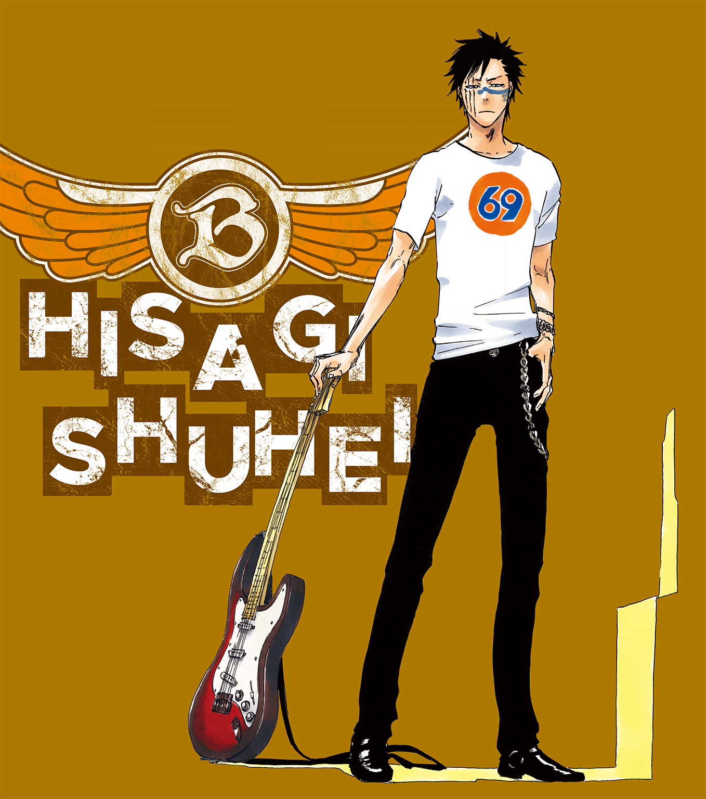

| BLEACH Can't Fear Your Own World I | |
| 久保帯人 & 成田良悟 | |
この本は縦書きでレイアウトされています。
また、ご覧になる機種により、表示の差が認められることがあります。

この作品はフィクションです。実在の人物・団体・事件などにはいっさい関係ありません。
『干戈を交うるに美学を求むべからず。
不帰に美徳を求むべからず。
己一人の命と思ふことなかれ。
壱王伍公を護りまほしくば、敵尽く葉陰より屠るべし』
――真央霊術院教本 死神心得大鑑 旧版より抜粋
『戦いに美学を求めるな。
死に美徳を求めるな。
己一人の命と思うな。
護るべきものを護りたければ、倒すべき敵は背中から斬れ』
――真央霊術院教本 死神心得大鑑 最新版より抜粋
序章 壱
一つの、戦があった。
死を司る神と称する者達と、悪しき魂を滅却してきた者達との大戦。
千年に亘る確執の果てに、互いの『王』が失われるという形で争乱は終息した。
死神と滅却師の関係性は、この多大なる喪失を契機として新しい時代を迎える事となる。
双方の王を斬ったのは同一人物であり、死神でも滅却師でもない存在だったというが、その事実を知るのは極一部だ。
尸魂界に侵攻してきた賊軍、『見えざる帝国』の首魁を、護廷十三隊の客人である死神代行の少年が討ち取った――その一部分の情報だけが、『護廷十三隊、霊王宮を防衛せり』という布告と共に尸魂界中に広まって行く。
つまりは、尸魂界の根幹たる『霊王』そのものの死は、混乱を抑えるという目的で恒久的に伏せられる事となった。
一般隊士を始めとする尸魂界の住人達は、その多くが今も霊王宮に霊王が鎮座していると信じている。
事実を知るのは、隊長格や上位席官といった一部の死神達、あるいは瀞霊廷の要職に就く者達に限られており、彼らも敢えてその真実を曝け出して人々の安堵を覆そうとはしなかった。
これから、破壊しつくされた瀞霊廷の復興が始まる。
人々の心の支えを奪う事を良しとしなかった上層部の判断が果たして正しかったのか否か――それは、十年、百年先の歴史が判断する事となるだろう。
そうした形の結末を迎え、後に『霊王護神大戦』と呼ばれる事となる一連の争乱。
時は、その戦争が終結した直後にまで遡る。
≡
霊王宮本殿 霊王大内裏
かつて霊王が鎮座していた場所で、霊王宮の神兵達がせわしなく動き回っている。
その中央にある『モノ』を、零番隊の一員である真名呼和尚――兵主部一兵衛が、己の黒々とした髭を撫でながら無言で見つめていた。
すると、その背後から飄々とした調子の声が掛けられる。
「いやぁ......それが新しい霊王様かい、和尚」
和尚が振り返ると、そこには右目に眼帯をした男――京楽春水が立っていた。
「おう、もう動けるようになったか？ うむうむ、護廷十三隊の総隊長たるもの、そうでなくてはいかん」
快活な笑みと共に言葉を返す和尚。
彼は京楽の視線が自分ではなく、神兵達が作業している空間の中心に向けられている事を確認しながら、相手の問いに答えた。
「おんしならもう分かっておろう。霊王様に新しいも古いもない。わしらが霊王様と呼び奉るものがここに在り続ける事に意味があるんじゃ」
「名には全ての力が籠もっている......ってやつですか」
複雑な表情をしたまま、京楽は敬語に切り替えて言葉を続ける。
「......最悪の場合、一護クンがその『名』の中に封じられていたわけですよね」
「そうならんで良かったろう？」
場合によっては一護が『霊王』と呼ばれる存在になる可能性もあったと、こともなげに告げる和尚。だが、その言葉に感情らしきものは含まれていない。
そして、ニカリと歯を見せて笑いながら黒崎一護について口にした。
「わしもあの坊主の事は気に入っとる。話もできんようになるのは些か寂しいでな」
「何よりですよ。これでボクも、一護クンの友達に恨まれずに済んだ」
「ああ、通魂符を渡したんじゃったな。四十六室と貴族連中には黙っとくとしよう」
「......やだなあ、どこまでお見通しなんです、和尚」
霊王の座。それは決して良いものではないどころか、黒崎一護にとっては最悪の結末の一つだと京楽は考えていた。
視線の先にある『モノ』を見て、京楽はそれを改めて心に刻みつける。
その最悪の事態に備えて、京楽は現世にいる黒崎一護の関係者達に通魂符と呼ばれる特殊な霊具を渡していた。
現世と尸魂界を自由に行き来する事を可能とする符であり、以前尸魂界に空座町の人間を生きたまま転送した技術を元に改良が進み、実用化に至った代物である。
京楽は静かに目を伏せ、黒崎一護の友人達に『力の種類によっては、現世に返すわけにはいかなくなる』という可能性の一つを告げに行った時の光景を心に浮かべた。
ふざけて話をしにきたわけではないと言った自分に対し、一番おどけていたにも拘わらず、深い怒りを湛えた瞳で『......ふざけてないのに、そんなカンタンに別れがどうとか言うのかよ』と告げた少年。本気で一護の為に怒りを見せた彼とは対照的に、冷静な瞳のままで一護を強く信じ続けている黒髪の少年、そして、自分よりも一護の家族の事を気遣いつつ、一護の身を案じて深い憂いを抱いていた少女。
――茶渡クンといい織姫ちゃんといい、一護クンは友達に恵まれてるねえ。
――いや、一護クンだからこそ、あの子達を惹き付けたのか......。
現世の少年達の事を考え、京楽はこの戦争を終わらせた立役者である黒崎一護の無事に安堵し、薄く目を開きながら和尚に対して告げた。
「なにより、一護クンが和尚達に斬られなくて良かった」
さらりと奇妙な言葉を口にする京楽。
和尚はそれを否定も肯定もせず、己の禿頭をペチペチと叩きながら快活に笑った。
「わしはユーハバッハではないからな。未来を見通すなどできんという事じゃ。......いやあ、本来ならば、黒崎一護は奴には勝てん、寧ろ負けてもらわねばならんかったんじゃがのう」
「和尚......」
「じゃが、坊主にとっては幸運な事に、ユーハバッハは完全に霊王の力を手に入れよったからな。それ故に、黒崎一護が勝ったにも拘わらず、尸魂界はこうして崩壊を免れておる」
そう言いながら、大内裏の中央に置かれた『モノ』に対し、パン、と手を合わせる和尚。
透き通るような柏手の音と共に目を閉じる和尚の背後で、京楽は更に問おうとした。
「和尚、それは霊王の御意志ですか？」
「ふむ......」
「それとも......五大貴族の始祖達の『遺志』なのかい？」
言葉尻から敬語が消えた京楽に、和尚は飄々と答える。
「これこれ、始祖の御歴々には敬意を払わんか。敵意が隠しきれておらんぞ。朽木白哉や四楓院夜一の事もそんな目で見とるのか？」
「彼らに思う所はないよ。護廷十三隊の同志であり、ボクの大事な友人達さ」
苦笑しながら首を振り、京楽は口調を崩したまま言葉を続けた。
「先祖の行動は彼らとは関係無いけれど、逆に、彼らが先祖の罪を無かった事にするわけでもない。そうだろ、和尚？」
「そうは言うがのう、そもそも五大貴族の始祖はもはや誰も残っては......」
和尚がそこまで口にした所で、鈍い爆発音が大内裏に響き渡った。
「！」
京楽が音の方向に目を向けると、そちらから死神とは違う色濃い霊圧が感じられる。
視線の先では、未だに『見えざる帝国』の建築物と融合していた区画があり、その壁の一部が破壊されて白煙を上げていた。
そして、壁の奥から白煙よりも更に白い人影が数体現れる。
大内裏を警戒していた神兵達が一斉に刀を抜いて構えるが、和尚が彼らを声で制した。
「あー、かまわんかまわん。おんしらが勝てる相手ではないわい」
すると、既にこちらに跳躍していた白い影の一人が、毒気を抜かれたように舌打ちする。
「チッ......なんだよ。闘るんじゃねえのかよ」
野生の獣を思わせるその白い影――グリムジョー・ジャガージャックは、着地と同時に鋭い目つきで和尚と京楽を睨み付けた。
「だが、手前らが刀を収めた所で、俺が退く理由なんざ......」
そのまま己の斬魄刀に手をかけるグリムジョーだったが、その後頭部に小さな虚弾が叩き付けられる。
「がッ......!?」
頭を殴られたような衝撃にグリムジョーが振り返ると、そこには彼と同時に尸魂界にやってきた破面の女性、ネリエル・トゥ・オーデルシュヴァンクが立っており、虚弾を撃ったと思しき左手をこちらに向けていた。
「ネリエル、てめえ......！」
「喧嘩を売ってる場合？ 滅却師の王が倒れた今、尸魂界の最大の異物は私達よ」
「だからどうした？ ビビッてんなら、とっととその足手まといを連れて黒腔にでも逃げこんでりゃいいだろうが」
足手まとい、とグリムジョーが呼んだのは、ネリエルの左肩を支えている一人の女破面だった。
ネリエルと同じ『Ｎｏ．３』の称号を持つ十刃、ティア・ハリベルである。
ハリベルは『見えざる帝国』が虚圏を襲撃した際、真っ先にその戦いの矢面に立ったのだが――ユーハバッハの圧倒的な力によって無力化され、そのまま虚圏制圧の証として捕縛されてしまっていた。
霊王宮を改造する際に、ユーハバッハが自らの居城の牢獄を組み込み、虜囚となっていた彼女もそれに合わせてこの空域にやってきた形となる。
破面達への見せしめか、あるいは彼女の事すら改造して滅却師の尖兵とするつもりだったのか、ユーハバッハが亡き今となっては彼女を囚え続けた目的は解らなくなってしまっていた。
ただ一つ確かなのは、彼女がまだ生きており、現在、黒崎一護達と共に訪れたネリエル達の手によって解放されたという事だけである。
ネリエルは事実上、虚圏の新たな王であるハリベルを救出した形となるのだが、現在の状況には複雑な想いを抱いていた。
あれほどまでに霊王宮への到達を望んだ藍染よりも先に、配下であった自分達がこの場に立っているという事実に戸惑いを覚えつつ、ネリエルは死神達に敵意を向けているグリムジョーに告げる。
「滅却師達との戦いで疲弊した相手に喧嘩を売るの？ それが貴方の満足する闘争？」
「......チッ。甘ったるい考えしやがって。大体、死神のこいつらが本当に俺らを見逃すと思ってんのか？ 帰り際に後ろから斬り付けられるのは御免だぜ」
それに答えたのは、黒々とした髭を蓄えた、禿頭の好々爺だった。
「おう、おんしらなら、いくらでも見逃してやるわい。なんなら虚圏まで見送りをつけてやっても構わんぞ」
「......あぁ？ 誰だ手前。随分軽く見てくれたもんだな」
手負いの自分達など脅威ですらない。
そう言われたものと受け取ったグリムジョーは、全身に殺気を漲らせて禿頭の老人を睨み付ける。
だが、当の相手はその殺気をあっさりと受け流しつつ、淡々と答えた。
「逆じゃ、逆。なんせ、おんしらはそこいらの虚より幾万幾億も色濃い禍ゆえ、浄化するにせよ消すにせよ、今の状況で迂闊にやればそれこそ三界の均衡が崩れるというものよ」
「............」
グリムジョーはしばし沈黙したが、己の中で折り合いがついたのか、殺気を抑え込みながら舌打ちをする。
彼としては、こんな所で遊ぶよりも、一刻も早く黒崎一護との決着をつけたいのだろう。
ネリエルはそう推測し、いざという時は不意打ちで黙らせて虚圏まで引き摺って帰ろうと考えていたのだが――不意に、自分が肩を貸しているハリベルが口を開いた。
「......それが、お前達が『霊王』と呼ぶモノか」
独り言とも受け取れる、囁くような言葉。
彼女の視線は、死神達の背後、宮殿の中央に鎮座しているモノに向けられていた。
「......そんなものが、尸魂界の根幹だというのか......？」
「ふむ、破面の娘さんよ。やはりこういうのは許せんか？」
己の顎髭を擦りながら問う禿頭の男の言葉に、ハリベルはゆっくりと首を振る。
「......今の私はただの敗残兵だ。何も言う資格はない。だが、かつて我らの王だった男が、其れを憎み続ける意味合いは理解した」
ハリベルはネリエルの肩から離れ、自分の足で死神達に背を向ける。
「迷惑をかけたな。......この借りは、いずれ返す」
「ああ、いいよいいよ。こっちとしちゃ、君らが虚圏で大人しくしていてくれれば充分さ。それに、礼ならボク達じゃなくて黒崎一護クンに言うべきだ」
京楽がそう言いながら破面達を送り出すと、彼女達はそのまま大内裏を去って行った。
男の破面は『ああ、そうだ......黒崎の野郎に借りを返さねえとな......』と、ハリベルとは違う意味での『借り』を口にしており、それを聞いた羊角の女破面が『満身創痍の一護とケリを付けるのがあなたの望みなの？』と、先刻と同じような物言いで窘めているのが聞こえて来る。
「やれやれ、一護クンも本当に顔が広いねえ......。おや？」
そんな事を呟く京楽の横で、和尚もまた足を大内裏の外に向けていた。
「どこに行くんです、和尚」
「なに、零番隊の連中を、ちょいと起こしにな」
零番隊。
和尚を含めた五人で護廷十三隊全勢力と比肩しうると言われている、王属特務の親衛隊である。
それぞれのメンバーが、斬魄刀や死覇装など、現在の死神達にとっての基盤とも言える物を生み出して来た開拓者でもあり、正しく死神の歴史を零から練り上げてきた偉人達と言えるだろう。
だが、京楽はここに来るまでの間に、和尚を除いた零番隊はユーハバッハとその配下達の手にかかって斃されたと聞いていた。
それを『起こす』と表現する言葉に内心で首を傾げた京楽だが、その答えはすぐに和尚の口から吐き出される。
「伊達に自らの血肉を王鍵と化しておるわけではないぞ？ 皆に与えた零番離殿を巡る霊脈と、零番隊各自の霊力はほぼ融合しておる。零番離殿全てが滅びぬ限り、わしが名を呼べば歩ける程度には回復するわい」
「それって、一護クンが勝ってなければ本当にまずかったんじゃないかい、和尚」
霊王宮は、ユーハバッハの手により一度『真世界城』へと塗り替えられた。
ユーハバッハが健在であれば霊王宮の残滓もやがて消滅し、零番隊は文字通り和尚以外全滅という事になっていたかもしれない。
「なに、零番隊は簡単には死なんし、死なせて貰えん。そういう運命よ。まあ、何にせよ、王悦達にはこれからもきっちり働いて貰わねばならん」
それこそ平時の京楽のように飄々とした調子で語る和尚は、そこで一旦言葉を閉じ、顎髭を数度擦りながら霊王宮の空を見上げた。
「此度の戦に乗じて、ちいとばかし悪さをした童もいるようじゃからな」
≡
半刻後 霊王宮 鳳凰殿
「......Ｏｈ。こりゃ参ったＮｅ」
和尚の手によって、生死の境より辛うじて帰還した二枚屋王悦。
彼は鳳凰殿の地下の更に奥深く、普段は零番離殿に広がる海の底に存在する刀櫓の中で大仰に頭を抱えていた。
彼の瞳に眼鏡越しに映るのは、破壊された鉄扉と、バラバラに斬られた注連縄と布綱の残骸である。
本来ならばそこには、とある斬魄刀が封印されている筈だった。
しかし、その封印は無惨に破壊されており、当の斬魄刀は影も形も見当たらない。
その様子を見て、王悦の横に立つ少女――二枚屋親衛隊の一人である斬魄刀、燧ヶ島メラが大きな溜息を吐き出した。
「御館サマが暢気にやられてる間にこの始末だよ。ったく」
この刀櫓は普段は海中深くにあるので辿り着く事も困難な場所なのだが、黒崎一護の斬魄刀を打った際に干上がった為、現在は海の底が広く露出している。
「緊急時とはいえ、悪い条件が重なっちまったＮｅ」
王悦はそう言って、眼鏡の位置を直しながら周囲に目を向けた。
そこには何人もの男達が倒れており、砥ノ川時江や鑿野のの美を始めとした王悦の親衛隊の面々によって修復を受けている。
倒れているのは、刀櫓の警護を担当していた者達だ。
「海が干上がってオープンドァ、ちゃんボクと鞘伏も出払ってたしＮｅェ」
そこで王悦は目を細める。
彼の目には、ユーハバッハ達と相対した時とは違う感情の色――静かな怒りが籠められていた。
「そして何より......尸魂界のエマージェンに火事場泥棒やらかす下衆がいるとはＮａ」
人間形態へと変じた斬魄刀の中でも、比較的腕の立つ面々ではあるが、彼らの傷には奇妙な点が見受けられる。
火傷を負った者や、身体の一部が凍り付いている者、感電したかのように痙攣を続けている者、毒に侵されたと思しき者、身体中に穴を穿たれた者や、鈍器で四肢を叩き潰されたかのような者までいた。
斬魄刀ならではの特殊な『刀疵』の数々に塗れた守護者達を見て、メラが舌打ちをする。
「ったく、一体何人がかりだよ。そんな兵力があるなら戦争に回しゃいいのにさ」
すると、意識を取り戻した斬魄刀の一人が、メラの言葉に首を振った。
「違う......」
「おい、大丈夫なのか？ ......違うって、何がだよ」
「一人だ......ここを襲撃したのは......たった一人だった......」
「.........？」
相手の言葉に、メラはさらに首を傾げる。
彼の言葉が真実だとするならば、様々な種類の疵痕とつじつまが合わない。
だが、王悦は違う反応を見せた。
彼は色眼鏡の奥で目を細め、得心がいったとばかりに両手を広げて大きく頷く。
「アイシー、アイシー、ウェルウェルウェル。なるほど納得そういう事Ｎｅぇ」
「色んな意味で気持ち悪いから、一人で納得してんなよ御館サマ」
「しーキビだねぇメラちゃん。まあ、今のトークで大体犯人が絞れただけＳａ」
王悦は暫し考えこんだ後、特定の人物を思い浮かべながら床に散らばる封印布の一切れを拾い上げた。
そして、何かに食い千切られたように見えるその布地を見ながら独りごちる。
「雑魚に握らす刀はねぇが......『已己巳己巴』は、そもそも雑魚が握れる刀じゃねぇ」
消えた斬魄刀の名を呟きながら、王悦は刀匠としての僅かな悲しみと怒り、そして多大なる疑念を込めた瞳で虚空を睨む。
「なら、アイツを誰に握らせるつもりなんだろうＮａ？ ......四大貴族様はＹｏ」
≡
そして、戦争の終結と共に、霊王宮の結界は再び閉じられた。
戦の残滓を感じさせる凍てついた空気と、以前と変わらぬ『霊王』の威光。
更に、幾ばくかの災禍の火種。
あるいは――
尸魂界の黎明期より内包し続けた様々な『罪』を、色濃い霊子の中に漂わせながら。
序章 弐
尸魂界に、一人の男がいる。
かつて己の命を救った死神に憧れ、自らも同じ道を目指した男。
その男は、流魂街出身の平民でありながら真央霊術院で優秀な成績を収め、席官を経て副隊長の地位にまで上り詰めた。
義に厚く命令には忠実、仲間を救う為に負傷も厭わず、尸魂界の為ならば己の命をも賭す。
更に、敵対した者に対する非情さも持ち合わせ、正々堂々を好みながらも、大義の為ならば自らが泥に潜み奇襲にて敵を屠り去る事ができる男だ。
死神。
彼は敵に死を与える者。
彼は世界の死を祓う者。
そして彼は、現世に住まう人々の『死』を『救い』へと変える者である。
まさしく、尸魂界における死神の型版とでも言うべき存在。
良くも悪くも、『護廷十三隊の死神らしさ』を体現したような男だった。
その死神の名は、檜佐木修兵。
九番隊の副隊長という地位は尸魂界の記録に名を残すに足るものであり、一般隊士達とは明確に一線を画している強者だ。
しかしながら、尸魂界の『記録』には残っても、山本元柳斎重國や更木剣八、黒崎一護のような、万人の『記憶』に残る者達との間には明確な壁がある。
そのような面も含めて、周囲からは『副隊長らしい副隊長』と呼ばれていた。
褒め言葉とも嘲りとも受け取れるその評価を、檜佐木修兵本人が知る事はない。
もっとも、知った所で彼が生き方を変える事はないだろう。
彼は既に、自分の生き様を選んでいるのだから。
死神に命を救われた時か。
真央霊術院に入学し、初めて斬魄刀を握り締めた瞬間か。
演習で仲間を失った時か。
自ら手本とすべき生き様の男に出会い、その男に副官として身命を捧げた時か。
あるいは――自らの手で、その男を斬った時か。
どの時点で彼が『死神』という生き様を受け入れたのか、誰にも解らぬ事だった。
恐らくは、道を歩み続ける檜佐木修兵自身にさえも。
≡
瀞霊廷 一番隊舎前
「それじゃ、何か言い残す事はあるかい？」
総隊長の言葉が、罪人の周囲に静かに響く。
滅却師との戦争終結から数日後。
瀞霊廷に落ちてきた謎の鳥のような異形の排除も完了し、周囲からは死の匂いが大分薄らいでいる状況だったのだが――現在の一番隊舎前には、戦争の最中と欠片も変わらずに緊張の糸が張り巡らされている。
総隊長である京楽の周囲にいるのは、地下監獄最下層『無間』を管理する刑軍の面々、そして有事に備えて散開している隊長格の死神達だ。
一時的に『無間』から出獄させていた大逆人、藍染惣右介の再収監。
現在は、多くの死神達が滅却師との戦闘によって死亡しており、無事な者達もその大半が負傷者の治療に当たっている最中だ。
井上織姫の助力によって生死の狭間に居た死神の多くが命を繫ぎ止めたが、彼女の『双天帰盾』の力は失われた霊圧の回復には向いていない。傷は治せても元の霊圧まで全快させていては、他の患者の命も織姫の体力自体も保たなくなる。
よって、他に誰も手が施せぬレベルの重症患者は織姫が担当、峠を越えた者から四番隊が引き継ぐ形で治療が進められた。
上半身が吹き飛んだ破面すら再生させた事のある織姫の力といえど、限界はある。
致命的な損傷から時が経過し過ぎた者、完全に魂魄が消失した者、そもそも跡形すら残らなかった者などは双天帰盾でもどうしようもない。
失われた命は多く、無力感に心が折れかけた死神達も多かったが――それでも、最終的な勝利の報は護廷十三隊を一つの強靭な組織として奮い立たせるには充分だった。
藍染惣右介を前に『万全の構え』などという言葉は存在しないに等しいが、それでも、彼らは最大限の警戒を持って再収監の場に臨む。
とはいえ、最終的に『無間』の中にまで入るのは総隊長の京楽だけだ。
形式として「言い残す事」を尋ねた京楽だが、藍染に迂闊に喋らせる事は危険だという事も承知している。椅子に括られ、身体の各所を封印された今の状態でも鬼道は発動できるし、そもそも彼が口にするただの『言葉』すらも計略の一つとなりかねない。
こちらから尋ねたものの、不穏な事を言いだした場合はすぐに声を封じなければと考えていた京楽だが、それを察したように、藍染が不敵な笑みを浮かべながら首を振った。
「残念だが、言葉を残す価値のある者はここに居ない。京楽春水、君も含めてね」
「それは何よりだね。キミにとって価値があるという事は、相手にとっては不幸って奴さ」
「もう少し黒崎一護と語らいたかったのだがな。浦原喜助が気を回したか」
一護は現在、父親の黒崎一心や井上織姫達と共に流魂街にある志波空鶴の屋敷に滞在している。
戦力を考えるならば藍染を封じる場に一護が居るべきなのだろうが、一護の中にある虚などに藍染が何かしら影響を与えるのではないかという事を警戒しての処置だった。
「一護クンは元々部外者だからねぇ。それに、何か彼に話す事があるとしたら、もう済ませてあるんだろう？」
誤魔化すように言って笠を直し、無傷の左目で藍染を見下ろす京楽。
封印は浦原喜助の手によって以前よりも更に強力な物となっているが、それでも油断はならない。救命装置から出て来たばかりの涅マユリが『浦原喜助の処置など信用できるものかネ』と言って自ら新たな拘束具を造ろうとしたのだが、それを待つ時間はなかった。
「じゃあ、行こうか。刑期を終えた後、君が尸魂界の味方である事を祈るよ」
「心にも無い事を」
全てを見透かすような笑みを浮かべつつ、藍染は京楽を見もせずに言葉を紡ぐ。
「そもそも、私の刑期が終わるまで、尸魂界が存続していると信じているのか？」
「もちろんさ。存続させるのがボク達の仕事だからね」
「君も霊王宮で見たのだろう？ この尸魂界の原罪を」
「............」
奇しくも、藍染は元部下であるハリベルと同じ表現を口にした。
京楽は知っている。
彼が言っているのは、自分が霊王宮の大内裏の中で見た物の事であると。
だが、敢えて藍染の言葉には応えず、そのまま無間への入口へと先行する。
藍染の問いに答えるとしても、それは無間の奥、他の隊長達の声が届かなくなる場所にまで辿り着いた後にすべきだと判断しての事だった。
当の藍染も返答は期待していなかったが、京楽の、あるいは周囲の死神達の心を見透かすかのように皮肉の言葉を口にする。
「君にしては口数が少ないな。私との会話が死神達の変節を呼び起こす事を怖れているのか？ 東仙要のように」
すると次の瞬間、怒りに満ちた声が一番隊舎の前に響き渡った。
「巫山戯るな！」
怒声をあげたのは、京楽ではない。
息を切らせ、ここまでようやく駆けつけたという様相の死神だった。
顔面の疵痕と刺青が特徴的な若い死神――九番隊副隊長、檜佐木修兵である。
身体中の包帯が痛々しく、未だ満身創痍と言える状態に見えた。
実際彼は、四番隊の療養所から抜け出してきたばかりである。
ユーハバッハの親衛隊であるリジェ・バロによって身体を撃ち抜かれ、死神にとっての心臓とも言える鎖結と魄睡を損傷して瀕死の状態となっていた。
だが、リジェの『万物貫通』の力があまりにも鋭かった為に、穿たれた穴以外の体組織が破壊されずに済み、奇跡的に一命を取り留めたのである。
織姫から治療を受けて傷だけは回復した檜佐木だが、魄睡を損傷した際に失われた霊圧は簡単には回復せず、実質的に数日間昏睡状態となっていた。
そして、まだ完治していないにも拘わらず、彼は再封印されようとしている藍染の元へと訪れたのだ。
無理を押してまで駆けつけた理由の一つは、九番隊副隊長としての責務を果たす為。
檜佐木の上司である九番隊隊長、六車拳西は、身体がゾンビ化して仮死状態となっており、元の状態へと回帰させる為に十二番隊の特殊治療カプセルの中に入れられていた。
だからこそ、辛うじて動ける自分だけでも現場の警戒にあたろうとしたのである。
もう一つの理由は――これは半分無意識での事なのだが、かつて彼の上司だった東仙要の仇である男が収監される姿を、己の目でハッキリと見届けたかったという私的な感情からだった。
実際、彼は心の内では納得している筈だった。
これで藍染が再び収監されれば全てが丸く収まる。
自分の私怨で話をややこしくするわけにはいかないのだと、檜佐木は拳を強く握りしめながら己を律しようとしていた。
だが、その覚悟は、駆けつけた途端に聞こえて来た藍染の言葉によって決壊する。
「東仙隊長が......お前の言葉なんかで信念を曲げたって言いたいのかよ......」
「妙な物言いをするな、檜佐木修兵」
怒りを露わにする檜佐木の前で、藍染は泰然自若とした態度で言葉を返した。
「君は東仙要が心変わりをした瞬間に立ち会った事などないだろう？ 君が死神になった頃には、既に東仙要は私の部下だったのだから」
「.........！」
すると、京楽が窘めるように口を開く。
「修兵クン、キミの怒りは正当なものだよ。でも、すまない。今は抑えちゃくれないか」
「......ええ、解ってます、総隊長」
檜佐木は斬魄刀に手を伸ばしそうになる自分の心を鎮めつつ、藍染に対して答えた。
「あんたは黒崎と共闘してユーハバッハを斃したかもしれないけどよ......何をしようと、俺にとっちゃ永遠に東仙隊長の仇だ」
復讐。
その単語を、藍染の名を聞く度に何度思い浮かべただろうか。
だが、それは肯定と否定、二つの意味を同時に呼び起こすものだった。
心の中では、確かに東仙を誤った道へと導き破滅させた藍染への憎しみはある。
一方で、強い負の感情に囚われつつある己への疑念と苛立ちも渦巻いていた。
復讐心に囚われ、道を誤った東仙を止める為に動いていた檜佐木からすれば、自分がその『復讐』を口にする事は、共に戦った狛村を始めとする死神達、そして何より東仙本人への侮辱に他ならないのではないかと。
そんな彼の胸中を見透かすかのように、藍染が薄い笑みと共に残酷な言葉を並べていく。
「永遠などと、軽々しく口にするものではないだろう？ 東仙要の信念ですら永遠ではなかったのだから」
「......ッ！ お前がそれを......」
激昂しかける檜佐木の怒声を、藍染は続く言葉で押さえ付けた。
「君は一つ、勘違いをしているようだな」
静かな声。
だが、檜佐木の叫びを圧倒する、明確な『力』の籠もった声だった。
「私は東仙要を、罰すべき敗残兵として手にかけたわけではない」
一瞬の間。
藍染は周囲の困惑を余所に、己の意思を短い言葉に籠めて吐き出した。
「あれは、私なりの慈悲だ」
その言葉に、周辺の空気が凍りつく。
檜佐木だけではなく、京楽や周囲の死神達も、藍染の発している言葉の意味を即座に理解する事はできなかった。
僅かな沈黙を置いて、握り締めた拳を振るわせながら檜佐木が口を開く。
「慈悲......だと？」
いけしゃあしゃあと宣う藍染に対し、檜佐木は更なる怒りを煮えたぎらせた。
藍染に対してではない。
このような男に、むざむざと東仙要を殺された自分の弱さに対しての怒りだ。
「どこまで......テメェは東仙隊長を虚仮にすれば......」
そんな檜佐木に対し、藍染はあくまでも淡々と語り続ける。
「あのままの状況では、後から辿り着いた井上織姫も卯ノ花烈も、東仙要を救おうとするのは明白だ。だが、それが彼にとって何を意味するのか、君達には解らないだろう」
「.........？」
「東仙要があのまま生き延びれば、彼はやがて比類無き絶望をその身で受け止め、心朽ち果てる事となる。あれほどの美しい覚悟の持ち主が、更なる絶望に絡め殺されるのは忍びない。だからこそ、最も忠誠心の高かった部下への手向けとして慈悲を与えた。ただ、それだけの事だ」
檜佐木には、相手が何を言っているのかまるで理解できなかった。
さりとて、適当な言い訳で場を誤魔化しているようにも思えない。
困惑する檜佐木を余所に、藍染は続く言葉を周囲にいる死神達に向けて投げかけた。
「君達も、いずれ知る時が来るだろう。この尸魂界が......死神というものが、如何に危うい幻想で形作られているのかという事を」
「......そこまでにしようか。君にしては口数が多い」
藍染の言葉を止めた京楽が、そのまま刑軍に指示を出し、無間の入口へと藍染を移送させようとする。
「待ってください総隊長！ 藍染の奴は一体何を......」
納得ができないという様子の檜佐木の前に、二番隊隊長の砕蜂が立ち塞がった。
そして、背後に回りながら一瞬で檜佐木の片腕をねじり上げる。
「いい加減にしろ！ 奴に知己を奪われた者が貴様一人と思うな！」
「ぐッ......！ ですが砕蜂隊長......！」
「貴様程度に仇が討てるならば、疾うに我々が奴を処断している！ 貴様の行為は悪戯に周囲を混乱させているだけだ！」
「............」
その事実を誰よりも痛感しているのは、檜佐木自身だった。
自分では藍染という強大な存在に対して何もできない。
藍染の発するただの『言葉』に動揺している自分に、一体何ができるのかと。
憎しみを抱こうとも殺すにはあたわず、さりとて許す事も忘れる事も叶わない。そんな事は、檜佐木はとうに理解していた。
すると、体を縛りつけられている椅子ごと連行されていた藍染は僅かに首を傾け、檜佐木へと視線を向ける。
「――『責任だけを刃に乗せて刀を振るうのが隊長の仕事であり、憎しみで刀を振るうのは薄汚れた暴力に過ぎない』。日番谷冬獅郎が、かつて私に投げかけた言葉だ」
「ぐッ......」
檜佐木は、その言葉に黙り込む事しかできなかった。
自分がやはり隊長の格には程遠いと言われていると感じたが、自らもその通りだと考えてしまった為、反論の代わりに目を伏せ強く歯嚙みする。
だが、藍染はそんな檜佐木の口惜しさすら否定した。
「安心するといい。君が抱いているものは憎しみではない。消え去った東仙要とその足跡に対する感傷に過ぎない」
「なッ......」
「覚えておくといい。如何に強い決意を身に抱こうと、単なる感傷で強者を屠る事など出来はしないのだと」
「......ッ！」
すると、その会話を打ち切るように京楽が強く手を打ち鳴らす。
「はいはい、そこまでって言ったよね？ 霊圧で運び手の子達を脅かすのは止めてくれないかい？ この場に言葉を残す価値なんてないんだろう？」
その言葉に死神達が目を向けると、椅子に封じられて動けぬ藍染を運ぶ刑軍の人間達が、全身から脂汗を流していた。
「単なる余興というやつだ。これから退屈な時間を過ごす事になるのでね、私のささやかな言葉で僅かなりとも尸魂界の未来が変わるのかどうか、それを推察して楽しむとしよう」
「やれやれ、趣味がいいとは言えないねえ」
そこでようやく霊圧から解放された刑軍の面子が、呼吸を必死に整えながら再び歩を進め始める。
地下へと消えていくまでの僅かな間に、藍染は最初と変わらぬ静かな声で周囲の死神達に対し、何かを試すかのような言葉を投げかけた。
「真実を見通したければ、自らの血肉と魂を贄として足搔く事だ」
そして、最後に一つだけ、蛇足とも取れる一言を呆然と佇んでいる檜佐木修兵に対して付け加える。
「少なくとも、東仙要はそうしてきた。それは君も知る所ではないのかな？」
かくして、黒崎一護と共にユーハバッハを討った大罪人は闇の奥へと姿を消した。
世界を達観した藍染の言葉は到底虜囚の其れとは思えず、多くの死神達は不遜な負け惜しみであると眉を顰めたのだが、一部の隊長格は『虚言を弄する男ではあるが、無意味な事を言う男ではない』と、心の片隅に留め置いて気を引き締める。
檜佐木は最後まで自分の感情を整理する事ができず、藍染の言葉は緩やかな毒となって心の内に残り続ける事となった。
その毒が檜佐木の心を歪ませる事は無かったが、代わりに運命そのものを蝕み、やがて彼を一つの闘いへと導き誘う。
あるいはそれは、藍染の残した毒がなくとも、彼が東仙の道を追う死神である限り、必ず辿り着くべき運命だったのかもしれないが。
檜佐木修兵は予言者でも全知全能でもなく、当然ながら己の未来を知る術はない。
彼は黒崎一護のような記憶に残る英雄ではなく、
更木剣八のような純然たる力もなく、
浦原喜助のような知恵もなく、
涅マユリのような技術もなく、
朽木白哉のような格もなく、
日番谷冬獅郎のような才能もなく、
山本元柳斎のような経験もなく、
京楽春水のような華もなく、
狛村左陣のような気魄もなく、
六車拳西のように剛胆でもない。
そのように、『隊長を目指すにしろ、このまま副隊長を続けるにしろ、俺に足りない物は数え切れない』と酒の席で自嘲するような彼が持ち合わせる、数少ない資質。
即ち、死神としての矜恃。
檜佐木修兵は、まだ知らない。
殆どの護廷十三隊員が己の基盤として持ち合わせている、そんなありふれた物を守る為に、自分が世界の命運を背負って戦う事になるなどと。
彼がその現実と向き合う事になるのは、大戦終結から僅か半年後の事だった。
一章
数百年前 瀞霊廷 官庁街
「何故、何故あの男が死刑ではないのですか！」
それは、命を賭した叫びだった。
「四十六室にお目通りを！ どうか！」
屈強な守衛が持つ鋼鉄製の六尺棒に遮られながら、一人の青年が声をあげ続ける。
青年の目に瞳の色はなく、細かな所作から盲目であるという事が窺えた。
盲目の青年は音や気配だけで周囲の状況を把握できるらしく、目の前に立つ守衛達の凶猛なる雰囲気は感じ取っている事だろう。
門番達は貴族の縁者なのか、流魂街から来たと思しき青年を見る目には、明確な侮蔑の色が浮かんでいた。
だが、青年は臆す事なく門の奥へと手を伸ばす。
青年の口から吐き出されるのは、断罪を求める叫び。正義の執行を求める純粋な嘆願だ。
しかし門番達はそれに耳を貸すことなく、盲目の青年に対して六尺棒を振るい上げる。
布地の擦れる音。空気の蠢き、足運びの流れ。
盲目の青年はその全てを感じ取り、門番から自分に対して容赦の無い一撃が叩き込まれると判断した。
しかし、彼は避けようとしない。
その表情に浮かぶのは、絶望か、あるいは悲しみか。
ただ、そこで怯えて退くという様なそぶりは欠片も見受けられなかった。
青年は、ここに来た時点で既に己の身命を賭す覚悟を決めていたのだ。
門番達はそれに気付く事なく、盲目故に避けようがあるまいと思い込み、無抵抗の相手に迷わず武器を振り下ろす。
だが――激しい衝突音が響き、門番達の一撃が弾かれる。
「！」
門番達の目に映ったのは、鞘に収められたままの斬魄刀。
そして、それを手にしている者を見た瞬間、門番達は表情を強ばらせる。
「物騒な真似はしないでくれ。まだ歌匡さんの喪中だ」
「あ、貴方は......」
「彼はこちらで説得する。君達は警備の仕事に戻るといい」
「は、はい！」
盲目の青年は、最初何が起きたのか理解できずにいた。
彼の意識は、自分を助けてくれたらしい男の発した人名に囚われる。
歌匡。
自分がここに命がけで訪れた理由。
幼い頃から流魂街で共に過ごした、かけがえのない親友の名だ。
その名を口にした男は、盲目の青年に優しげな声で語りかける。
「君の事は知っているよ。確か、歌匡さんの葬儀に来ていたね」
「......あの人を......知っているのですか」
「同僚というやつさ。私も死神だよ。......だが、私は彼女を護れなかった時点で死神として失格なのかもしれないが」
沈痛な面持ちで語る男は、そのまま盲目の青年に対して手を差し出した。
「場所を変えよう。あの頑冥な門番達と語る事は、もはや何もないだろう？」
「そうか、君が東仙要君か。隊舎の中でも、彼女はたまに君の名前を出していたよ。だから君は、特別に隊葬の儀に呼ばれたんだろうね」
盲目の青年――東仙要は流魂街の住人であり、死神ですらない彼は本来ならば瀞霊廷に自由に出入りする事はできない。
そんな彼が瀞霊廷内に入れたのは、特別な計らいだった。
「歌匡さんは、死神として入隊する時に、あらかじめ遺言状を残していたんだ。虚との闘いでいつ死ぬか解らないからね。寧ろそれは真央霊術院でも推奨されている」
歌匡の知り合いだという死神が言うには、遺言状の中には「自分が死んだら遺体は流魂街に埋めて欲しい」という旨が書かれていた。
「星の見える丘の麓に埋めて欲しいそうだ。場所は、東仙要という親友が知っていると」
「......はい、その丘には、心当たりがあります」
東仙の脳裏に蘇るのは、かつて丘の上にある村の側で、親友と共に夜空を見上げた記憶。
――「わたしは夜空が好きよ。要」
――「だって、夜空は世界に似ているもの」
――「全てが闇に包まれていて、小さな光がたくさんあって」
――「でも、それを覆い隠そうとする雲があるの」
――「わたしはね、要。その雲を取り払う人になりたいの」
――「光が一つだって消えてしまわないように。わたしは雲を払うのよ、要」
星を見上げながらそう言っていた彼女は、やがて夢を叶えた。
世界の光を守る為の力と立場を手に入れたのである。
死神。
尸魂界の全ての基盤となり、現世に生きる者達をこの世界へと導き、循環させる世界の担い手。
悪しき魂である虚を打ち払い、人々の希望となる。
彼女はまさに星を守る権利を与えられたのだ。
だが、夢が叶った彼女は、その続きに足を踏み出す事はできなかった。
「......彼女の夫が、殺したと聞きました」
「ああ、そうだね。彼女の夫は同じ隊の同僚を些細な諍いから斬り殺し、それを諫めようとした己の妻も殺した。それは事実だ」
「......何故、彼女が......あの人が死ななければならなかったのですか？」
悔しさに拳を握り締める東仙に、死神の男が答える。
「これは私の推測だけれど、彼女が誰よりも真っ直ぐな人で......正義と平和を心に抱き続けたからだと思っている」
それは東仙も理解している。
親友である歌匡は、誰よりも平和を愛していた。誰よりも正義を重んじていた。
だからこそ、自らの手を虚の返り血に染める覚悟をしたのである。
「私も、いつかこうなるのではないかと彼女を日頃から案じていた。彼女は正義を貫くには平和を愛し過ぎる。もしも愛も平穏も否定し、ただ苛烈なる正義のみで生きていたならば、彼女は逆に夫を斬っていた事だろう。だが、彼女にはそれができなかった」
「彼女の願いが間違っていたというのですか!? 彼女を殺した男は、大した罪にも問われぬと聞きました！」
「だから、君は四十六室に目通りを願ったのだろう？」
死神は小さく溜息を吐き出し、言い淀むように言葉を続けた。
「......五大貴族、というのを知っているかい」
「具体的な家名は知りませんが、確か......瀞霊廷の貴族の中でも最高位の家柄だと......」
「歌匡さんを斬った男というのは、その五大貴族の血筋だ」
「！」
死神と結婚した事は知っていたが、五大貴族程の名家だとは聞いていない。
困惑する東仙に、死神は更に言葉を続けた。
「本家筋ではない、分家の末裔だからね。その男にはさしたる権力もないが、そんな立場の男だろうと、貴族というのは殺人の罪を軽減させる事ができる。もしも本家の人間ならば、殺人自体を無かった事にしていたか、歌匡さんに叛逆の罪を着せて処刑したという形で落ち着けていただろうね」
「そんな！ そんな......馬鹿な事が......ッ！」
東仙は、思わず声を荒らげる。
親友を殺した男が大した罪にならぬと聞いた瞬間から、心の中で、そのような可能性がある事も考えてはいた。
だが、その彼女自身が『正義の為の力だ』と断じていた組織の中でそのような事が起こるなどとは信じたくなかったのである。
だからこそ――それを否定したかったからこそ、彼は命がけで中央四十六室へ直談判するためにここまで来たのだ。
「死神とは、護廷十三隊とは尸魂界と現世の平穏を守る集団ではなかったのですか！ 四十六室とは世界の理を体現する方々ではなかったのですか！」
「平穏を守ったのさ。貴族も世界の一部だからね。彼らの平穏を守ったんだ。そして、まさに今の四十六室はそうした理不尽な世界の象徴という事だよ」
「......ッ！」
断言する死神に、東仙は呆然と立ち尽くす。
そんな彼に、死神は口惜しげに顔を歪めながら口を開いた。
「君の気持ちは痛い程解る。私も彼女を殺した男がさしたる罪に問われぬなど、どう考えてもおかしいと思っている。しかし、それが尸魂界だ。四十六室は五大貴族の......特に力を持つ綱彌代家の言いなりなんだ」
沈痛な面持ちで語り、男は東仙と同じように拳を握りしめた後――
周囲に人がいない事を確認した後に、静かな声で問い掛ける。
「だが、それを全て踏まえた上で、敢えて私は、彼女の親友である君に聞きたい」
「.........？」
果て無き憤りに心を蝕まれかけていた東仙だが、男の真剣な声色に気圧されるように、開きかけていた口を閉ざして相手の言葉に聞き入った。
「もしも復讐に足る力を私や君が持つとして、それを我々は成すべきだろうか？」
「それは......」
「これは、彼女の願いや尊厳と私達がどう向き合うかという問題でもある。果たして彼女は......東仙君、君に対して復讐を望んでいるだろうか？」
相手の表情を見る事はできない東仙だが、その死神の言葉の端々に、僅かな殺気のようなものが感じられる。
それが逆に自らの冷静さを取り戻す結果となり、東仙は怒りを辛うじて押し込めつつ、親友の言葉を思い出しながら言葉を紡ぎ出した。
彼女の同僚がこのような殺気を滲ませる事など、あの人の望んだ世界とは程遠い。
自分の中で必死に折り合いをつけようとしながら、東仙は死神の問いに対する答えを口にしようとした。
「......あの人は、復讐は望まないと思います。それがあの人の望みであるのならば......私も......」
だが、そこで言葉が止まる。
――『私も、復讐を望まない』
その言葉を、口から上手く吐き出す事ができない。
自分の為に他者が復讐に手を染めるなどと、彼女は決して望まないだろうという事は解っていた。
しかし、臓腑の奥底で絶え間なく脈打つ感情が、それを認める事を良しとしなかった。
――彼女の願いなど関係ない。
――自らの為に復讐を成せ。
己の内から湧き上がる黒い感情の塊が訴えかけるが、東仙はその声に従う事もできない。
彼は知っていたからだ。もしも自分や他の誰かがその憎しみに従ってしまえば――その時こそ、彼女が二度目の死を迎える時であると。
彼女の生きた証の全てを踏みにじる事になる、自らの手で彼女の願いを殺す事になる。
それだけは出来ないと、東仙は己の感情を殺すのと引き替えに言葉の続きを紡ぎ出した。
「私も......彼女の願いを、彼女が望んだ正義と平和を......重んじたいと思います」
「そうか......。そうだな。確かに彼女は平和を愛した。だからこそ命を落としたが......しかし、私はそれが彼女の弱さだったとは思わない」
死神は殺気を薄れさせ、淡々とした調子で東仙に対して言葉を続けた。
「彼女の祈ったものが弱さではなく強さであったと証明できるとすれば、それは君のような者が今後どう生きるかという事だろう」
「............」
「どうか、彼女の願いを君が受け継いで生きてくれ。これ以上、無駄な血がこの世界の中に流れぬように」
「............」
死神の言葉に、心の底から納得ができたわけではない。
だが、東仙は目の前にいる男が親友の事を自分と同じように理解している者だと悟り、憎しみに染まりかけた心を押し止めてくれた事に感謝した。
「......ありがとうございました」
「いや、こちらこそ礼を言わなくてはならないな。こうして、君のような人間が彼女の遺志を継いでくれるという事に」
「いえ、私にそのような資格は......」
今も湧き上がる憤怒と憎悪を必死に抑え付けている自分に、彼女の志を護る資格などない。そう思う東仙に、死神は優しげな笑顔で語りかける。
「人の祈りを受け継ぐ事に、資格など要らないだろう？ 彼女がかつて言っていたよ。自分の願いは大したものではなく、空の星々のように、ただそこにあるだけで輝き続けるものを護りたい、そんなささやかな希望だとね」
「............」
その話を彼女がしたという事は、目の前の男を含め、本当に彼女は同僚の死神達に希望を抱いていたという事なのだろう。
東仙はそう判断し、彼女の尊さを重んじる者が死神の中にもいたという事に安堵した。
「あの......宜しければ、お名前を教えて頂けませんか」
だから、彼は名を聞いた。
彼女の内面を見ていた者が自分以外にも確かにいるのだと、世界は残酷だが無慈悲ではないのだと己の心に刻み込む為に。
すると、男は穏やかな口調で、淀みなく自らの名を口にした。
「ああ、私の名は時灘だ。綱彌代時灘」
「はい、ツナヤシロ様です......か......。......。......？」
そこで、東仙の思考が一瞬止まる。
強い違和感。
聞き覚えのある名が、目の前の男の口から語られたからだ。
――いや、しかし。まさか。
――私の思い違いだろう。
そう思い、再度尋ねようとした東仙の表情を見て、男は小さく首を振る。
「勘違いでも聞き間違いでもないよ、東仙要君」
「え......？」
「君は私の顔はもちろん、声も知らなかっただろうからね。いやあ、最初に名前を聞かれなかったのは僥倖というべきか。偽名を名乗るのはあまり好きではないんだ」
「あの、貴方は何を......」
困惑する東仙だが、彼の臓腑は叫びを上げ、本能が二つの相反する単語を並べ立てる。
『殺せ』
『逃げろ』
と、憎悪と恐怖が入り乱れた感情が全身の血管を駆け巡り始めた。
しかし肝心の理性がそれに追いつかず、どちらの行動にも出られずにいた東仙に対し、男は淡々とした調子で自らの立場を相手に告げる。
「もう一度言おう。私が、綱彌代時灘......君の親友の夫だった男だよ。いや、今となっては、君の親友の仇、というべきか」
「............」
「いやあ、君が復讐を望まないでくれて良かったよ。失うもののない流魂街の貧民に恨まれ続けるなど、保身を考えて二の足を踏む貴族達に恨まれるより余程恐ろしいからね」
いけしゃあしゃあと語る男は、変わらぬ笑顔のままで東仙の頰に手を添えた。
同時に、これまでに体験した事の無い寒気が東仙を襲う。
親友などから感じていたものとは違う、ひたすらに不気味で重々しい霊圧で全身を射貫かれ、体内の激しい衝動を力尽くで抑え込まれた。
度を超した恐怖の感情が、『逃げろ』という本能の叫びすらをも打ち消したのである。
「もしも先刻の問いに『歌匡は復讐を望むだろう』と答えていれば、私は君を斬るつもりだったよ。彼女を全く理解していない愚か者と話すのは不快だからね。同じ死神ならともかく、流魂街の住人などいくら殺しても問題はないしな」
先刻の男の言葉に感じた殺気が自分に向けられていたものだと気付くが、もはやどうでも良い事だった。
相手の言っている言葉の意味も理解できない。したくもない。
だが、東仙の感情を爆発させ、のし掛かる恐怖から身体を解放するには充分だった。
目の前に親友の仇を名乗る男がいる。
それが噓か本当かはもはやどうでもよい。
だが、このような禍々しい気配を人に向ける男が、親友について語る事が許せなかった。
これまで身体の奥底に押し込めていた負の感情が弾け飛び、眼前の死神、綱彌代時灘に向かって襲いかかった。
「――――――――――――――――――――ッッ」
声にならぬ声。
まさしく獣のような叫びと共に、東仙は目の前の男に摑みかかった。
だが――
「我が妻の良友よ、何故そうも憤る？」
東仙の世界が、ぐるりと大きく回転する。
背中から地面に叩きつけられ、身動きが取れなくなる。
口の中に血の味が広がり、手足は激痛と共に麻痺しているのが理解できた。
それでもなんとか起き上がろうとする東仙の上から、穏やかな声が響き続ける。
「私の妻......歌匡ならば、私を許すぞ？」
「おま......え......。お前が......ッ！」
東仙は声の元に向かって叫ぼうとするが、喉から溢れる血が上手く言葉を象らせない。
「先ほどの問いに君は答えたろう？ 彼女の願いを重んじる、と。妻の事を想うならば、私の事を許し、憎しみを忘れ、我ら死神に護られた安寧の中で日々を生きるべきじゃあないのかな？」
「......ッ！」
「我が妻も、君がそうする事を望むだろう。理解したまえ、彼女の為にも」
そして、時灘は起き上がろうとする東仙の喉に斬魄刀を鞘ごと押し当て、喉を潰しながら地面に押しつける。
「もっとも、斬拳走鬼を一つなりとも使えぬ君に、最初から復讐する力などなかろうがね」
そして、東仙の叫びを聞いて集まってきた門番達に声をかける。
「やあ、君達。仕事だぞ？ 流魂街の住民が私に手を上げようとした。早々に叩き出してくれないか？」
「は、はいッ！」
門番達は笑顔のままでそう語る五大貴族の縁者を前に、空恐ろしい何かを感じながらも指示に従う。
彼らと入れ替わる形で東仙の元を去りながら、時灘は思い出したように口を開く。
「ああ、誤解のないよう言っておこう。私は君に噓は一切ついていない。私のような男がろくに罰されないとは、本当におかしな世界だよ。それに、歌匡を世の中の理不尽から護れなかった事も残念だと思っているし、彼女の願いが尊いものである事も理解している」
「――――」
喉を潰された東仙は、それでも何かを叫ぼうとしながら時灘を睨みつける。
盲目である筈の彼にも、ハッキリと見えたからだ。
去りゆく死神の顔に貼り付けられた、悪意と愉悦に満ちた凶悪な微笑みが。
「ただ、私はそういう願いが反吐が出る程に嫌いというだけの話さ」
そして、そんな男に対する怒りよりも深く、親友の願いを踏みにじった世界に対して深い絶望を抱いた。
あの日、彼女が見上げた星々は――決して彼女を照らしはしなかったのだと。
彼女こそが真に世界を照らす光であり、それはもう、永遠に失われてしまったのだと。
深い絶望と怒りに包まれた東仙の頭上に、再び門番達の六尺棒が振り上げられ――
此度は、誰もそれを止める者はいなかった。
≡
現在 瀞霊廷某所
「む......」
そこで、男は目を醒ます。
「やれやれ、随分と懐かしい夢を見たものだ」
男は玉座のように豪奢な安楽椅子上で身を伸ばし、薄暗い周囲の光景に目を向けた。
すると、最初に目に映った小柄な人影が、目を爛々と耀かせながら声をあげる。
「お目覚めですか！ 時灘様！」
「ああ、良い夢を見た。幸先が良いな」
「夢ですか？ どんな夢ですか！ 時灘様！」
まだ年若い子供の声にそう問い掛けられた男――綱彌代時灘は、ふむ、と今しがた見た夢の事を思い出し、口元を邪悪な笑みで歪ませながら言葉を返した。
「懐かしくも心地好い夢だ。今でもハッキリと思い出す事ができるよ。人の心が絶望に満ちる瞬間は実に胸が空くものだ。自分に向けられた果て無き憎悪を叩き潰す瞬間は何度味わっても飽きる事はない。たとえそれが夢の中であってもね」
「そうなんですか？ 良く解りません、時灘様！」
「ああ、いいんだ。お前は何も解らなくていい。まだお前は幼いからな」
時灘の視線の先にいるのは、死覇装に似た雰囲気の黒い衣服を纏った子供だった。
所属を示す隊章などは身につけておらず、どことなく通常の尸魂界の住人とは違った空気を振りまいている。
年頃は、現世の人間に当てはめるならば十五歳前後といった所だろう。充分に美形といって差し支えないのだが、中性的な顔立ちをしており、男なのか女なのか見た目で判じる事はできない。そんな外見の子供だった。
「彦禰は何をしていた？ 私が起きるまでそこで棒立ちしていたわけではあるまい？」
すると、彦禰と呼ばれたその子供は、口元に子供のような笑みを浮かべて答える。
「はい！ 時灘様に言われた通りの事をしたのです！ 時灘様を殺そうとする人達がいらっしゃったので、ちゃんと動かなくしておきました！」
そこで時灘は、改めて周囲の景色に目を向ける。
彦禰の周りには数名の黒装束の者達が倒れ臥しており、何人かは四肢の骨を全て折られて痙攣していた。
その身なりから、隠密機動から貴族達に引き抜かれた暗殺者だろうと判断した時灘は、ゆっくりと椅子から立ち上がって彦禰の頭を軽く撫でる。
「そうか、良くやったな。御苦労だった」
「はい！ はい！ ありがとうございます！ 時灘様！」
子犬のように目を耀かせる彦禰を余所に、時灘はゆっくりと暗殺者達に近づいて行った。
そして、まだ意識があると思しき者の前に立ち、淡々とした調子で問い掛ける。
「もう、君達の依頼人は全て死んだとは思わないのか？ どうしてそうも律儀に仕事を遂行しようとするのかな？」
時灘がそう言いながら、背後にチラリと視線を向ける。
そこには長い卓があり、椅子に数名の貴族らしき者達が座っていた。
彼らの服にはそれぞれ時灘と同じ家紋が縫い付けられており、綱彌代家の一族だという事が推測される。
しかし、彼らが動く事はなかった。
誰もが喉や腹を搔き切られ、絶命しているという事が一目で解る状況だったのである。
「綱彌代時灘を暗殺せよ。普通に考えれば、依頼人は私と同じ綱彌代家の重鎮達だ。だが、彼らはこうして死んでいる。そのまま逃げればただで前金をせしめる好機だったのではないかな？」
「............」
暗殺者は黙して語らない。少しでも自分や仲間の情報を漏らさぬようにしているのだろうが、自害しない所を見ると、まだこちらを殺す機会を窺っているとも受け取れた。
そう分析した時灘は、嬉しそうに口元を緩ませ、賞賛するように両手を上下にゆっくりと打ち鳴らす。
「素晴らしい。一度受けた依頼は、たとえ依頼人が死しても最後まで完遂しようというその心意気に、私は心からの敬意を払おう。......私には決してできぬ事だからな」
「............」
尚も睨み付ける暗殺者に、時灘は言った。
「ああ、その褒美として、一ついい事を教えてやろう。君達の依頼人はまだ生きている。つまり、君達の行為は無駄骨ではなかったわけだ」
「.........？」
倒れ臥したままの暗殺者が眉を顰める。
仲介人がいたとはいえ、時灘の暗殺を依頼するのは彼を疎んじている同家の者達だと推測していたのだろう。
だが、先ほど『依頼人が死んだとは思わないのか？』と言った時灘が、今は全く逆の事を言いだした事に奇妙な違和感を覚え、相手を殺す機会を窺いながら時灘の言葉の続きを待った。
すると時灘は、子供をあやすような笑顔を浮かべながら口を開く。
「私だよ」
「.........？」
「君達に私を殺すように依頼をしたのは、私なんだ」
「.........!?」
困惑する暗殺者に、時灘は続けた。
「綱彌代家に凶刃を持ち込んだ暗殺者を返り討ちにした私は、既に事切れていた一族の皆を発見する。中々に同情を誘う筋書きだろう？」
「......ばか、な」
自分を手の平の上で踊らせていたと告げる時灘に、暗殺者は顔を歪める。
仲介した人間は、いつもと同じ綱彌代家の子飼いだった男の筈だ。
一族にとって腫れ物である時灘には従わない。
だが、その推測を嘲笑うように、時灘が言った。
「混乱しているね。まあ、信じようと信じまいとどちらでもいいんだ。君のような暗殺者は絶望という感情を最初から抱えている場合が多いからな。絶望させるよりも困惑させる方が面白い」
「なに......を......」
声を振り絞る暗殺者に、時灘が嗤う。
「どうして、こんな事をベラベラと喋ると思う？ この屋敷の内部に十二番隊の録霊蟲などが持ち込めない事を踏まえても、自分の計画を口にするなんて愚かだと思わないか？ 私は愚かだと思う」
そして、時灘はそのまま相手の指に足を置いて踏みにじる。
「がぁッ......！」
何本か骨が折れる音を聞きながら、時灘は楽しそうに笑う、嗤う、愉悦う。
「だけどね、止められないんだ。悪癖というやつさ。誰かに聞かれるリスクを冒してでも、私は見たかったんだ！ 君のような誇り高き暗殺者が困惑する顔を！ その表情を！」
丁寧に、ゆっくりと、時灘は何度も何度も男の全身の骨を踏み折りながら笑い続けた。
そして、不意にその笑みを顔から消したかと思うと、冷静に首を振りながら独りごちる。
「よく考えたら、本当に誇り高ければ貴族子飼いの暗殺者になどなる筈もないか」
小さく溜息を吐いて、腰から斬魄刀を抜く時灘。
その様子を見て、彦禰が変わらずに目を耀かせながら声を掛けた。
「楽しそうですね！ 時灘様」
すると時灘は、自らの斬魄刀を相手の脊髄にゆっくりと突き立てながら微笑みを返す。
「ああ、楽しいとも。蹂躙は楽しい。簡単に飽きはするが、半刻もすれば再び心が求めるものさ」
時灘は、その後数刻かけて暗殺者達全員を絶命させた後、斬魄刀の血を拭いながら彦禰へと声をかけた。
「さて、行こうか彦禰。凶漢に殺された大叔父様達に代わり、私が今日から綱彌代家の当主になったと瀞霊廷に告げなければな」
「はい！ 時灘様！ あ、これからは当主様とお呼びした方が良いですか？」
「気にするな。私とお前の仲だろう。時灘のままで良い」
「いいんですか！ 時灘様！」
周りに十数体の死体が転がる中で、彦禰は無邪気な笑顔を耀かせる。
そんな男女曖昧な子供の頭を撫でながら、時灘は殊更に邪悪な笑みを浮かべて断言した。
「なあに、構わないさ」
「彦禰は、いずれ霊王になるんだからな。対等な関係で行こうじゃないか」
二章
数日後 流魂街
檜佐木修兵は、二足の草鞋を履いている。
彼の生業の一つは、誰もが知る九番隊副隊長としての職務。
もう一つは、瀞霊廷通信の編集長だ。
瀞霊廷通信とは、瀞霊廷全土、時には流魂街の一部にまで出回る公共機関誌であり、基本的に九番隊がその管理を行っている。
本来は同じ隊士の業務として扱うべきものだが、あまりにも本来の死神の業務と仕事の質が違う為に、実質的に副業のようなものとして世間に認識されていた。
数百年前までは瓦版とでも呼ぶべき簡易な触れ書きだったのだが、東仙要が隊長となった代から、現世の印刷技術に合わせて急速にその形態が進歩する事となる。
東仙の生真面目な気性ゆえか、隊長自ら編集を務めるようになり、今では多くの連載記事、あるいは隊長達が自ら執筆するエッセイや小説などを載せた一大情報誌として瀞霊廷に広まっていた。
そして現在、東仙が尸魂界を去った後は副隊長であった檜佐木がその責任者となっている。
本来は隊長に返り咲いた六車拳西が編集長となるべきなのだが、本人は『俺の時は隊士連中に任せてたからな......。正直、柄じゃねえ』と檜佐木に丸投げし、現在も檜佐木が責任編集者として編集活動を続けていた。
「で？ わざわざ瀞霊廷通信の編集長様が、おれに何の用だってんだ？」
とある住居の戸口に、訝しげな女性の声が響く。
「何って、もちろん取材ですよ」
檜佐木がそう答える相手は、広い流魂街の中で明確な顔役の一人と言える存在の花火師、志波空鶴だ。
「なんだよ、うちの新しいオブジェの事か？ 参ったな。ありゃ見世物じゃねえんだが」
言葉とは裏腹に自慢げな表情で目を向けるのは、今しがた檜佐木が潜ってきた旗持ちオブジェの石像である。
厳つい男を模った巨大な像が二体並び立ち、珍妙なポーズで『ようこそ志波空鶴邸へ』と書かれた横断幕を掲げていた。
「いや......まあ、一部じゃ確かに話題になってますけど」
「なんなら、次の瀞霊廷通信の表紙にすっか？」
「......ま、一応企画には上げときますよ」
無難な答えを返した檜佐木は、半分誤魔化すように本題を切り出す。
「空鶴さんには、霊王護神大戦の回顧録の作成に協力して頂きたいんです」
「ああ？ 回顧録って......まだ半年経つか経たねえかってとこだろ？」
「だからこそ、今の内に正確な記録を残しておきたいんですよ」
志波空鶴は表も裏も花火師であり、零番隊との関わりなどは全て『副業』と公言していた。それ故に、立場上は九番隊副隊長である檜佐木の方が上なのだが、空鶴には不思議と大物じみた空気があり、副隊長の多くは彼女に敬意を払った接し方をしている。
実際、今でこそ没落しているものの、志波家はかつて何人もの席官や隊長格を生み出した家柄であり、朽木家や四楓院家と並んで『五大貴族』と称された程の名家だった。
更に言うならば、目の前にいる志波空鶴本人もかなりの強者である。
瀞霊廷の屈強な門番の一人を鬼道だけで撃ち倒した事もあると聞いており、檜佐木の目には彼女が単なる花火師ではなく、尸魂界の底の知れぬ実力者として映っていた。
そんな彼女の元に彼が訪れたのは、言葉通り瀞霊廷通信の取材の為である。
現在発行体制の問題で休刊している瀞霊廷通信だが、戦後の復興の様子を広く民衆に伝える為、簡易版が少部数各地に配られていた。戦後から一周年の日に正式復刊する事を目標として、少しずつ足場を固めつつあったのである。
すると、来るべき復刊一号への希望として、『教えて！ 修兵先生!!』という自分のコーナー宛てに、多くの読者から『霊王護神大戦』についての詳細を求める声が届き始める。
『教えて！ 修兵先生!!』は瀞霊廷通信の中にある、檜佐木が読者の疑問に答える不定期連載ページだ。
とはいえその人気にはムラがあり、需要がある度に復活はするものの、再開してから僅か数回で打ち切られる事もある不安定な企画である。
だが、瀞霊廷の人々は未だに戦争の全体像が摑めておらず、本当に戦争は終結したのか、二度とこうした事は起こらないのかといった不安に囚われているようで、その払拭を公共機関誌である瀞霊廷通信に求める節はあった。
実際、『教えて！ 修兵先生!!』に限らず、雑誌そのものに対して戦争の全貌を説明して欲しいという意見が多かったのだが、檜佐木はそれらも全て自分のコーナーへの要望として取り扱う事にしたのである。
これは瀞霊廷通信に課せられた大仕事だ。一般隊員に任せっぱなしにするわけにはいかない。瀞霊廷通信の復刊第一号に合わせた『教えて！ 修兵先生!!』の復活連載という形で、自らが情報の手綱を握らねばならないのだ。
そんな意気込みを持った檜佐木は、自らの足で映像庁や技術開発局、四番隊の特別救護班などの取材に駆け回る日々を送っていたのだが、思うように情報は集まっていなかった。
あの戦争の全体を俯瞰して見る事ができていた者は、実質的に一人も存在しないだろう。果たして、一体何人の話を総合すればその領域に近づけるのだろうか？
そんな疑問が檜佐木の頭を過ぎる。
最も広く戦場を見渡していたであろう男――ユーハバッハは、既に黒崎一護の手によって葬られている。
ならば、自らの足で戦争の断片を拾い集めるしかないだろう。
各地で死神達が如何にして戦い、勝利したのかを広めれば、復興に臨む人々の希望となる筈だ。
尸魂界は今、戦後復興という新たなる戦いに足を踏み入れている。
そんな時だからこそ、人々は自分達が安堵できるだけの『情報』を求めているのだ。
「......つまり、ここから先は俺にしかできない戦いってやつっすよ！」
気合いを入れて事情を説明した檜佐木に、空鶴は腕組みしながら言葉を返した。
「厳つい三白眼を耀かせてるところ悪ぃが、話せる事なんて殆どねえぞ？ おれはただ、零番隊の連中と一護達を打ち上げただけだからな」
男勝りの乱暴な口調だが、不思議と芯の通った声色。
それだけで、檜佐木はなんとなく『ああ、これは本当に話す事が殆どないのだろう』と判断した。過去を語りたがらないというよりも、ただ「自分はやるべき事をやった」と、日常の一部として全てを受け入れているような雰囲気を醸し出している。
「まあ、今日は御挨拶だけって事で、また伺います」
「何度来られても面倒だし、てめぇら死神の喧嘩についておれがどうこう言うのも筋が違うからよ、話なら弟の岩鷲に聞け。あいつは一護達と一緒に霊王宮まで乗り込んだから、ちったぁ話せることもあんだろ」
「！ ......霊王宮に？」
志波岩鷲といえば、かつて朽木ルキアの処刑騒動の際、一護達と共に旅禍として現れた男だ。何故流魂街の人間が霊王宮まで行ったのか、戦争の終盤に戦線離脱していた檜佐木には初耳の事実である。
――そういや、黒崎達の周りがどうなってたかは、まだ取材してないんだよな......。
最も戦争終結に深く関わった一護達には当然ながらインタビューをすべきだろう。しかし、彼らは尸魂界ではなく現世の住人だ。取材のためにわざわざ現世に行くには、総隊長から許可を得なければならない。
――総隊長の許可は貰えると思うが、黒崎ってそういうの協力してくれんのかな......。あんまり自分の事を細かく喋る奴には見えねえが。
いざとなれば一護の近所に住んでいるらしい井上か茶渡に話を聞こうと考えつつ、檜佐木は一度志波邸を後にする事にした。
「解りました、まずは弟さんにお話を伺います」
「おう、岩鷲なら、またイノシシ乗って西流魂街ぶらついてるだろうからよ。適当に探せばすぐに見つかると思うぜ？ 騒がしいバカだから、見りゃ一発で解る筈だ」
「ええ、騒動の度にちょくちょく顔を見かけてるんで大丈夫ですよ」
ダイナミックな人捜しのアドバイスを受けた檜佐木は、空鶴に一礼をして花火の発射台付きの家に背を向けた。
そして、少し先の道端に停めた自分の乗り物の近くまで来た時、檜佐木は気付く。
わざわざ霊子化して現世から取り寄せた『それ』の周りに、数人の男達が集まっている事に。そして、その男達が、ただの流魂街住民とは思えぬ程に濃密で、尚かつ死神や滅却師とも違う性質の霊圧をその身に宿しているという事にも。
「......なんで、こんなとこにカワサキのＺ―Ⅱがあるんだ？」
肩の辺りまで伸びる髪をオールバックに流した男の言葉に、横にいた長身の青年が肩を竦める。
「さあ？」
男達の眼前にあるのは、真紅の塗装が特徴的な現世のバイクだ。
死して流魂街に来た自分達は、周囲の文化レベルが平安から江戸時代といった雰囲気に馴れてしまっている。現世と比べて大きな文化改革が起こらなかったせいか、着物から建築物まで割と時代を感じさせるものが多く、自動車の類などは尸魂界に来てからこの瞬間まで見たことがない。
すると、彼らの後ろに立つ、右目を黒い布眼帯で覆った紳士風の男が、そのバイクを興味深げに眺めて口を開いた。
「ふむ......物質の魂を操る我々完現術者であろうと、魂葬を経てこちらに持ち込める物は身体の一部と言える服や道具だけという話でしたが......。あるいは、人馬一体とでも言うべき水準で二輪車を愛した者がいるのかもしれませんな」
「ガソリンとかどうしてんだ？」
「尸魂界じゃ基本的に石油は産出しないって話だからね。代わりに燃料になるものも、殆どは瀞霊廷の技術局や貴族達に回されるらしいよ」
「って事は、この単車もどっかの貴族のお戯れって事か？」
青年の語る尸魂界の様相を聞いて、オールバックの男は顔を僅かに曇らせる。
そんな彼の背後から、推測を否定する言葉が投げかけられた。
「そいつは俺が給金貯めて買ったもんだ。まあ、戯れと言われりゃそれまでだがな」
現れた第三者――檜佐木の方を振り返り、オールバックの男が目を細める。
「......ほう。ここじゃ珍しい単車の音がしたと思って来てみりゃ、まさか死神と面を合わせる事になるとはな」
振り返った男の顔を見て、檜佐木は眉を顰めた。
その顔は、少し前まで何度も『死神を殺す危険人物』として護廷十三隊の間に出回っていた人相書きに良く似ていた。
檜佐木は直接は見ていないが、現世で一護に討たれた彼の遺体が尸魂界に存在していた事もある。
「銀城空吾......」
初代死神代行であり、その後離反し、追撃にあたった死神達を幾人も屠った男。
その遺体は黒崎一護の要望で現世に埋葬されたとの事だが、当然ながら魂魄は別の話だ。
彼らも現世に生きていた人間であるが故に、その遺体から抜け出した魂魄はこの流魂街に流れ着いていたのだろう。
「おっと、こいつは光栄だな。副隊長の腕章つけた奴に顔を知られてるとは」
檜佐木の死覇装に袖はないが、公的な場に出る時は腕にサラシを巻いてその上から腕章を括り付けていた。
その腕章を見ながら不敵に笑う銀城に、檜佐木は声を低くする。
「地獄には落ちなかったと噂で聞いちゃいたが......なんで、てめえがこんな所にいる？」
「やれやれ、初対面でそんなに睨むこたぁねえだろう？ 俺がお前に何かしたか？」
「すっとぼけやがって......てめえが死神や黒崎に何をしたか、忘れたとは言わせねえぞ」
目を細めながら、檜佐木はかつての死神代行だった男を睨め付けた。
すると、銀城もまた目を細め、不敵な笑みを檜佐木に向ける。
「だからどうした？ 土下座して詫びろとでも言うつもりか？ 言っとくが、俺は黒崎一護に義理はあるが、お前ら死神の味方になったつもりはねえし、敵に回った事を後悔しちゃいねえぞ」
「てめえ......何を企んでやがる」
「はッ。何か企んでるように見えるか？ だったら、俺をどうするってんだ？」
銀城が鼻で笑うのと同時に、横にいた長身の青年が、手にしていた本を閉じてその隙間から一枚の栞を取り出した。
「やめとけ、月島」
「いいのかい？ 今にも斬りかかってきそうな顔をしてるけど？」
涼やかな表情でそう語るのは、月島と呼ばれた男だ。
その名を聞き、檜佐木は更に警戒を強める。
「月島......確か、黒崎の過去を滅茶苦茶にした野郎だったな」
すると、当の月島はシニカルな笑みを浮かべて檜佐木を見た。
「酷い物言いだね。彼本人の過去は変えていないよ。ああ、この前、少しばかり刀の手入れはしてあげたけどね」
「.........？」
言葉の意味が解らず、檜佐木は訝しげに月島を見た。
その様子を見た布眼帯の紳士が、溜息を吐きながら口を開く。
「銀城さん、どうやら彼は貴方がたが黒崎一護に助勢した事を御存知無いようですが？」
「助勢だと？」
――そういや、阿散井が『意外な助け船があった』とか言ってたような気がするが......。
――ちッ。そっちの取材を先にしとくべきだったか。
この半年の間、檜佐木は屍人状態の治療を行っていた六車の代わりに、九番隊の隊長代行として身を粉にして働いて来た。
それ故に、六車が復帰するまでは細かい取材にまで手が回っていなかったのである。
身内の取材ならいつでもできようと後回しにした自分の判断を後悔する檜佐木を余所に、銀城は眼帯の紳士に対してつまらなそうに言った。
「助勢なんて大層なもんじゃねえよ。借りを少しばかり返しただけだ」
余裕を見せたまま会話をする三人を見て、檜佐木は思う。
――俺一人で、こいつら三人に勝てるか？
――この眼帯の奴は知らねえが、恐らく銀城の仲間だろう。
――能力が解らねえな......他の奴の話なら斑目や日番谷隊長から聞いたんだが......。
噂に聞いた、『更木剣八が一撃で斬り捨てた相手』というのがこの男の事だろうか？
檜佐木はそう考えたが、更木剣八が一撃で倒せたからといって弱いと判断する程彼は間抜けではない。剣八という存在の前では、狼も子犬も大した差は無いという事を檜佐木も良く知っているからだ。
だが、どのみち目の前にいるのは、かつて護廷十三隊の隊員達を屠った『敵』である。
黒崎一護はどうやら彼らを許したようだが、それとこれとは話が別であり、一人の死神として到底見過ごせる相手ではない。
そう判断した檜佐木は、まず相手の目的を探るべく、警戒を強めながら会話を続ける事にした。
「なんで死神を......浮竹さんを裏切った？」
すると銀城は、眼の奥に宿っていた暗い色を一瞬薄れさせ、驚きと呆れが入り交じった顔で口を開く。
「......驚いたな。今更それを死神が聞くのか？」
「確かに、浮竹隊長が代行証を使っててめえを監視してたって事は聞いた。だが、それだけで護廷十三隊全員を敵に回す程の事か？ 確かに面白くはねえだろうが、気付いた時点で浮竹さんに抗議すりゃいいだけの話だろうが」
「......気付いた時点で、か」
銀城はそう呟くと、暫し沈黙する。
そして、次の瞬間、滑稽なピエロの芸を見た時のように笑いだした。
「ハッ......そうかよ。恍けてるようにゃ見えねえな。ってことは、副隊長レベルでもその程度の認識って事か」
「何の話だ？」
「良く解ったって話だ。お前が何も解っちゃいないって事がな」
そこで笑みを消し、胸元に下げた十字のペンダントを弄り始める。
檜佐木はそのペンダントに何か嫌な霊圧の揺らぎを感じ、一歩下がって自らの斬魄刀に手を伸ばした。
互いに距離をとり、一触即発の空気が周囲に満ち――
次の瞬間、その空気は獣の嘶きと地響きによって粉々に撃ち砕かれた。
嘶きに意識を向けると、近隣にある村の方角から、軽自動車程もある巨大なイノシシが疾走してきて、相対する檜佐木と銀城達の間に向かって突っ込んで来たのである。
イノシシは彼らの手前で急激に速度を緩め、結果としてその背中に乗っていた『彼』が檜佐木と銀城の間の草地に頭から突っ込む結果となった。
「ぶほぁッ!?」
地面に激突しながら滑稽な悲鳴をあげた男は、そのままよろよろと立ち上がると、自らが跨っていたイノシシに向かってサムズアップしながら声をあげる。
「へッ......、流石だな。今日もイカした風だったぜボニーちゃん！」
そう言う男を無視するかのように、イノシシは風のような勢いで地の彼方へと駆け去って行った。
突然の喜劇めいたやり取りに檜佐木が目を丸くしていると、イノシシを見送っていた男がこちらを向いて威勢の良い声で喋りだす。
「おうおうおう！ どうした手前ら！ 揉め事か？」
「なんでもねえよ、岩鷲。世間知らずの死神をちょいとからかってただけだ」
銀城に『岩鷲』と呼ばれた厳つい顔の男が、呆れ顔で続ける。
「死神と揉めただぁ？ ったく、死神が憎いってのは解るが、いらねえ騒動起こすんじゃねえよ！ 過去を流せたぁ言わねえが、いきなり正面から喧嘩を売るなんざ粋じゃねぇぜ」
それを聞いた眼帯の紳士が、首を傾げながら問い掛けた。
「はて？ 空鶴殿のお話では、貴方と黒崎さんの出会いは子供じみた喧嘩だったと聞いておりますが」
「ぐッ......！ 姉ちゃん、余計な事を！」
つい先刻見た旗持ちオブジェと同じ顔をした男が、そう言って顔をしかめる。
紛れもない尋ね人本人――志波岩鷲を前にして、檜佐木は困ったように眉を顰めた。
「タイミングがいいんだか悪いんだか......」
「ああん!? なんだぁ手前！ ......って、あんた確か、何番隊だかの副隊長の......副隊長の......ひ......ひさ......」
「............」
気まずい沈黙の後、岩鷲は力強く頷き、イノシシに向けたものと同じ笑顔で檜佐木にサムズアップする。
「......ひさしぶりだな！ 副隊長！ 朽木ルキアの知り合いの副隊長！」
「あと一文字ぐらいがんばれよ！ 檜佐木だ！ 九番隊の！ 檜佐木修兵！」
叫ぶ檜佐木の横で、銀城が溜息を吐きつつペンダントから指を放した。
「なんだ、お前ら知り合いかよ」
すっかり緊迫した空気が壊れた事を確認したのか、月島も再び本を開いてその中身に目を向けている。
「......おい、志波岩鷲、どういう事だ？ こいつらがどういう奴らなのか、お前や空鶴さんは知ってるのか？」
「当たり前だろ？ 知ってるも何も、こいつらは姉ちゃんが見つけて連れてきた居候だ」
「居候......？」
何がなんだか解らぬ檜佐木を余所に、銀城達は一足先にこの場から離れようとしていた。
だが、それを目ざとく見つけた岩鷲が、謎の大上段目線で引き留める。
「おいおい、何処行くんだお前ら！ この副隊長の兄ちゃんと何があったのかは知らねえが、俺様の目の黒いうちは死神と志波の身内に変な遺恨なんざ残させやしねえぞ！」
面倒臭そうに振り返る銀城達と呆けた表情の檜佐木に対し、岩鷲は自信に満ちた顔で朗々と解決策を口にした。
「なあに、悪いようにゃしねえよ。この自称・『西流魂街の深紅の弾丸』にして、自称・『西流魂街のアニキと呼びたい人』十七年連続ナンバーワン！ そして自称・『元・西流魂街一の死神嫌い』のガンジュ様に任しとけって！」
一人でテンションを上げている岩鷲。
既に知り合いである銀城達に対して謎の名乗り口上を吐き出す彼にどう反応していいのか解らず、檜佐木は半眼になりながら、かろうじて理性的な言葉を吐き出した。
「最後の......『元』なら別に自称する必要ないんじゃねえか......？」
そして、長年死神を続けて来た経験が、彼の脳裏に嫌な予感を覚えさせる。
――まずいな。
――なんか、面倒な流れに巻き込まれてねえか？ 俺......。
≡
数時間後 瀞霊廷 一番隊舎
「面倒な事になってきたねぇ、どうも」
京楽総隊長の口から吐き出されたその言葉に、彼の眼前にいた副隊長の二人――伊勢七緒と沖牙源志郎が僅かに視線を交錯させる。
半分口癖となっている言葉を口にした京楽だが、その声色から、副隊長である七緒と沖牙は感じ取ったのだ。
聞き慣れた者にしか解らぬ程度の差異ではあるが、今の総隊長の呟きは、本当に何か不味い事が起こった時の声色だったと。
「如何なされたのですか、総隊長」
七緒の言葉に、京楽が大きく溜息を吐き出した。
「ああ、ごめんごめん、不安にさせちゃったかい？ 震えを止めたければボクの胸に飛び込んできてくれてもいいんだよ？」
「真面目に尋ねています、総隊長」
「......うん、まあね。さっき、七緒ちゃんが来る前にさ、ナユラちゃんが護衛を連れて僕の所に来てね。四十六室からの正式な通達と依頼があったんだよ」
「阿万門ナユラ様が、直接ですか？」
ナユラの事は七緒も知っている。
尸魂界において、霊王の代弁者として死神達を導き、時には裁きを与える最高司法機関、中央四十六室。
阿万門ナユラはその構成人員の中で最年少の存在であり、見た目はまだ十歳前後にしか見えない少女である。
だが、見た目以上に長く生きている彼女の辣腕は京楽や七緒も認めており、彼女を中心として貴族第一主義だった中央四十六室は徐々に変わりつつあった。
死神達の現状と四十六室の間にあった意識格差が、彼女や京楽の働きかけによって徐々に埋まりつつある。少なくとも七緒はそう感じており、バランスの問題はあるが、このまま貴族達と現場の死神、あるいは平民や流魂街の住民全てにとって司法が良い形に落ち着く事を期待していた。
七緒からすれば、京楽には四十六室の人間を「ちゃん」付けで呼ぶ事は控えて欲しかったのだが、時折平民のフリをして視察に来るナユラとの付き合いの方が多い為、自分もうっかり『ナユラさん』と呼んでしまいそうになる。
そんな四十六室の少女の名を口にした京楽は、やや影のある表情で溜息を吐いた。
「この前、四大貴族の間でかなり厄介な事件が起こってね。それは聞いてると思うけど」
「はい。綱彌代家に暗殺者が侵入して、当主を殺害した件ですね」
四大貴族の当主とその一族が惨殺されたという事は、平時ならば瀞霊廷そのものを揺るがす大事件だ。だが、ただでさえ戦後の混乱が治まりきっていないという事もあり、表向きは『戦争時の心労で身体を壊し、流行病で亡くなった』という形で布告されている。
だからこそ、事件の子細は一部の上層部にしか知らされておらず、護廷十三隊の中でも事の成り行きを把握しているのは京楽総隊長やその副官、そして隠密機動総帥の砕蜂を始めとする僅か数人のみとなっていた。
「まあ、涅隊長とか夜一ちゃんは独自のルートで知ってるんだろうけどねえ。寧ろ、その後の事は彼らの方がボクより先に知ってるかもしれない」
「......という事は、その後の当主継承について、何か問題が？」
「ナユラちゃんから大まかな話は聞いてたんだけど、貴族の身内の揉め事は管轄外だからねぇ。護廷十三隊じゃなく、金印貴族会議の範疇さ。......少なくとも、今はね」
含みのある言い方をする京楽に対し、七緒がその意図を理解し目を細める。
「今は、という事は、後に護廷に関わる事態になると？」
「そうならないといいんだけどねえ」
どこか憂いのある表情で答えた後、京楽は中央四十六室からの通達書を見ながら言葉を続けた。
「ああ、あと、六車君と檜佐木君を呼んでくれないかい？」
「九番隊ですか？」
「檜佐木君だけでもいいんだけどねえ。事が事だけに、一応隊長にも状況を把握しておいて貰った方がいいと思ってさ」
≡
同時刻 志波空鶴の屋敷
「でよ！ 急に石像とか湧かなくなったなと思ったら、一護の野郎、なんか俺達の後ろから現れやがんのよ！ 『悪ぃ、先に下に降りちまってたから迎えに来た』ってよ！ 俺様とチャドで『一護の帰り道を用意してやる』なんて張り切ってたのによ！ 帰りも何も一足先に瀞霊廷まで降りてたってどういう事だよ!?」
空鶴邸の地下にある客間。
その中央では、酒を呷りながら檜佐木に愚痴を聞かせる岩鷲の姿があった。
「そりゃよ!? チャドの奴は『一護は進む道しか見えていない』って言ってたよ!? だけどな、まさかあんな形で実感させられるとは思わなかったぜ畜生！」
「ああ......まあ、大変だったんだな」
「チャドの奴もチャドの奴だよ！ あんな空気の中で一護に対して開口一番、『そうか......終わったんだな』っていい顔で笑いやがって！ あれじゃ先にベラベラ文句たれてた俺が心の狭い野暮天みてぇじゃねえかよゴブァラッ!?」
台詞の途中で背後から蹴りを喰らい、顔面から床に叩きつけられる岩鷲。
そして、蹴りを放った当人である空鶴が、突っ伏した弟の背中を踏みつけながら言った。
「ギャーギャー喚くんじゃねえよ！ 実際小せえだろうがテメぇの肝っ玉は！」
「痛いし酷いッ!? だって姉ちゃん！」
「だってもクソもねえ！ テメエ......数年かけて最後まで前線で戦えるように鍛えてやったってのに、ツレとはぐれて道に迷ってたってどういう事だ......？」
「道に迷った話は誰から聞いたんだよ!? さては一護だなあの野郎アイテテテテテ！ やめて姉ちゃん!? 背骨が砂になる！ 砂になるから！」
悲鳴を上げる岩鷲と、そんな弟を容赦無く踏みつけ続ける空鶴。
そんな二人にどう対応して良いのか解らず、檜佐木は困ったように自らも酒を呷った。
檜佐木はその最中、視界の端に座る銀城にも目を向ける。
先刻、『酒でも飲んで遺恨は流せ』という岩鷲の無理矢理な誘いによってこの客間まで通された檜佐木だが、とりあえず銀城達と岩鷲の関係について問い質した所、いつの間にか酔いが回っていた岩鷲の愚痴を聞かされるハメになっていた。
ちなみに月島は酒席には加わらずに部屋の隅の壁に寄りかかりながら本を読んでおり、ここに来る途中で沓澤ギリコと名乗った布眼帯の男は、『つまむ物でも用意しましょう』と言って志波家の厨房に引っ込んでいる。
「ていうか、銀城も月島もおかしいだろ!? 聞いた話じゃ、俺らを飛び越えて一護の所に行ってたってどういう事だよ!? ずるくない!? なあ、ずるいよな!?」
姉の足から解放された岩鷲が、愚痴の矛先を銀城へと変更した。
銀城は涼しい顔で岩鷲の言葉を受け流し、優雅な調子で酒を吞みながら肩を竦める。
「俺達は雪緒とリルカの能力で直接移動したからな。こっちはこっちで結構ヤバイ橋を渡ってたんだぜ？」
「雪緒とリルカ？」
檜佐木の呟きに対し、銀城は目を逸らしながら口を開く。
「ああ、現世で連んでた連中さ。あいつらは俺らと違って死んじゃいねえが、黒崎を助けにわざわざこっちに来たんだとよ」
「黒崎を......？」
瀞霊廷通信の編集者としては、その辺りの詳細を根掘り葉掘り聞きたい所ではあったが、銀城への警戒心が中々それを許さない。
すると、そんな檜佐木の様子を見た空鶴が声をあげた。
「しみったれた面して吞んでんじゃねえよ。さっきも言ったろ？ その居候どもの事はおれも岩鷲も納得してんだ。後ろからぶった斬られたとしても恨みゃしねえよ」
「でも、そいつらは......！」
「浮竹にも話は通してある」
「えッ......？」
抗議の声を喉の奥に吞み込んだ檜佐木に、空鶴は言葉を続ける。
「ま、今となっちゃ、それを証明する事もできやしねえがな」
「......待ってくれ。じゃあ、銀城も浮竹さんに会ったのか？」
檜佐木が銀城の方に目を向けると、彼は空になった杯を手の中で転がしながら言った。
「俺は会っちゃいねえよ。正直、ここに厄介になるまでは会うつもりもなかった」
「今は違うってのか？」
「さてな。仮に会った所で、殺し合いになってたかもしれねえぞ？」
「だから、なんでそこまで......」
初代の死神代行である銀城と浮竹の間に一体何があったのか。
少なくともそれが解らぬうちは警戒を解くわけにはいかない。
いや、たとえどのような理由があろうとも、目の前の男が死神を殺した敵なのだという事実に変わりはない。
しかし、と、檜佐木は小さな迷い――あるいは怖れを胸に抱く。
ここでただ刃を交えて銀城を斬る事ができたとして、それは護廷十三隊の責務として死神の敵を撃ち倒したと言えるのだろうか？ 東仙隊長の復讐を止めようとした自分が、感情に任せて刃を振るうのは間違いではないのか？
檜佐木の頭の中に、半年前の藍染の言葉が蘇る。
――『君が抱いているものは憎しみではない。消え去った東仙要とその足跡に対する感傷に過ぎない』
あの物言いはある意味、正しいのかもしれない。
自らの刃に感情を欠片も乗せていないかと問われれば、否と答えを返すだろう。
しかし、ここで銀城をただ見逃すというわけにもいかない。藍染の言葉などに惑わされ、自分の刃の使い方すら見失ってしまっては本末転倒だ。
己の中に迷いと怖れがある事を認識した檜佐木は、逆に心に冷静さを取り戻す。
表情から感情の色を消し、瀞霊廷の敵を見極める護廷十三隊の一員として、改めて銀城空吾という男に向き直った。
「......いや、確かに俺は何も知らねえ。だからこそ、教えてくれ。死神は......俺達は、初代死神代行のあんたに対して何をした？」
その様子を見た銀城は、僅かな驚きに片眉を顰め、杯を卓上に置いて答える。
「なるほどな、確かに、副隊長の座にいるだけの事はあるってわけだ」
興味深げに笑う銀城だが、少しの間を置き、ゆっくりと首を左右に振った。
「......真面目に向き合ってくれた事には感謝するぜ。だけどな、俺の口から何を言ったところで、『危険人物』の言う事を鵜吞みにする気もねえだろう？ お前らの総隊長にでも話を聞いたらどうだ？」
「そいつはそいつでフェアじゃねえだろ。総隊長は噓をつく人じゃねえが、俺は一応ジャーナリストなんでな。両方の話を聞かなきゃ公平じゃねえ」
「死神の口からジャーナリストなんて言葉が飛び出すたぁな。そもそも、ジャーナリストが公平じゃなきゃいけねえ決まりはねえだろ」
「公正を第一とするのが、先代の編集長から続いてる方針なんでな」
その言葉を聞いた銀城が、クツクツと笑う。
「お前は変わった奴だな。一見すると、ただの死神らしい死神にしか見えねえんだが」
「後半は褒め言葉と受け取っておくぜ」
「で？ 俺が裏切った理由を話したとして、納得できなかったらどうすんだ？」
「解ってるだろ。その時は――」
覚悟をもって応えようとする檜佐木の言葉を、それまで黙っていた空鶴の声が遮った。
「おれは居候と死神の確執にまで口を出す気はねえけどよ。斬り合うなら表でやれよ？」
「......はい」
「解ってるよ、アンタに迷惑はかけねえ」
素直に頷く檜佐木と、肩を竦めながら了承する銀城。
緊迫しかけた空気が揺らぎ、数秒の沈黙を置いて銀城の口が開かれた。
「俺は、黒崎一護を騙してた事になるな」
「？ ああ、そうらしいな」
「月島に俺自身の過去を改変させたんだが......。その過去の中じゃ、完現術者から虚の力を排除するために協力してくれた半分死神の人間が居てな......。その半死神と昔の仲間達を月島に皆殺しにされた、って事になってたわけだ」
銀城のような完現術者は、親が虚に襲われているという共通点がある。
それ故に、生まれ持って虚の力が混じっており、それが完現術という名の特異能力として発現するのだと檜佐木は聞いていた。
「で、元に戻った、オリジナルの過去ではどうだったかっていうとな......。そんな黒崎と同じような半分死神の奴はいなかった。敢えて言うなら、死神代行やってた俺がいたな。じゃあ、記憶にあった昔の仲間達を殺したのは誰だ？」
「......待てよ、そいつらも月島の改変した過去じゃ......」
「月島の能力......『ブック・オブ・ジ・エンド』は、月島自身を他人の過去に挟み込む事だ。『思い出』や月島が関わった『結果』は差し込めても、存在しねえ人間を挟み込む事まではできねえよ。ちなみに、半死神だと思ってた奴は、実際は逆上した俺が斬った死神の一人だったってわけだ」
「......まさか」
嫌な予感がして、檜佐木は唾を飲み込む。
部屋の隅では、月島が本から目を離して檜佐木と銀城の様子を窺っている。
岩鷲も口を出せる雰囲気ではないと悟ったのか、黙って二人の会話を聞いており、空鶴は我関せずと言った顔だが、普段と違って静かに杯を呷っていた。
嫌な静寂が檜佐木の周囲を支配する。
そして、その静寂を殺したのは、暗い目をした銀城の言葉だった。
「俺の過去の仲間を殺したのは......死神だ。顔も知らねえ連中だったがな」
沈黙と冷たい空気が、再びその場に満ちようとする。
だが、それに吞まれまいとした檜佐木が、立ち上がりながら首を振った。
「待てよ......。じゃあ、それを浮竹さんがやらせたって言うのかよ！」
「さあな。だが、代行証の秘密はその時に気付いた。あとは、言わなくても解るだろ？」
「あッ......」
檜佐木の脳裏に、先刻の会話が思い出される。
――『気付いた時点で浮竹さんに抗議すりゃいいだけの話だろうが』
事情を知らぬとはいえ、自分の言葉が如何に的はずれだったかという事に気付き、慚愧の念に囚われた。
「そうか......。まだ話を鵜吞みにするわけじゃねえが......さっきは悪かったな」
「気にしちゃいねえよ。笑えたがな」
冗談交じりに言った後、銀城は更に話を続ける。
「霊王宮で黒崎に借りを返したあの日、俺は浮竹に会うつもりだったのさ。どこまでがあいつの命令だったのか、そもそも、最初から信用されてなかった俺はともかく、どうして完現術者の仲間達が殺されなきゃいけなかったのかってな。だが、笑い話だぜ。最悪刺し違える覚悟で浮竹を探したら、もう、あいつは話ができる状態じゃなかった」
「それは......」
何か言おうとする檜佐木だが、言葉が上手く出てこなかった。
頭の中に、東仙が藍染に殺された瞬間の光景が蘇る。
あの時、最後に東仙は確かに檜佐木と言葉を交わす事ができた。だが、互いに歩む道が再び交わろうかという直前に、藍染の手によって東仙は惨殺された――檜佐木もまた、永久に相手と言葉を交わす機会を失ったのだ。
そんな事を思い出していた檜佐木の表情を見て、銀城は舌打ちしながら溜息を吐く。
「ちッ......余計な事を言い過ぎたな。もう酔いが回りやがったか」
「待ってくれ。それが本当なら......」
言いかけた所で、檜佐木の懐にある伝令神機が音を奏でた。
取り出して確認すると、そこには見慣れた召集通知が。
「......悪いな。一番隊から召集が掛かった」
「このタイミングで呼び出したぁ、まさか、お前も上に監視されてんのか？」
痛烈な皮肉を口にする銀城に、檜佐木は答えた。
「総隊長じゃなくて涅隊長ならありえるかもな......。だが、監視されてようがなんだろうが、俺はただ、自分の仕事を果たすまでだ」
檜佐木は席を立つと、最後に銀城に言い放つ。
「鵜吞みにしたわけじゃねえ。俺も死神だ。現世で同僚が理由もない虐殺をしたなんて事は信じたくねえが......。こっちでもその話の裏は調べとくぜ。俺は死神であると同時に、瀞霊廷通信の編集長だからな。信用してくれていいぜ」
「............」
「とにかく、話はまたそれからだ。それと岩鷲、また今度話聞かせてくれ。今度はこっちが酒を奢るからよ」
最後に空鶴へ一礼をすると、檜佐木はそのまま志波邸を去って行った。
遠くから響くバイクのエンジン音を聞き、それまで沈黙していた月島が本に目を向けながら声をあげる。
「珍しいね。銀城が自分から死神にあの話をするなんて」
「そうだな。俺もいよいよヤキが回ったか」
冗談めかして言った後、銀城は真剣な顔で虚空を見つめる。
「まあ、真面目な死神なんだろうよ。如何にも護廷十三隊って感じのな。そんな奴が俺の話をまともに取り合うのかどうかと思っちまったか......いや、いなくなっちまった浮竹の代わりに、愚痴をぶつける相手が欲しかっただけかもな」
するとそこに、皿を持ったギリコが現れて言った。
「おや。つまみが用意出来たというのに、死神の彼は帰ってしまわれたのですかな？」
「ああ、時間厳守なんだろ。随分急いでたぜ」
「なるほど、それは素晴らしい。時の流れは現世も流魂街も瀞霊廷も変わらぬ絶対の法ですからな。仮にも『神』を名乗る死神達ならば、それに従うのは当然のことです」
そんな会話をする完現術者達を余所に、岩鷲が珍しく静かに飲み続けている姉に尋ねた。
「なあ、姉ちゃんは実際の所、どう思ってんだ？」
「知らねえよ。言ったろ？ 死神でもねえおれ達が口を出す話じゃねえ」
「......兄貴は、なんか知ってたのかな」
兄貴というのは、志波家が没落する前に浮竹の副官を務めていた志波海燕の事である。
彼の死と分家筋である志波一心の失踪により貴族の座を追われた形ではあるが、今でも兄の事は志波家の誇りであると岩鷲は考えていた。
既にいない兄の顔を思い出し、空鶴は杯に目を落としながら言葉を紡ぐ。
「......さあな。死神は瀞霊廷を護るために外ばっか見てるもんだからよ」
「藍染の野郎もそうだが、死神ってのは、瀞霊廷そのものが生み出した悪党にゃ、色々と鈍感になっちまうもんなのかもな」
≡
半刻後 一番隊 隊首室
「おう、遅えぞ修兵。どこまで遠出してたんだ？」
「すんません隊長、西流魂街の志波空鶴さんの所まで取材に」
「空鶴......？ ああ、海燕の妹か......」
檜佐木が隊首室に入ると、そこには既に九番隊隊長である六車拳西が待機しており、続いて反対側の扉から京楽が顔を出す。
「やあ、二人とも、忙しいところ悪かったねえ」
京楽総隊長が普段と変わらぬ調子で片手を上げるのを見て、六車が声をあげた。
「で？ 何事だよ総隊長。九番隊だけ呼ぶってのは、何か特別な理由でもあるのか？」
「ああ、まあねえ。瀞霊廷通信に関わる事でちょっとね」
「あん？ なら、なんで俺まで」
六車は九番隊の隊長ではあるが、雑誌の編集には全く関わっていない。
つい先日までゾンビ化した肉体を治療するために休養していた事もあり、ここ暫くの瀞霊廷通信の現状すら把握していない状態だった。
「それがねえ。上の方から、直々に瀞霊廷通信で公布して欲しい事があるって話さ。だから、一応隊長であるキミにも話だけは通しておいた方がいいと思ってね」
「公布？ 上ってのは零番隊か？」
「いや、中央四十六室の方だよ。正確には、その背後にいる貴族の人達って奴さ」
京楽はそう言うと、檜佐木に一瞬だけ目を向けてから話の続きを口にする。
「実はね、四大貴族の一つが、新しい当主に代替わりする事になったのさ。官庁街には既に話が通って形式上はもう新当主になってるんだけど、どうもその新当主のご要望で、自分の就任を広く尸魂界に広めたいらしいんだ」
「なんだよ、いつもの貴族の我が儘か」
つまらなそうに六車が言う。
四楓院夜一という例外は居るものの、基本的に貴族達と自分の反りが合わない事は百も承知であり、内容も瀞霊廷通信に関わる事とあって六車は急速に話から興味を失いつつあった。一方で、檜佐木も今一つピンとこないという顔で話を続ける。
「はあ......。どのぐらいの規模でページをとります？ そもそも復刊第一号はまだ数か月先の予定ですし、霊王護神大戦を振り返る特集が始まるんで、そっちとの兼ね合いが......」
「号外を出して欲しいそうだよ。流魂街にまで広く配って欲しいんだってさ」
「ご、号外って！ 今すぐに発行体制を完全に整えるとなると、とてもそんな予算......」
四大貴族の新当主就任というのは、それなりに大きなニュースではある。だが、霊王という最上位の存在が居るために、四大貴族にまつわる慶事や弔事でも号外まで出す事は滅多にない。
当然ながら想定外の予算が掛かる事もあり、流魂街にまで広く配布するとなれば、それだけで年間の費用が飛ぶ可能性もあった。
檜佐木は唸りながら何とか予算の中で製作費をやりくりする方法を考えていたが、そんな彼の肩に、京楽がポンと手を置いて微笑む。
「安心していいよ。その費用は全てその貴族の家で持つそうだから」
「本当ですか！」
ならば、号外にかこつけて復刊の予告と通常版の定期購読層を広めるチャンスなのではと考え、檜佐木の脳内では先刻とは違う意味合いでの算盤が弾かれ始めた。
だが――
そんな彼を現実に引き戻すかのように、そこで京楽の笑顔が曇る。
「それで、その貴族の新当主なんだけどね......」
「？ どうかしたんですか、総隊長」
「......綱彌代家の、時灘って言えば......解るよね？」
ドクリ、と、檜佐木の全身の血管が大きく脈打った。
「綱彌代......時灘」
その名は、檜佐木も知っていた。
かつて道を違えてしまった東仙要をこちら側に引き戻すため、彼の事を少しでも知ろうと、檜佐木は一時期東仙の過去を深く調べた事がある。
東仙の親友が殺された事件の内容は凄惨であり、その時の夫は投獄はおろか、ろくに罰せられる事もなくのうのうと生き続けているという話だった。
「待って下さい。確か、その男は分家の末席の筈じゃ......」
「のし上がったんだよ。藍染が中央四十六室を虐殺した時や、この前の戦争のゴタゴタに乗じてね。その上、先週綱彌代家の当主とその周りの人間が次々と暗殺者に殺されてね」
「隊長」
それまで横で黙っていた七緒が声をあげる。
綱彌代家の暗殺騒動は箝口令が敷かれており、副隊長という立場とはいえ檜佐木に軽々と伝えて良いものとは思えなかったからだ。
だが、そんな七緒を手で制し、京楽は敢えて続く言葉を口にする。
「推測は言わないよ。ただ、その暗殺者達を一人で全滅させたのが綱彌代時灘で、その功績を以て分家筋から昇格。本家の人間は都合良く誰もいなくなった......って話さ」
前置きとは裏腹に、誰が聞いても『暗殺騒動の真犯人とその目的』が解るような流れだった。無論檜佐木も例外ではなく、話の最中に徐々に眉を顰めていった。
「ボクも彼の事は知っている。もう解っちゃいると思うけど、彼は、そういう事を平気でやる男だよ」
その言葉に、檜佐木だけではなく七緒や六車すら僅かな驚きを浮かべ、沖牙源志郎は深い沈黙を以て京楽の言葉に同意しているようにも窺える。
檜佐木や七緒が驚いたのは、今の言葉が、普段人の事を滅多に悪く言わない京楽の言動とは思えなかったからだ。
その様子に気付いたのか、京楽は自嘲気味な苦笑を浮かべて言葉を紡ぐ。
「やだなあ、ボクだって聖人君子じゃないんだ。反りの合わない男の一人や二人いるってだけの話だよ」
そこで京楽は再び笑顔を消し、真剣な眼差しで檜佐木に問いを投げかけた。
「つまり、彼......綱彌代時灘の就任を祝う号外を出せっていう指示なんだけど。檜佐木君、......できるかい？」
三章
異変は、徐々に世界を蝕みつつあった。
瀞霊廷の貴族街で起きた惨劇。
それは、ただの始まりに過ぎなかったのかもしれない。
奇しくも、檜佐木修兵が綱彌代時灘の当主就任を知った日を起点として――
芽吹いた悪意は枝葉の如き広がりを見せ、尸魂界、現世、そして虚圏へとその指先を伸ばしつつあった。
≡
瀞霊廷 四番隊舎
「............」
四番隊舎の前に、気の弱そうな死神が一人。
彼はしきりに背後を気にしており、他の隊舎へと通じる大路の方を見つめていた。
「どうしたんですか、山田三席」
山田三席と声をかけられた気弱な青年――山田花太郎は、隊舎から出て来た四番隊の隊員達に向き直る。
「え？ あ......すいません。大丈夫です！ ......多分」
「いや、逆に不安しかないですけどね、その答え」
冷静な顔で言う席官の荻堂の声に、花太郎はたどたどしく言葉を返した。
「ちょっと今、檜佐木副隊長が凄く怖い顔して九番隊舎の方に向かってたから、何かあったのかなって......」
どこか怯えたように答えるその様は、気弱な新人隊員にしか見えない。
しかしながら彼は、四番隊の中でも指折りの治癒鬼道――『回道』の使い手であり、気弱な所はあるものの、温和な人柄が信頼されて四番隊三席の地位を任されていた。
もっとも、本人は自分が三席になれたのは元々三席だった伊江村八十千和が他の隊に異動したためだと考えており、『本来なら自分がいて良い地位ではない』というプレッシャーと戦いながら職務に臨んでいるのだが。
そんな彼の口から出た九番隊副隊長の名に反応したのは、花太郎とは対照的に大柄な四番隊員だった。
「檜佐木が......？」
「ああ、青鹿さんは檜佐木副隊長と同期なんでしたっけ？」
荻堂の問いに、青鹿と呼ばれた死神が答える。
「ええ......今は会う事も少なくなりましたが。半年程前に、友人の墓参りで顔を合わせて、あとは戦争の後に病室で会ったのが最後ですね」
荻堂よりも年季の入った外見をしているが、席官相手だからか敬語を使う青鹿。その言葉を聞いて、周囲に居た四番隊員達がざわめきだした。
「青鹿さんって檜佐木さんの同期だったんだ......」
「凄いな、エリートが多く出た時期だろ？」
「ああ、檜佐木副隊長の代から数十年の間に、阿散井副隊長、雛森副隊長、吉良副隊長、そして何より日番谷隊長といった隊長格が多く輩出された世代だからな。異例の出世の早さだって、真央霊術院でも語りぐさだったよ」
「うちに来て出世が早かったって言えば、山田三席もそうですよね？」
突然話を振られた花太郎は、三席なのにも拘わらず隊士達に頭を下げる。
「え、あの......。......ごめんなさい」
「なんで謝るんですか？」
「いや、檜佐木さん達と比べて、ぼくだけ華がなくて四番隊のみんなに迷惑を......」
褒められたにも拘わらず後ろ向きな事を言う花太郎に、荻堂が無表情のまま言った。
「何を言ってるんですか山田三席。貴方も血筋と実力が伴ったエリート中のエリートじゃないですか。浦原喜助さんも貴方の回道には一目置いてるって話ですよ？」
「畏れ多くて実感が......。というか、浦原さんに関わるといつも酷い目に遭うような気がしないでもないような......」
「ところで、そんな俺達の代表の山田三席にさっきからお客さんが来てまして、来賓室でもう半刻以上待ってますよ」
「えッ!? さ、先に言って下さいよそれ!?」
慌てて隊舎の中に駆けていく花太郎を見送った後、荻堂はしれっとした顔で呟いた。
「すいません、間違いでした。来たのはつい今しがただからそんなに待っていません」
その言葉を聞いた隊士の一人が、呆れた顔で荻堂を窘める。
「どのみち先に言わないと駄目でしょ......。相変わらず性格悪いっすね、荻堂さん」
「まあ、待たせちゃいけない相手ならちゃんと言うよ。......それに、性格の悪さなら、そのお客さんの方がだいぶ上だと思うけどね」
「？」
肩を竦めながら言う荻堂に、周囲の隊士達が首を傾げた。
そんな中、青鹿だけが、檜佐木が先刻走っていたという大通りの方角を見つめており、複雑な表情で独り言を口にした。
「怖い顔をしていた、か......」
戦争後、四番隊に重症の彼が担ぎ込まれてきた時の事を思い出す。
生きているのが不思議なくらいの大怪我だった。
井上織姫の力でなんとか一命を取り留めたが、その後の霊圧の回復にはかなりの時間を要した。
青鹿は意識を取り戻した後の檜佐木に、それとなく問い掛けた。
『まだ、戦うつもりなのか』と。
同期であった蟹沢の墓の前で再会した際、青鹿は何度も死に瀕しながら戦い続ける檜佐木を『恐怖をはね退けた』と評した。
だが、再び死に瀕している彼を見て青鹿は悟る。
何度はね退けても、最前線で戦う死神は恐怖から逃れる事はできないのだと。
檜佐木の強さは、終わり無き恐怖とせめぎ合いながら生き続ける覚悟にあると。
故に相手の答えは解っていたが、それでもなお、聞かずには居られなかった。
彼はただ一言、『戦争が終わったってのに、そんな顔すんなよ。蟹沢にどやされるぞ』と言って、笑った。
その翌日には、藍染の収監に立ち会うと言って無理矢理退院して行った。
青鹿は、そんな檜佐木が怖い顔で走っていたという話が気に掛かり、半ば願うように、そして何もできない自分の無力さを悔やむような声で呟いた。
「せめてもうしばらく......瀞霊廷が復興するまでは、あいつが命がけで戦うような事が起こらなければいいんだが」
たとえ周囲がどんな状況であろうと、彼は事が起これば戦いに向かう。
そんな檜佐木の性格を、彼は良く知っていたからだ。
もっとも、檜佐木を取り巻く運命は、既に青鹿の願いを踏みにじっていたのだが。
≡
四番隊舎 来賓室
回道のための機能性を重視した四番隊舎の中で、少しだけ華美に重きを寄せた造りの部屋がある。
総隊長や貴族達からの使いを招いた時に使われる来賓室である。
とはいえ護廷十三隊に所属する隊士達の命を第一とする四番隊は、戦時にはその来賓室も臨時の救護室として開放しており、今でもまだ薬品の匂いなどが部屋にかすかに残されていた。
そんな部屋の中に、慌ただしい足音と共に山田花太郎が駆け込んでくる。
敷居に躓いて転びかけつつも、その勢いのまま頭を下げて謝罪の言葉を口にした。
「あわわ......。あ......あの......すみません......、お待たせしてしまって」
相手の顔を見る前から酷い姿を晒した形になるが、来客はそれを責める事もなく、怜悧な声を室内に響かせる。
「相変わらず冴えない姿に冴えない声をしているね。病人の気持ちを理解しようとしているうちに、自分から心に病巣を植え付けたのかい？ 花太郎」
それが、懐かしさを感じる、かつて聞き慣れた声と口調だと気付き、花太郎は目を丸くして顔を上げた。
「え......あ......せ、清之介兄さん!?」
「おや、顔まで冴えないときたか。お前に看られた患者が不安で首を括らないか心配だよ」
山田清之介。
花太郎の兄であり、数十年前まで四番隊の副隊長を務めていた男だ。
現在は護廷十三隊を引退除籍という形で退いており、斬魄刀も隊舎に預けられている。
だが、無職というわけではなく、副隊長の座を引退したのも、新しい職場に引き抜かれる形での特例中の特例である。基本的に『除隊』は『蛆虫の巣』という特殊牢送りを指す護廷十三隊において、彼が職を辞すには正式に引退する必要があったのだ。
そして、彼を引き抜いた新しい職場を知っているからこそ、花太郎は首を傾げる。
「ど......どうしたんですか？ あちらの仕事は今日はお休みですか？ お忙しいとお聞きしましたが」
「ん。まあね。だけどやりがいはある仕事だよ。死神の貴族の癖に死にたがらない老人達がひっきりなしに僕の所に来るからねえ。権力者が老いに怯えて何かに縋りつき醜く足搔く姿は、いつ見ても気持ちがいいものだ」
「あ、あの......いいんですか兄さん？ きき、貴族の人にそんな事......」
「もちろんダメさ。不敬罪で死罪になるかもしれない。花太郎は僕の言葉を誰かに告げ口するつもりなのかい？ 花太郎が僕に死んで欲しいというのなら、可愛い弟の願いだ、潔く命を諦めるしかないな」
「ええッ......そ、そんな事はしませんよ、清之介兄さん......」
慌てて手を振った後、花太郎は辿々しく兄に反論する。
「た、確かに兄さんは意地悪ですし、性格が悪いってみんなに嫌われてますけど......、いいところも探せばありますし......多分......。そもそも、人に死んで欲しいなんて思う人は四番隊にはいちゃいけないです！」
「真剣に考えられるとそれはそれで傷つくね」
言葉とは裏腹に、楽しそうな笑みを浮かべながら肩を竦めた後、清之介は花太郎に話を切り出した。
「まあ、休暇中だけどこっちに用があったから、ついでに花太郎に助言をしに来ただけさ」
「助言......ですか？」
そして、清之介は僅かに目を細めると、顔から笑みを消して本題に触れる。
「花太郎。暫く四番隊を休隊する気はないか？」
「えッ？」
「何、僕の仕事柄、色々な噂が耳に入ってくるんでね」
突然の申し出に首を傾げる花太郎に、瀞霊廷真央施薬院総代――すなわち、四大貴族を中心とした上流貴族専門の救護詰所の最高責任者である清之介は、クツクツと笑いながら言った。
「滅却師の脅威が去った今、暫く大きな戦争は起きないだろうけどね。代わりに、瀞霊廷は少しばかり荒れそうだ。誰かが止めようと思って止まる程に小さな流れでもない」
「巻き込まれるのが嫌なら、暫く責ある立場から離れ、目と耳を塞いでいるといい」
≡
現世 空座町
「どわおぇあああぁあぁああ！ 巻き込まれたーッ！ 巻き込まれたよ俺達！」
夕暮れ時の空座町。
人気の無い路地裏を走りながら、つい数分前まで休日を満喫していた浅野啓吾が涙声を周囲に響かせていた。
すると、その隣を並走しながら、ポーカーフェイスの青年――小島水色が声をかける。
「静かにしなよ啓吾。叫んだ分だけ体力が無駄になるよ？」
「前から思ってたけど、なんでお前いっつもいっつもこういう状況で焦らないの!?」
「焦ってもどうしようもないからかな」
水色は走る速度を緩めぬまま、チラリと背後に目を向けた。
「ああいう怪物みたいなのは初めて見たけど、あの藍染っていうチートの塊よりはマシかな......」
彼の視線の先には蟹のような形状をした巨大な異形――巨大虚がこちらに迫っており、不快な軋みを上げながらハサミを振り上げている。
小島水色はかつて啓吾や有沢たつきと共に藍染惣右介に追われた事があるが、あの時の近づくだけで死が肌から染みこんで来るようなプレッシャーは感じられない。
もっとも、その時よりはマシというだけで、命の危機に変わりは無かったのだが。
しかし、現在その怪物が直接狙っているのは啓吾と水色ではない。
巨大虚が己のハサミで叩き潰そうとしているのは、啓吾達から僅かに後ろを走っている、死覇装姿の少年だった。
「うわぁあああぁあッ！ あ、危ないッ！ 危ないですからここは僕に任せて逃げて下さい！ そして助けて下さい誰かー！ 誰かー！」
啓吾と同じぐらいの涙声でそう叫ぶ若い死神は、斬魄刀を始解する余裕すら与えられずに巨大虚から逃げ続ける。
空座町担当の死神である彼――行木竜ノ介は、たまたま自分よりも強い虚と出くわしてしまい、慌てて逃げる最中に裏路地を歩いていた啓吾達を巻き込んでしまう形となった。
啓吾達は友人の黒崎一護絡みで様々な事件と関わり、更には眼帯をした死神から『通魂符』というものを受け取った事もきっかけとなったようで、霊的な事象に対して感覚がかなり敏感になっている。
竜ノ介の存在もチラチラ見えてはいたし、名前ぐらいは織姫達から聞いて知ってはいたのだが、啓吾達は『後任に選ばれたって事は、アフさんより強いって事だろう』という程度の認識で特にこちらから関わる事はしなかった。
ところが、啓吾が『アフさん』、一護が『イモ山さん』と呼ぶ前任者の死神――車谷善之助の代わりにやって来たこの若い死神は、啓吾達が想像していたよりも遥かに頼りにならない存在だという事が今しがた判明したのである。
斬魄刀を抜くのもおぼつかない調子で逃げている竜ノ介を見て、啓吾は悲鳴を大きくし、一方の水色は『このペースだと、浦原さんのお店まで逃げきれるかな......』などと冷静に考えていた。
水色も一護から浦原商店の件などはそれとなく聞いており、自分がいない時に虚に襲われたらとりあえずそこに逃げれば安心だと言われていた。
藍染の事件の際の事後処理の最中、水色はある程度情報を収集していたので、その浦原商店の店主が隊長格並か、それ以上に重要な人物であるという事は把握している。
――「後でなんか色々と売りつけられると思うけどよ。まあ、そこは助けて貰った礼だと思って諦めてくれ」
一護がそんな事を言うので、平時に何度か店に入った事もあるのだが、確かに『抗霊障液カタコラーヌθ』やら『斥霊スプレーセキレイＸ』など、明らかにメーカー品ではない怪しげな品々が並んでいた。
「あ、そういえば」
水色は何かを思い出し、走りながら器用に鞄の中を漁り始める。
「ななな、なんだよ水色!? もしかしてお前またスタンガン的なものを持ち出してらっしゃる!? でも俺あれにスタンガンとか押しつけてどうにかなる未来が欠片も見えないんだけど!?」
そう叫ぶ啓吾の前で水色が取り出したのは、奇妙な顔が描かれたボールだった。
『電磁捕縛丸ゼタボルたん』。
そんな商品名だったと水色は記憶している。
店番をしていた中学生ぐらいの少女に使い方を聞いた所、『ええと......人知を超えた何かに追われる事があったら、この後ろの摘みを捻ってからそのホロ......怪物に投げつけて下さい』と説明していた。
「ま、駄目元だよね」
そう呟きながら、水色は御守り代わりに持ち歩いていた其れを、言われた通りのやり方で巨大な蟹の化け物に対して投げつける。
すると次の瞬間――激しい音と共に雷光が周囲を包み込み、怪物が全身を痙攣させながらその動きを鈍らせた。
「うわ......、えぐいなあ。人に投げたら死ぬんじゃないかなアレ......」
冷静にそんな事を言う水色の横で、啓吾が呆然としながら歩を緩めた。
「何だ今の!? スタンガン!? え、......あれ？ 何だ今の!? スタンガン!?」
一度考えてみようとして諦めたのか、二度同じ驚きを繰り返す啓吾。
そんな彼を横目に、今ならあの黒い着物の青年が攻勢に移れるのではと期待したのだが――肝心の行木竜ノ介は、今しがたの雷光と轟音に驚いて腰を抜かしていた。
「......マラソン再開コースかな」
動きが鈍っているとはいえ、完全に倒したわけではない。場合によっては竜ノ介を抱えて逃げなければならないのではと考え始める。
だが、その思考は途中で停止する事となった。
路地裏に響く、威勢の良い女性の大声によって。
「なにやってんのよ！ 竜ノ介ぇッ！」
声の主――ビルの屋上から飛び降りた女性の影を見て、水色は彼女が竜ノ介と共に街に来た死神の一人だという事を確認した。
――確か、斑目志乃さんだったっけ。
死覇装を靡かせながら、落下の勢いに合わせて薙刀の形に変形した斬魄刀を思い切り振り下ろす志乃。
激しい衝撃が、周囲の路地を地震のように震わせた。
蟹型の巨大虚は粉々に砕け散り、斬魄刀の力でその霊子が浄化されていく。
一撃であの巨大な怪物を倒した死神に啓吾は驚きの表情を向け、水色は『ああ、まともな死神もいたんだ』と冷静に状況を把握していた。
その一方で、虚が浄化された事に気付いた竜ノ介は、志乃を見て安堵の声をあげる。
「良かったぁ......無事だったんですね志乃さん」
「こっちの台詞よこのバカッ！」
竜ノ介に背中を向ける形で地面に着地した志乃は、そのまま背後に跳躍して肩口で相手に激突する。
偶然なのか故意なのか、ルチャドールのトペ・デ・レベルサの形で竜ノ介を地面に転がした後、追い打ちを掛けるようにその身体に関節技を掛ける。
「情けなーいッ！ なんであんた、千載一遇のチャンスなのに自分が腰抜かしてるのよ！」
「アイタタタ！ 取れちゃう取れちゃいます志乃さん！ 腕と首と背中が取れます！」
そんなコントめいたやり取りをしている二人を見て、ようやく危機を乗り越えたのだと実感し、啓吾は大きく息を吐き出した。
「ひゅー......助かったぜ。志乃ちゃんだっけ？ どことなく見た事がある気がするけど」
「？ ......ああ、あんたアレでしょ？ 一角兄がこっちで舎弟にしたっていう......」
「一角兄!? っていうか俺そういう扱いなの!? 舎弟って、俺あのハゲに兄貴分らしい事何一つされてないんですけど!?」
浅野啓吾はかつて現世に来た斑目一角に脅され、半ば無理矢理宿を貸すハメになった過去がある。もっとも、宿を貸した件は啓吾の姉が乗り気であった事も大きな理由なのだが。
「ハゲって......聞かなかった事にしてあげるけど、一角兄の耳に入ったら殺されるよ」
落ち着いた所で話を聞いてみると、志乃は斑目一角の妹か従姉妹らしい。らしい、というのは、彼女や一角の一族は流魂街で毎日斬った張ったを繰り返しており、二人の物心つく前に次々と親が死んで親戚をたらい回しにされたため、自分達も正確な関係が良く解っていないとの事だった。
彼女は突然死神になった一角を追って自らも真央霊術院に入ったのだが、兄の口から直接『十一番隊は志乃にゃキツいと思うぜ？』と言われ、上層部もそう判断したのか、結局十三番隊に配属されて現在に至るとの事だ。
「まったく、あの滅却師との戦争が終わってからずっと修行続けたっていうのに、肝心の所でヘタれたままじゃしょうがないでしょうが！」
「うう、ごめんなさい志乃さん......」
ガミガミと怒鳴る志乃に、竜ノ介がションボリと肩を落とす。
そんな彼を見かねたのか、説教を中断させるために啓吾は話を逸らす事にしたようだ。
「ていうかさ、一護が無事に戻って来たから気にしてなかったけどよ。なんか戦いが終わったっつってもあの白い怪物が減るわけじゃないのな......」
巻き込まれた被害者である啓吾の問いに、志乃が小さく溜息を吐いて答える。
「別に私達や黒崎さんは虚と戦ってたわけじゃないからね。元々この土地は虚が出やすいっていうのもあるから......」
志乃の言葉を聞いて、水色が納得したように頷いた。
「ああ、特殊な霊地なんでしたっけ。それで藍染に狙われたって話でしたよね」
「......あんた人間なのに詳しいわね。そうよ。だからこの土地は何が起きてもおかしくないから私達も油断できないってわけ」
すると、竜ノ介が真剣な目つきで口を開く。
「でも、僕を派遣する時点でかなり油断してると思います！」
「自分で言うなぁッ！」
関節技をかけられた竜ノ介の悲鳴が空座町の路地にこだました。
だが、そんな悲鳴を搔き消すような形で、表通りの方からスピーカーの音声が響き渡る。
『......ゆえに、世界は現状に留まるを良しとせず、さりとて過去に戻る事を人は求めず、導師が求める物は新しい世界への脱却であり――――』
「何あれ？」
街宣車らしき物から流れてくる声に志乃が眉を顰めると、水色がその疑問に答えた。
「最近生まれた新興宗教団体ですよ。半年前の長い地震をきっかけにして、だいぶ世界中が混乱しましたから」
長い地震。
それは、死神と滅却師の戦争の最中、霊王が落命した事により尸魂界と現世、そして虚圏の境目が崩壊しかけた事によるものだった。
これまでの地質システムとは全く違う、科学では説明できない理由で起こった途轍も無く長い地震によって、世界は緩やかに、そしてどこまでも深い『不安』に包まれる。
人々の多くが、予感したのだ。
勘づいた、と言っても良いだろう。
この世界には、科学やこれまでの常識では説明のつかない、何か強大な力が取り巻いているのではないかという事に。
表向きは『これまでのデータにはない大規模な地殻変動であり、現在原因を調査中である』として処理されていたが、それだけでは人々の心に生まれた不安は拭えなかった。
結果として、自ら答えを求めた宗教家や、あるいは人々の不安につけこもうとした者達が次々と新興宗教を立ち上げ、善悪入り乱れた混乱が緩やかに世界に広がったのである。
そして現在、その新興宗教の中でも特に勢いがあるのが、今しがた街宣車で教義を流していた団体なのだそうだ。
水色の話を補完しようと、啓吾が真剣な目で自分の知る情報を口にする。
「なんでも、教祖が本当に奇跡を起こせるとかなんとかって話だったよな。そして何より重要なのは、その教祖ってのが中々に美人でナイスバディなお姉さんって噂がある事だ！ その教祖のお姉さん直々に俺を勧誘しに来るのが本当に世界があるべき姿だよな。半年ぐらいかけて！ じっくりと！」
それを聞いて、志乃が半眼になりながら水色に尋ねた。
「ねえ、こいつって殴って突っ込んでいい系？」
「いいと思いますよ」
水色が頷くのを見て、竜ノ介も自ら疑問に思った事を問い掛ける。
「結局、なんて名前なんですか？ その新興宗教団体って」
「うん。確かあの団体の名前は......」
≡
現世 某社屋ビル内 社長室
「この度は、お話をする機会を頂きありがとうございます。フォラルルベルナ社長」
黒を基調としたシンプルな部屋の中に案内された女性が、ソファに腰掛けて携帯ゲーム機をプレイしている少年に対して恭しく頭を下げる。
女性は艶めかしさを感じさせるデザインのスーツを身に纏っており、現実的な格好であるにも拘わらず、見る者にどことなく神秘的な色気を感じさせる存在だった。
だが、フォラルルベルナと呼ばれた少年はそんな女性に目を向ける事すらなく、ゲーム機を弄りながら淡々とした調子で言葉を紡ぐ。
「......白々しい挨拶はいいよ。何が目的？」
そう尋ねた少年――雪緒・ハンス・フォラルルベルナに対し、女性は慇懃に答えた。
「これはこれは。未来の勝者である事が運命に約束されている『ワイハンス・エンタープライズ』の代表であるフォラルルベルナ社長にお会いする目的など一つだけでしょう。貴方のような若い才人には、人々を未来に導く力があります。いずれ訪れる正しき世界への導き手として、私達の教義に恭順して頂きたいのです」
『ワイハンス・エンタープライズ』。
雪緒が所有する会社であり、現在飛ぶ鳥を落とす勢いで事業拡大をしている大企業だ。
父親から乗っ取る形で手に入れ、どうでも良いと思っていた会社ではあるが、黒崎一護や死神達との闘争を経て、現在はその会社を拡大する事を人生の目的の一つとしている。将来的に、自分と同じ『完現術者』のはぐれ者達を受け入れる土壌を作るためであり、実際に現段階でも毒ヶ峰リルカは協力者として所属しており、予定よりも早いが彼女を通じてジャッキー・トリスタンにも声をかけている所だ。
そんな『完現術者』という裏の顔を持つ若手社長が、自社ビルの社長室に引き入れた女性に対して冷めた調子で問い直す。
「ボク、そんな茶番めいた挨拶に付き合うタイプに見える？」
「率直に『事業拡大のための手足になるから見返りとして寄付金が欲しい』と言った方が宜しいですか？」
「それも茶番だよ。君は、いや、君達はそんな事が目的じゃないよね」
淡々と、まるで本を読んで独り言を呟くような調子で語り続ける雪緒。
彼はそこで片手をゲーム機から離し、懐から出した名刺をテーブルの上に置いた。
そして、女性に対してやや不機嫌そうに口を開く。
「前から気にはなっていたけれど、今日ここに来た事で確信したよ。......ここから先はリトライはできないから、真面目に答えた方がいいと思うよ」
アポイントメントを取る際に受付を通して雪緒に渡されていた一枚の名刺。そこに書かれた団体名を睨み付けながら、雪緒は再度問い掛けた。
「君達は、何が目的？」
名刺には、シンプルな書体で女性の名前が記されていた。
雪緒にとっては、決して見過ごす事ができぬ固有名詞と共に。
『宗教法人【ＸＣＵＴＩＯＮ】代表 道羽根アウラ』
≡
虚圏
霊王護神大戦から半年。
破面を始めとする虚達の世界である虚圏でも、緩やかな変化が起こりつつある。
『見えざる帝国』の滅却師達による破面狩りが終焉を迎えた後、ハリベルやグリムジョーといった破面の実力者達が一時的に姿を消していた事もあり、新たな戦国時代を迎えようとしていた。
しかしながら、それまで行方不明とされてきたネリエルが突如ハリベルを伴って帰還した事により、野心を持った破面やヴァストローデ級の大虚達は即座に意気消沈してそれぞれの縄張りへと引きこもる結果となった。
何体かの破面は『疲弊しているであろう今ならば』とネリエルやハリベルに奇襲をかけたが、大半が返り討ちに遭い、逃げ出した者も運悪く虫の居所が悪かったグリムジョーと鉢合わせて撃沈する。
そんな『王の帰還』から、緩やかな平和を取り戻しつつあった虚圏の一画で、牛の頭蓋骨のような面を被った男が、溜息を吐く。
「......短い夢でしたな」
ルドボーン・チェルート。
かつて藍染直属の『葬討部隊』のリーダーだった破面であり、藍染が去った後の虚圏で虚夜宮の管理を一人続けていた男だ。
「やはり、私のような弱者が夢を見る事自体が烏滸がましかったか......」
彼もまた、ハリベルが消えた後の虚圏を統一しようとした破面の一人である。
ルドボーンは未だに藍染に対して恩義を感じており、かの王がバラガンより虚圏を簒奪して生み出した新たなる秩序を、できる限り元の形のまま護ろうとしていたのだ。
３獣神など、十刃以外にも彼より強い破面達は複数存在している。
だが、彼女達は元より支配に興味を持たず、後継争いには参加していない。それこそ『秩序』を第一と考えて覇権を争おうとしたのはルドボーン一人と言っても良かった。
野心が無かったわけではない。
いずれ自分がこの虚圏を発展させ、十刃のような一廉の存在として藍染に認められる日を夢見ていた事は否定できなかった。
藍染がハリベルを文字通り『斬り捨てた』事も、十刃に失望の言葉を残したという事も聞いてはいたが、仮に藍染がこの地に戻った時に、藍染から受け取った力で何かを成したという事を伝えたいと考えていたのである。
たとえ、無様な結果だと呆れられ、その場で斬り捨てられるのだとしても。
そして今の彼は、やはり虚圏の秩序を護る為に――滅却師達と戦っていた。
「やれやれ、まだ滅却師どもの残党が残っていたとは」
半年前、ハリベルの身柄を奪った後の滅却師達は、『狩猟部隊』と呼ばれる部隊を虚圏全域に展開させ、各地で破面狩りを行った。
その統括隊長であるキルゲが黒崎一護やグリムジョー達に敗北して以降、別働隊の大半が虚圏に取り残される。
捨て身の特攻からゲリラ戦まで、部隊ごとに様々な形をとって徹底抗戦を仕掛けた滅却師達だったが、彼らの大半はルドボーン率いる『葬討部隊』の手によって壊滅させられた。
それから数か月動きがなかった為、殲滅が完了したかと考えかけていた所に、滅却師の目撃情報が入って出撃した形となる。
「まったくもって不甲斐なき事です。『ピカロ』どもは相変わらず言う事を聞きませんし、ロカと共にしばしば現世に出向いていると聞きます。そして、未だにグリムジョー様は虚圏の平定に協力しては下さらない。こんな事では真なる秩序が訪れるのはいつの日になることか......」
自分の至らなさに首を振るルドボーンだが、そんな事を言いながら目撃現場に向かう彼に抗議の声がかけられた。
「ちょっと！ 溜息吐いてないで、あんたもたまには自分で戦いなさいよ！ いっつも私達とあんたの生み出したザコに仕事押しつけてばっかりじゃない！」
「よしなよロリ、言っても無駄だって」
悪態をついたツインテールの破面――ロリ・アイヴァーンを、ショートカットの破面――メノリ・マリアが窘める。
キルゲとの戦いで死にかけていた所を発見され、虚夜宮に運ばれていた彼女達をルドボーンが引き取ったのだ。
そのまま、なし崩しに対滅却師の戦力として『葬討部隊』の一員として引き入れたのだが、ルドボーン直属ではないせいか、どうにも足並みが揃わない。
「いいえ、言わせてもらうわ！ だいたいね、ルドボーン！ あんたハリベル様が攫われた時はどこにいたのよ！ キルゲって奴が来た時も居なかったし！」
「侵攻は各地で同時に始まった以上、それぞれの場所で誰かが食い止めねばならなかっただけの事です。それを言うならば、我々は藍染様が黒崎一護に敗れた時、誰一人御側にいることが叶わなかった。我が身を含め、その未熟さを心に刻みつけねばなりません」
「......ああ言えばこう言う......」
ブツブツと文句を言うロリに、ルドボーンは溜息を吐きながら首を振った。
「貴女達は未熟なれど、未だに藍染様に敬意を持っているからこそ、こうして私の部隊に置いているのです。本来ならば、貴女のような存在するだけで秩序を乱すような存在は虚圏に相応しくないのですから」
「へええ、あたしがいるだけで何が乱れたって？」
「やめなってば」
「放してよメノリ！ あいつ偉そうにしてるけど、死神がここに攻めてきた時に何してたと思う？ 通りすがりのヤミーにぶん殴られて死にかけてたって話じゃない！」
「それ、私達もだから......」
メノリに腕を引かれてルドボーンから遠ざけられるロリ。
こめかみに青筋を浮かせた彼女は、引き離されながらも更に文句を言おうとしたのだが――その眼前を、一本の光の筋が通り過ぎた。
その光弾は、ルドボーン達からかなり離れた場所の岩に突き刺さり、巨岩の一部がまるで巨大な顎で食い千切られたかのように抉れ飛ぶ。
「なッ!?」
ロリが驚きに目を丸くしながら光の筋が飛んできた方向に目を向けると、そこには崩落しかけた建築物の上層階で弓を構えている女の姿があった。
服装は、自分達を捕らえようとした滅却師の連中に良く似ている。
その奥にも人影が蠢いており、何人かがそこからこちらを攻撃しているようだ。
続いて撃ち放たれた滅却師の矢が、こちらに凄まじい速度で飛来するのが見える。
メノリ達が慌ててそれを避けると、ルドボーンの配下である髑髏兵達を巻き込みながら虚圏の砂漠に無数の砂柱が立ち上った。
その後に残された砂のクレーターを驚愕の目で見ながら、ロリが冷や汗と共に叫ぶ。
「ちょ！ いつもの雑魚じゃないじゃない！ まだあんなのが残ってたっての!?」
「......あの破面ども、数だけは揃ってやがる。オレらを始末しに来た感じだな」
サメの牙を思わせる意匠の小弓を構えながら、その少女はすまし顔でそう言った。
それに答える形で、半分瓦礫と化した建造物の暗がりにいた影が声をあげる。
「てか、雑魚しかやれてないっぽいよー？ この距離で外したの？ うわ、だっさ。ちゃんと練習しないからじゃないかなァ？」
「うっせーな。テメエもちったぁ働けよ。手駒を増やすチャンスだろ、ジジ」
すると、ジジと呼ばれた滅却師――ジゼル・ジュエルは、感情を相手に読ませぬ機械的な笑みを浮かべながら答えた。
「ボクの力だと虚は一時的にしかゾンビ化させられないの知ってるでしょー？ 虚の霊子は滅却師と相性が悪いのって常識だと思ってたけど、忘れちゃった？」
「一時的でも構わねえだろ？ どうせバンビ以外は使い捨てんだ、『向こう』でゾンビ化が解けたところで、状況は同じだろうが」
「疲れるからやだなあ。どうせならリルがゾンビになってくれない？」
そう言いながらジジに首を傾げられたリル――リルトット・ランパードは、無表情のまま毒舌を相手に向ける。
「食われてぇかこの野郎。......いや、やっぱいい。ジジを食うと腹下しそうだ」
「酷くない？ 女の子を食べて腹を壊すってすっごい侮辱だと思うなー、ボク。ねえ、バンビちゃんもそう思うでしょ？」
瓦礫の隅に人形のように『置かれていた』赤土色の肌の少女を見て、ジジは機械的な笑顔のまま同意を求めた。
すると、バンビちゃんと呼ばれた『それ』――頭や腹部、露出した腕や足から体温を全く感じさせない屍人形が声をあげる。
「う、うん......ジジの、ジジの言う通りだよ......。だから、だから、ジジ......お願い......血......」
「もー、バンビちゃんったら本当に欲しがりさんだなぁ。ボクにわがまま言いたいんだったら......解るよね？ バンビちゃん頭いいもんね？ かしこいもんねぇ？」
「......わ、わかった、敵......倒す......。ジジ......護る......好き......だから、血......」
よろよろと立ち上がる赤土色の肌をした屍――バンビエッタ・バスターバインを見て、リルが呆れたように言った。
「なんか傷も全部治ってねえし、言葉も前より曖昧になってねぇか？ フランケンシュタインの怪物か、森から人里に迷い込んだ化物みてえになってんぞ」
「大丈夫だよ、ボクが血をあげればちゃんと『修理る』から。でも、こういう痛々しいバンビちゃんの方が可愛いから、まだしばらくお預けだけどねェー？」
「ほんと糞だな、お前」
淡泊な表情でジジの趣向を否定しながらも、リルは敵に向かって歩み始めるバンビエッタを止めようとはしなかった。
何故なら、彼女は知っていたからだ。
この程度まで思考能力が低下していようとも、バンビエッタの力があれば、平均的な強さの破面や虚を蹴散らすのに何の支障もないという事を。
そして、それを証明するかのように――
バンビエッタの周囲から射出された無数の霊子の塊が敵陣に突き刺さり、白い砂漠を煌々とした爆炎で埋め尽くした。
リルトット・ランパード。
ジゼル・ジュエル。
屍人形と化しているバンビエッタは別として、尸魂界でユーハバッハに反旗を翻し、返り討ちにあった筈の彼女達が何故生きており、虚圏に滞在しているのか。
事の起こりは、死神と滅却師の戦争が終結した直後にまで遡る。
≡
半年前 現世某所
「............」
リルが目を醒ますと、そこは見慣れぬ部屋の中だった。
腹部に包帯を巻かれており、触ると鈍い痛みが走る。
どうやら滅却師特有の治癒術式をかけられているようだが、完全に回復したわけではないようだ。
――当然だな。
記憶に残っているのは、ユーハバッハに戦いを挑んで力及ばず斬り捨てられ、倒れる直前に別の場所で戦っていたバズビーの霊圧が消えたという事。
――土手っ腹をあの力で抉り裂かれたんだ。ほっときゃ普通に致命傷だった筈だ。
――なんでオレは生きてる？
横を見ると、まだ意識を取り戻していないジジの姿があり、その奥には包帯を全身に巻かれてミイラのようになったバンビエッタらしき身体が横たえられていた。
自分を含めて三人とも簡素なベッドに寝かされており、最低限の治療は施されたらしい。
頭の下に敷かれていた枕が『見えざる帝国』の支給品である事に気付いたリルは、ここが現世にある拠点の一つであろうと推測した。
――部屋の外にも結構滅却師の気配があるが......大半が死に損ないだなこりゃ。
起き上がって周囲を見回していると、部屋の扉が開いて一人の女性が顔を出す。
「目が醒めましたか、リルトット・ランパード」
そこに居たのは、凜とした表情の黒目がちな女滅却師だった。
「テメエは......」
リルは警戒して身構える。
「ユーハバッハの腰巾着のそのまた腰巾着じゃねえか。間違って敵を助けちまったか？」
実質的に『見えざる帝国』のナンバー２と言われていた、『Ｂ』の聖文字を持つ星十字騎士団のユーグラム・ハッシュヴァルト。
部屋に現れたのはそのハッシュヴァルトの側近であり、聖文字を持たない一般の聖兵の中では屈指の実力を持つ女滅却師だった。
純粋な弓矢の取り扱いや戦闘力では一部の星十字騎士団員を上回るとさえ言われていたが、彼女が聖文字を与えられなかったのは、ユーハバッハ以外は全員が対等な『聖文字所持者』となるより、ハッシュヴァルトの部下であり続ける事を彼女自身が望んだからだと言われている。
そんな彼女の上司であるハッシュヴァルトは、ユーハバッハの忠臣である。『見えざる帝国』に反旗を翻したリル達を助ける理由はない筈だ。
「ハッシュヴァルトの野郎、何を考えてやがる？ オレらを尋問した所で何も出てこねえぞ？ オレらが裏切ったのは、単にユーハバッハにムカついたってだけだからな」
慎重なハッシュヴァルトの性格からして、帝国を裏切った自分達に、死神か、あるいは他の組織のバックがついていると推測したのではないか？
そう考えていたリルに対し、女滅却師は小さく首を振る。
「......ハッシュヴァルト様は、陛下にその御力を捧げた後に戦死なされました」
「はぁ？」
想定外の言葉に、リルが顔を顰める。
だが、その後に続いて語られた事実は、リルトット・ランパードという元星十字騎士団員を驚愕させるものだった。
「......陛下も、特記戦力である黒崎一護、並びに藍染惣右介との戦いで身罷られました」
「ッ！」
リルにしては珍しく両目を見開いて口を何度かパクつかせていたが、十秒ぐらい経過した所で、普段の冷静な顔に戻る。
「......マジかよ。あの黒崎って野郎、糞強ぇとは思ってたがそこまでのタマだったか。強ぇワリに、とんだ甘ちゃんだと思ってたんだがな」
自らが撃ち放った巨大な斬撃を受け止めようとした滅却師に対して『馬鹿、よけろ！』と叫んでいたオレンジ髪の死神を思い出し、リルは自嘲気味に苦笑した。
「そういや、キャンディやミニーはどうなった？」
キャンディス・キャットニップに、ミニーニャ・マカロン。
戦争の際に行動を共にしていた仲間であり、リルとしては珍しく、星十字騎士団の中でも仲間として認識している面々である。
普段は毒舌を吐く相手だが、このような状況で真っ先に名を上げる程の関係ではあるらしく、リルは半分諦めながらも相手の答えを静かに待った。
「......救出に向かいましたが、間に合いませんでした。陛下の『聖別』で完聖体の力を失っていた所を十二番隊に捕縛されたようです。ナジャークープ様も、生死は不明ですが搬送されていたようです」
「出歯亀野郎はどうでもいい。てか、十二番隊かよ......。あー......そりゃ、素直に死んどいた方がマシだったかもな」
十二番隊がどんな部署か、その隊長である涅マユリがどんな男なのかは事前の情報で摑んでいる。
「とはいえ......まだ生きてる可能性はあるって事か」
リルはチラリと横で寝ているジジを見た。
ジジの聖文字である『Ｚ』――『死者』の力があれば、十二番隊の『実験』や『解剖』によりある程度の肉体欠損があっても回復させる事ができる。死んでいたとしても、身体と脳髄さえ残っていれば、最悪バンビエッタのようなゾンビとして復活させる事は可能だ。
もっとも、心の傷まで治す事はできないのだが。
そこまで考えた所で、リルは淡々とした調子で眼前の女滅却師に問い掛けた。
「......話を戻すぜ。なんでオレらを助けた？」
「ハッシュヴァルト様の御意志です。陛下が最後の眠りにつかれた折りに、ハッシュヴァルト様は直属の聖兵に貴女達や他の負傷した聖兵達の回収と治療を命じました」
「わけわかんねぇな。親衛隊の連中はどうなった？」
困惑に眉を顰めつつも、リルは更に情報を整理するべく問い続ける。
返ってきたのは、悲痛な表情で首を振る女滅却師の言葉だった。
「......全員、戦死なさいました。ジェラルド様は、陛下に完全に力を吸収されて消滅したと観測班の報告を受けています」
「ナックルヴァールまでやられやがったのか。そいつは確かに致命的かもな」
――死神どもを甘く見過ぎた、ってわけか。
リルは一見マイペースに見えるが、事前に情報を集める冷静さもある。親衛隊の能力もある程度把握していたが、無敵としか思えない彼らを退けたのならば、確かにユーハバッハやハッシュヴァルトが戦死したと言われても頷ける。
――腹心のジェラルドを潰してまで『霊王の心臓』を取り込んだって事は、ユーハバッハの野郎、そこまで追い詰められてたのか？ オレとジジをやった時に『未来が見通せる』とかほざいてたが......奴はあの気味悪ぃ目でどんな未来を見た？
――待てよ？
「......ハッシュヴァルトがオレらを助けるように言ったのは、ユーハバッハが眠りについた時、って言ったよな」
「ええ。陛下が眠りにつかれた直後の事です」
ハッシュヴァルトには、ユーハバッハが夜の眠りにつく間だけ、代行者として全ての力を行使できる『支配者の仮面』が与えられていた。
「なら、ハッシュヴァルトの野郎も『未来』を見たって事か？」
半分独り言のようなリルの問い掛けに、女滅却師は目を伏せながら言葉を紡ぐ。
「......私に指示を下しにいらした際、独り言のようなものを呟いておられました。未来を見通す事は酷な力だ、と」
「あの野郎は、何を見たんだ？ 自分やユーハバッハが死ぬ未来も見えてたってのか？」
「私には解りかねます」
ハッシュヴァルトの腹心であった女滅却師はそこで悲しげに表情を歪め、怜悧な声に僅かな悲痛の色を籠めて言葉を紡いだ。
「ハッシュヴァルト様は、御自分の本心を明かす事はありませんでした。我々にも、星十字騎士団の方々にも......恐らくは、陛下にさえ。ただ、最後に私に『何があろうと、滅却師の未来を繫げ』とだけ......」
「それで、馬鹿正直に反逆者のオレらまで助けたってのか？ 言っとくが、オレやジジが恩義を感じるとか期待すんじゃねーぞ」
「構いません。私達は見返りを求めたわけではなく、単にハッシュヴァルト様の命に従っただけなのですから」
淡々と答える彼女に、リルは軽く舌打ちをしてから口を開く。
「ま、生き延びたのはあんたのお陰だ。そいつは感謝しとくぜ。......ただ、ジジには感謝の言葉すら期待すんなよ。起きたらてめえらをゾンビにして、その肉を使って自分の怪我を治そうとしてもおかしくねえ」
「............」
「そんな面すんなよ。......責任の取り方ぐらいは解ってるつもりだ。ジジはオレが抑えとくし、動けるようになったらすぐに出て行ってやるさ」
ジジの様子を窺うリルを残し、医務室から去る女滅却師。
ハッシュヴァルトの腹心であった彼女は、リルに対して一つだけ噓をついた。
最後の戦いに臨む前に、ハッシュヴァルトの残した言葉は他にもあったのである。
――「石田雨竜は、あるいは陛下が私に与えて下さった最後の試練なのだろう」
――「理由は解らないが、あの男にだけは、時折激しく感情が揺さぶられる」
――「もしも私が激情に駆られ、天秤としての役割を忘れる時があるならば......その時は、陛下よりお預かりした全ての力と、この命を返上する事になるだろう」
まるで、そうなる未来が見えていたかのような口ぶりだった。
仮に見えていたとするならば、何故その未来を回避する事ができなかったのか。
未来を知ってもなお、感情を抑えきれなかったのだとするならば、一体石田雨竜は、如何なる言葉を聞かせたのか、あるいは行動を見せたのか。
今となっては解らぬ事ばかりだが、腹心であった滅却師は、ただ自らの主を誇りに思う。
たとえ自分の運命が見えていたのだとしても、彼は全ての覚悟をその身に纏い、自らの意志でその道を選んだのだと信じて。
リルトットとジゼル、そしてバンビエッタが現世の隠された拠点から姿を消したのは、その翌日の事だった。
≡
そして現在、リルトット達は虚圏で破面達と争いを続けている。
力を取り戻すのに数か月かかったが、ユーハバッハに奪われた『完聖体』の力以外は全て使えるレベルにまで回復した。
「完聖体にさえなれりゃ、あいつらの霊子なんざまるごと吸い取れるんだがな」
滅却師の最終形態である完聖体、その際に生まれる光輪による『聖隷』の力があれば、周囲の霊子を全て分解して強制隷属させる事が可能となる。
本来ならば霊子の質が滅却師にとっての毒である虚の霊子も、一度完全に分解する事で無害なものとして取り込む事も可能であった。
だが、その力を持つ滅却師はもういない。
可能性があるとすればユーハバッハの『聖別』を免れた石田雨竜とその父親だけだが、敵である男達が使えた所でなんだと言うのだと考え、リルは肩を竦めた。
すると、背後からジジが声をかけてくる。
「えー？ でもリルなら似たような事できるでしょー？ なんだったら、あいつら全部丸吞みにしちゃえばいいのに。もしかしてダイエット中？」
「食えねえこたねえが、毒は毒だ、胸焼けが酷くなるからお断りだな」
淡々と答えながらバンビエッタの蹂躙を見つめるリルに、ジジが更に声をかけた。
「結局、殆どやられちゃってたねー、狩猟部隊の生き残り」
「どいつもこいつも情けねえ連中だぜ。この辛気くせぇ砂漠を二か月練り歩いたってのに、ろくに戦力になる奴がいやしねえ」
彼女達は現在、独自に滅却師の独立部隊を救出して『手駒』として引き入れる事を目的として動いている。
最終的な目標は、尸魂界にある十二番隊への襲撃、そしてキャンディとミニーの身柄を奪還する事にあった。
「もうほっといてもいいのに、リルって時々ゆーじょーとか大事にするよねぇ？ それとさ、狩猟部隊の残党を助けてるのって、半分は手駒にする為じゃなくって、あの療養所の人達への恩返しだったりしちゃうー？」
「知らねーな。足手纏いになりそうな奴らをあの連中に押しつけてるだけだ」
「リルのそういう冷たい顔で暑苦しいところ、本当にキモいと思うけど、結構好きだよボク？」
「褒めるのか貶すのかどっちかにしとけ、糞ビッチが」
無表情のまま淡々と言うリル。
何故かジジは売女呼ばわりされた瞬間に少し嬉しそうに微笑んだかと思うと、楽しげな調子で言葉を返した。
「ああもう、噓だよ噓。照れちゃって可愛いなあ、リルってば。放っておくわけないじゃーん。キャンディもミニーも死んでたらボクのゾンビにできるわけだしー？」
そこでジジは表情を消し、とある男の顔を思い浮かべながら怨嗟に満ちた声をあげる。
「......それに、あの眩しい変態に、一泡吹かせないと気が済まないし？」
「やめとけよ。ありゃ完全にあっちの方が格上だ」
窘めるリルに、ジジが言った。
「頭を使えばなんとかなるって。ほら、黒崎一護をゾンビ化させるとか？」
「それこそやめとけ。自殺に付き合う気はねえぞ？」
正直、リルの中でその案が無かったわけではない。
黒崎一護をジジの能力で手駒にする事ができれば、最強の戦力になるのではないかと考えた事はある。だが、リルが調べた限りでは、黒崎一護の周りには父親である護廷十三隊の隊長経験者をはじめとして、ハッシュヴァルトを破ったという石田雨竜、その父親である滅却師の『純血種』石田竜弦、更には特記戦力である浦原喜助までいる事が解っており、そのような魔窟に足を踏み入れる程、リルは短絡的でも愚かでもなかった。
「とはいえ、このままここで破面を潰し続けた所でな......」
破面を消滅させる滅却師の行動は、死神達からすれば世界のバランスを崩す禁忌であり、派手にやり過ぎれば察した死神達が刺客を送り込んでくる事だろう。
最後にバズビー達と共に死神に手を貸した事を考えれば、和解に持ち込むという手もなくはないのだが――和解した所であの十二番隊隊長がキャンディ達を解放するとは思えないし、何より、多くの死神をゾンビ化させて殺し合わせたジジがいる時点で、正式な和解は難しいだろう。
「ま、とりあえずこいつらを片付けたら、一度現世に戻って計画を......」
そこまで呟いた所で、リルは言葉を止める。
彼女の視線の先には、バンビエッタが「爆撃」で破面達を蹂躙する姿があった。
しかし、そこでリルは違和感に気付いたのだ。
「......まだ、終わらねえのか？」
バンビエッタがのんびりしているわけではない。
理性が薄くなっている分、寧ろがむしゃらに爆撃を続けている節すらある。
だが、破面の兵隊達の数は一向に減っていない。
寧ろ、その数が時間と共に増えているようにすら感じられた。
「増援？ いや、違うな......」
更には、その新しく現れた髑髏面の雑兵達が無数に重なり合って壁を造り、部隊の中心部を身を挺して守り続けているではないか。
一切の躊躇いなく、自ら死を受け入れているかのように。
「なんだ？ ......何が起こってる？」
時は、数分前に遡る。
「あ、危ないわね！ なんなのよ、あの顔色悪い女！ いきなり爆撃してくるとかばっかじゃないの!?」
髑髏面の兵隊達の陰に隠れながら、ロリが冷や汗混じりに叫ぶ。
問い掛けられたメノリも、腰を抜かしてカタカタと震えながら答えた。
「こ、これ、まずいよ、ロリ......。あいつ、あのキルゲとかいう眼鏡と同じぐらい強いんじゃ......」
焦る二人の『藍染親衛隊』の横で、一人冷静に戦況を分析する男がいた。
葬討部隊のリーダー、ルドボーンである。
「ふむ......あの霊子はどうやら、触れた物を爆発物に変換させる力があるようですな。元になる霊子自体に爆散の能力が無いからこそあそこまでの連射を可能としているのでしょうが......相手の霊力が尽きるのを待つというのは得策では無さそうです」
「ちょっと！ 何を暢気なこと言ってるのよ！ このままじゃあたし達ジリ貧じゃない！」
悲鳴混じりの苦情を聞いたルドボーンは、溜息を吐きながら首を振った。
「仮にも藍染様の御側付きであった貴女がたが醜態を晒すものではありません。常に冷静である事です。死を前にして絶望を抱いてはなりません。この命がここで尽きようとも、藍染様の御為に何を遺す事ができるかを最後の瞬間まで思案し続けるのです」
「ゾマリみたいな口調で余裕ぶってんじゃないわよ！ このままじゃ何か遺すどころか爪の先まで消し炭じゃない！」
「私如きをゾマリ殿と並べるのは畏れ多き事......。なに、案ずる事はありません。どちらにせよ、私はここで死ぬとは考えておりませんので」
そう言いながら、ルドボーンは己の斬魄刀を抜き、地面と水平に刃を構える。
「御覧に入れましょう。一度死神に後れを取った身として、我が恥をそそぐ為に磨き上げた力を......！」
「生い上れ......『髑髏樹』」
刹那、ルドボーンの斬魄刀が木の蔦のように変化して拡散し、ルドボーンの腕と下半身にまとわりついて樹木のような形状に変化する。
更に、背に生えた『枝』から、次々と髑髏兵が生み出され、無傷の兵士が再び壁となって敵の爆撃からこちらを守り始めた。
「何よ、前と変わってないじゃ......」
言いかけた所で、ロリが目を見開く。
見ると、少し先の砂が盛り上がり、砂漠の中から新たな髑髏兵が生まれ始めた。
どうやら地下茎を竹のように地中に広げ、次々と新しい兵士を生産しているようだ。
根から虚圏の霊子を吸い上げ、それを元にルドボーンの忠実な兵士を無限に生み出す髑髏樹の能力『髑髏兵団』。
以前と性質は変わっていないが、地下茎の先で新たな木を生やし、更にその範囲を広げ続ける事で生産スピードが驚異的なものへと変化している。
元々は朽木ルキアに枝を凍らされた事によって封じられた過去の反省から、冷気の届かぬ地中からの生産を試みた際に生み出された技術だったが、その尋常ならざる兵士の量産速度は、新たなる武器としてルドボーンの力を大きく引き上げる結果となった。
新たに生まれる髑髏兵の数は、やがて敵である滅却師の爆撃による消失を上回り――気付けば、死を怖れぬ大軍勢となって赤土色の滅却師を取り囲んでいた。
「やだ......やだよ、こいつら......死ぬのを怖がってない......」
壊れかけていたバンビエッタの心に、過去の恐怖が蘇る。
「......なん、で？ なんでよぉ......」
狛村と名乗った犬顔の隊長が、自らの心臓を犠牲とし、死兵となって自分に迫ってきた時の恐怖が。
バンビエッタの戦う理由は、その大半が『死にたくないから』というものだった。
『見えざる帝国』において、敗北者に与えられるのは処刑という名の『死』である。
だからこそ、彼女は戦い続けた。
戦いとは、彼女にとって永遠に死を回避し続ける為のプロセスであり、その為に命を捨てるなどという行為は理解する事すらできなかったのである。
狛村という男と戦った時に、彼女はこれまでに体験した事のない恐怖に囚われた。
『捨ててはおらぬ、ただ、かけたのだ』と言った死神。
あの時のバンビエッタは、正に死を司る神を相手にしたような恐怖を感じた。
だが、今、自分に群がってきている髑髏面の群れは更に異質だった。
命をかけているのではない、捨てているのでもない。ただ、最初から命が無いかのように振る舞っている人型の軍勢。自分達が死ぬ事すらシステムの一部に過ぎないとばかりに、無機質な『死』を抱えた髑髏の群れが襲ってくるではないか。
虚ですらない、獣ですらない、まるで、群体と化した巨大な昆虫の群れが、バンビエッタという存在を自分達の『死』の循環に巻き込もうとしているかのようだった。
それは、生ける屍と化しているバンビエッタにさえ恐怖を与える。
魂と脳髄に刻まれた根源的な恐怖が、傷ついた彼女の脳を一時的に活性化させた。
ただ、恐怖の声をあげさせるためだけに。
「いや......いやぁ......。やだ、やだ、こわい、こわいよ......」
数百、数千の髑髏の群れが、絶え間ない爆炎を乗り越えて炎の奥から湧いて出る。
自分達の屍を、生きている体すらを踏み台とし、髑髏の群れは一つの巨大な触手と化して宙を舞うバンビエッタを吞み込もうとしていた。
自分が既に死んでいる事すら忘れた少女の顔が、まるで幼児のように震え歪む。
「リル......キャンディ......ミニー......ジジ......ッ！ 助け......助けて......みんな......！」
そして、彼女が髑髏兵の巨大な波に摑み取られようとした瞬間――
白く禍々しいうねりが、一瞬にして消失した。
「！」
離れた場所から全景を見ていたルドボーン達は、その成り行きを見て驚愕する。
「な......なによ今の......」
頰から冷や汗を垂らすロリの目に映ったものは、廃墟の方からこちらに飛来してきた小柄な滅却師の口が歪に変形を始め――次の瞬間、空を嚙み砕くかのような巨大な口が現れ、千体近い髑髏兵を一口で吞み込んでしまうという光景だった。
いったいあれだけの質量がどこに消えたのか、夜空の下には、滅却師と思しき複数の人影だけが残されている。
「う......うぁ......り、リル......？」
カタカタと震えるゾンビの瞳に映るのは、何かを咀嚼して軽く吞み込むリルトットの姿だった。
「不味ぃ......いや、そもそも味がねえな。なんだコリャ」
今しがた食したものを不満げに評するリル。
ジジがその背後からヒョッコリと現れ、バンビエッタの頭部を両手で摑む。
「んもう、しょうがないなぁッ！ バンビちゃんったら、本当に役立たずなんだからッ！ なぁに？ ご褒美欲しくないの？ 欲しくないなら寝てていいんですけど？ ボクは別に困らないんだからねェ？」
「あ......い、いや、違うの......ごめんなさい......ごめん、ジジ......」
再び涙目になったバンビエッタと、それを見て恍惚とした表情を浮かべるジジ。
そんな二人の様子を冷めた目で見て、リルが淡々とした調子でジジに言った。
「おまえ、よくそれで周りに『自分はＳじゃない』って吹聴できるな......」
「？ なんで？」
本気で首を傾げるジジを見て小さく肩を竦めた後、リルは再び敵陣へと目を向ける。
「やれやれ、まだどんどん湧いて来やがる。ゴキブリかこいつら」
「そういえば、大丈夫なのー？ 虚食べたら胸焼けするとか言ってたけど」
「無理矢理消化するしかねえだろ、こんな状況じゃよ」
自らの能力『食いしんぼう』を使用し、異形化させた口で大量の敵をむさぼり食う事で霊力を取り込んだリルだが、それは決して簡単な事ではなかった。
滅却師にとっては毒である虚の霊力。それを取り込むなどという事は本来自殺行為であり、リルを含めた一部の聖文字持ちでなければとうに動けなくなっている事だろう。
臓腑を蝕む感覚と戦いながら消化を続けるが、それを欠片も表情に出さぬままリルはジジとバンビに声をかけた。
「あと二、三回は食えると思うが、今の連中はマジで味も栄養もねえ。腹の足しにならねえクソゴミだ」
そして、髑髏兵を生み続ける何本かの『樹』と、その中心にいる下半身を樹木のように変化させた破面へと目を向ける。
「んじゃ、とっとと味のありそうな奴を食うか。......不味そうだけどな」
「ぬう......！」
自分の身に迫る脅威を感じ取り、ルドボーンが呻きをあげた。
三人集まった滅却師達が攻勢をしかけてきたのだが、先刻髑髏兵達を『喰った』滅却師が、飛廉脚で宙を舞いながらこちらに一直線に向かって来る。
髑髏兵達を殺到させるが、先刻の爆発を操る滅却師がそれを牽制する形で霊子を撃ち出していた。
爆風で足止めされた軍勢の間を縫うような形で接近してくる小柄な滅却師を見て、ルドボーンは髑髏兵達の肉壁を造り防御した。
「不細工な皮で包みやがって」
無表情で呟いた滅却師の口がスライムのように歪み、そのまま横に広がっていく。
皮ごと中身を喰らわんとした『一口』は、髑髏兵達の壁をあっさりと消失させた。
だが――
「......中身がねえ」
どうやら壁は目眩ましだったようで、中にいたルドボーン達はすでに移動している。
そして、滅却師の背後からロリが解号を叫びながら躍り掛かった。
「毒せ！ 『百刺毒娼』！」
巨大なムカデ状の姿になった斬魄刀を身に纏い、ロリはその一部を刃のように振るう。
「！」
滅却師は間一髪でそれを躱すが、その一撃が打ち下ろされた砂漠の砂がドロドロに溶け始める。
「溶けなさい！」
ロリは叫びながら滅却師に一撃を加えようとするが――
ムカデの体を思わせるその触手が、空中で消え去った。
「なッ......」
「......無駄に辛ぇな。だが、まあまあか」
「あ、あんた！ 私の帰刃の一部を......！」
――喰われた。
斬魄刀に封じていた本来の自分の力の塊を喰われた事に気付き、ロリは青ざめる。
致命傷には程遠いものの、自分の体の一部が喪失した感覚に恐怖を覚えた。
だが、彼女が真に驚愕したのは、その直後の事だった。
「......ふん」
滅却師が矢を周囲にばらまき、髑髏の群れやそれを生成する樹の分体に突きたてる。
すると、その矢を身に受けた髑髏兵や樹が、今しがたの砂のようにドロドロと溶解していくではないか。
「私の......毒!?」
「なんとか消化できそうだ。オレの胃酸の方が強かったな」
リルは溶けていく敵軍を見ながら、あっさりとした調子で呟いた。
『食いしんぼう』の能力は、ただ相手を喰らうだけではない。
食い千切った対象が持つ特有の力を、『食べた部分を消化するまでの間だけ』自在に使う事が可能であり、その使い方も本能的に理解するという副次的な力も持ち合わせていた。
かつての戦争ではペペという男を『喰った』ものの、戦う相手であるユーハバッハにはペペの力は通じそうもないため、その本領を発揮する事は無かったようだ。
もっとも、彼女がジジに語ったところによると、『あんなゲロマズ野郎の力なんか使えるか』との事なので、結局ペペという男は報復と霊力補給の為だけに食い殺されたと言えるのかもしれない。
「さて......どこに隠れやがった？」
――バンビみたいに短絡的な真似はしたくねえが......奪い取ったこの『毒』を手当たり次第に撒いて炙り出すか？
――いや、まずは解毒できる可能性のある奴から殺っておこう。
そして、リルはその弓を一人の破面へと向けた。
今しがた『毒』の力を奪い取った、ツインテールの女破面へと。
「ひッ......」
自分に自分の毒は効くのかどうか、ロリは試した事はない。
だが、かつてこの虚圏の王であったバラガンが自らの呪いによって死んだという話を聞いていたロリは、さっと青ざめて逃げようとする。
だが、帰刃後の体の一部が喰われていたせいで、バランスを崩して転んでしまう。
「ロリ！」
そんな彼女を助けようと駆け寄ったメノリに、ロリが目を見開きながら叫ぶ。
「馬鹿！ あんたは逃げ......」
二人の会話を待つ事なく、滅却師の弓から毒矢が放たれ――
次の瞬間、大量の水が、毒を纏った矢を周囲の髑髏兵ごと押し流した。
「え......？」
「まさか......」
自分達を護った水のバリア。
砂漠には似つかわしくない大量の水が宙を舞う姿を見て、ロリとメノリは抱き合いながら何が起きたのかを察した。
そして、いつのまにか姿を現していたルドボーンは、深々と頭を垂れながら謝罪の言葉を口にした。
「おお......このような場所までおいで下さるとは。お手を煩わせてしまった事、なんとお詫び申し上げるべきか......」
すると、その謝辞を遮る形で、その場に現れた破面が口を開く。
「お前が謝る事はない。私こそ、来るのが遅れてすまなかった」
牙を思わせる面に覆われた口元を長い襟で隠した破面――ティア・ハリベルは、斬魄刀にて操る水を宙を流れる川として巡らせながら、空中にいる滅却師に目を向けた。
「......お前達の王は死んだ筈だ。何故、私達の領域を荒らす？」
問い掛けたハリベルとは対照的に、更に後から現れた男が凶悪な笑みを浮かべながら言った。
「はッ！ 理由なんざなんだっていいだろ？ 売られた喧嘩は買うまでだ」
現れた破面を見て、かつて彼に殺されかけた事のあるロリとメノリが悲鳴を上げる。
「ぐ、グリムジョー！」
「ひッ......」
だが、グリムジョーはそんな二人を見て「あぁ？ どっかで見た面だな......」と首を傾げていたが、特に興味もないのか、すぐに視線を外してしまった。
「久々に派手な霊圧を感じたから来てみりゃ、こりゃなんの祭だ？ 俺を除け者にするたぁ、随分と良い度胸じゃねえかルドボーン！」
「......何度も滅却師の討伐の助力は請うたのですが......」
困惑するルドボーンに、グリムジョーは欠片も悪びれずに答える。
「雑魚にゃ興味ねえよ。だが、こいつらは随分と活きが良さそうだ」
以前ほど見境無しではないものの、典型的な戦闘狂の節があるグリムジョー。
そんな彼を諫めるかのように、更に後ろにいた破面が言った。
「いきなり跳びかかっちゃダメよ、グリムジョー。まずは相手の目的と能力を探らないと」
「あぁ？ すっこんでろよネリエル。目的も糞も、全員ぶっ殺しちまえばそれで終わりだろうが」
「そう言って、尸魂界で滅却師に殺されかけていたのは誰だったかしら？」
「......てめえ」
挑発とも取れるネリエルの言葉に、苛立ちの目を向けるグリムジョー。
虚無にも似た静寂が広がる砂漠の中で、派手な爆炎は破面の有力者達の気を引くのには充分だった。
実質的に破面の中でもトップクラスの実力者達が集まった現状を見て、ルドボーンは感激を隠して心中で噎び泣く。
メノリは『とりあえず助かった』と安堵し、ロリは強者達への嫉妬と無力な自分への苛立ちを覚え、悔しそうに歯嚙みした。
奇しくも強者が三人ずつ揃った形となり、更に戦いは激化すると思われたのだが――彼らはまだ、気付いていない。
砂漠の騒動に引き寄せられたのは、虚圏の住人だけではなかったという事に。
「おーおー、なんかヤバそうな連中が出て来やがったな」
大量の水を警戒して距離を取るリルに、ジジが更に後方から語りかけた。
「あれって、銀架城にいた捕虜の人じゃない？」
「ああ、ユーハバッハが直接捕まえた破面のボスだ。油断できる相手じゃねーな」
新たに現れた破面達の能力を予測しながら、リルは簡単な指示を出そうとする。
「ジジ、あの水にお前の血を......」
だが、その言葉は途中で途切れる事となった。
ゾワリ、と、急激な寒気がリル達の背筋を襲ったのである。
――なんだ？ この気味悪ぃ霊圧は？
リルは今しがた現れた三人の破面達に目を向けるが、彼女達のものではないようだ。
それどころか、破面達も同じ感覚を覚えたようで、こちらに警戒の目を向けている。
今まで感じた事のない、しかし、それでいてどこか馴染みのあるような霊圧の出所を探っていると――
『それ』は、唐突に空から現れた。
夜空高くに開かれた、黒腔にも似た小さな門。
そこから飛び出した小柄な人影が、件の霊圧を振りまきながら凄まじい勢いで地上に落下し、高さ数百メートルの砂煙を立ち上らせた。
数秒後、そこには滅却師達の攻撃が生み出したものよりも遥かに広大なクレーターが生まれており、その中心に濃密な霊圧の塊が渦巻いている。
「なに......？ この霊圧......」
「......妙な霊圧だ。死神と虚の匂いが混じってやがる」
ネリエルの言葉に続いて、グリムジョーが反応する。
――黒崎の野郎との殺し合いを邪魔した、あの金髪の仮面野郎にも似てやがるな。
グリムジョーはその名を知らなかったが、かつて彼の前に現れた仮面の軍勢の一人――平子真子と似通った、それでいて更に不気味な霊圧を感じながら警戒の目を向ける。
すると、それまで無言だったハリベルが声をあげた。
「......アパッチ達の混獣神に似ているな......」
混獣神。
ここにはまだ到着していないが、ハリベル直属の部下である三人の破面が、それぞれの腕を一本ずつ犠牲にする事で生み出される凶悪な魔獣だ。
「アヨンか。確かにそんな匂いもしやがるな」
無数の要素が入り交じる、不気味な霊圧。
いったい如何なる化物が砂煙の中から現れるのか。
破面達が警戒を続けていると、やがてその煙が晴れ――
「アイタタタ......砂って、飛び込むと硬くなるんですね。勉強になりました！」
緊迫した空気を壊すような声が響き、死覇装に似た雰囲気の黒い衣服を纏った子供が顔を出す。
美形だが中性的な顔だちの、少年とも少女ともつかない『それ』は、周囲にいる破面の集団を見て満足そうに頷き――次に、三人の滅却師を見て首を傾げる。
「あれ？ 滅却師？ 滅却師はどうすればいいのか聞いていませんでした。どうしよう」
そんな独り言を呟きながら立ち上がると、『それ』は破面達の方に向き直る。
「でも、まずは時灘様から言われた事をしないと......」
全く緊張した様子のない、場違いな子供。
端から見るとそのような印象だが、それを見て笑ったり警戒を解いたりする者はいない。
こんな状況で平然としている事自体が異常であるし――先刻から感じる禍々しい霊圧は、間違い無く目の前の子供が発しているのだから。
「そこで止まれ。......何者だ？」
斬魄刀を構えたまま、ハリベルが尋ねる。
既にルドボーンが新たな兵隊を無数に生み出しており、数千体という髑髏兵の群衆に囲まれたまま、『それ』は無邪気な笑みを浮かべて名乗りを上げた。
「はい！ 自分はヒコネ！ 産絹彦禰と言います！」
彦禰と名乗った子供は、殺気だった破面達を前に、全く動じていない。
そんな彼を見て、リルが言った。
「......イヤな感じがしやがる。あのガキ、目が全然笑ってねぇ」
ジジのゾンビにも似た空気を感じながら、リルは無表情のまま更に言葉を続ける。
「それに、見知ったクズ野郎の気配も感じやがる......どうなってんだ？」
困惑する周囲の空気の中、彦禰は静かに一礼し、自分の目的を口にした。
「ええと、破面の皆さんに、時灘様から贈り物があります」
「時灘......？」
全く知らぬ名が出て来た事で、破面達は更に困惑する。
「バラガンさんという方と、藍染さんという方がいなくなって、この世界には王様がいなくなったと聞きました」
彦禰が朗らかな調子でそう言うと、破面達の困惑の何割かが敵意に変わる。
その空気の変化に気付いているのかいないのか、彦禰はそのまま言葉を続けた。
「ですので――時灘様は、このヒコネを虚圏の王様にもして下さるそうです！ 良かったですね！ いい王様になれるように頑張ります！」
ペコリと頭を下げた彦禰。
その背に向かって、髑髏兵達の刃が躍り掛かった。
「不敬極まりない。藍染様に成り代わろうなどと、戯けた事を」
冷静な声をあげるルドボーンだが、今の言葉を藍染への侮辱と受け取ったのか、その内面には激しい感情の波が溢れていた。
だが、彦禰は襲いかかって来た髑髏兵達の攻撃を避けようともせず、そのまま全身で受け止める。
すると、激しい衝突音が聞こえ――髑髏兵達の折れた刀が宙を舞った。
「......鋼皮!?」
ネリエルが驚きの声をあげる。
自分達破面の特性である硬化皮膚を、何故あの死神のような子供が持っているのか。
疑念を抱くネリエルの前で、彦禰は嬉しそうに周囲の破面達を見て言った。
「誰も納得はしないだろうと、時灘様がおっしゃっていました。流石時灘様です。その通りになりました」
そして、彦禰は自らの腰に差した斬魄刀を抜き放つ。
現れた刀身を見て、破面達は周囲の温度が下がるのを感じ取った。
通常の死神や自分達が使っているものとは、明らかに異なる雰囲気を纏っている。
その違和感の正体を破面達が確かめるよりも先に、彦禰は高らかに『時灘様』の指示を歌い上げた。
「その場合は......納得するまで、心を折るまで、打ちのめせ、だそうです！」
言うが早いか、彦禰は手にした斬魄刀を握り締め、笑顔のままその刃の名を口にする。
「星を巡れ――已己巳己巴！」
四章
九番隊舎
「............」
副隊長の執務机に座り、過去の瀞霊廷通信を眺めて考え込む檜佐木。
そんな彼の背に、隊長である六車の声が掛けられる。
「おう、浮かねえ顔だな、修兵」
「あ、隊長......」
「さっきの話だろ？ まあ、お前がイラつくのも無理はねえ」
「......すんません、顔に出てましたか、俺」
自分では感情を押し殺していたつもりだったが、どうも上手くいっていなかったらしい。
大きく深呼吸した後、檜佐木は六車に問い掛けた。
「隊長は、知ってたんすか。東仙隊長......いえ、東仙要の過去を」
「......少しぐらいはな」
檜佐木は今でも感情が高ぶると東仙の事を『東仙隊長』と呼ぶ癖がある。
現在の隊長である六車に対して無礼なのは理解しているが、どうしても東仙の事となると理性が抑えきれないようだ。
六車もそれを理解しているからか、敢えてその事については咎めていない。
「俺は部下の過去とか気にかける方じゃねえからよ。深くは聞かなかったし、聞かなくても充分に信頼できる仕事ぶりだったしな。......今思うと、もっと踏み込んでやるべきだったのかもしれねえが」
「綱彌代って貴族の事は......？」
「それこそ、俺にとっちゃ貴族なんざどうでもいい世界の話だ。京楽さんとか朽木とか夜一ならまだしも、普通の貴族ってのは、あんまり近づきたい連中じゃなかったしな」
檜佐木も死神の貴族達の傲慢さと理不尽さは理解している。
大前田のようにどこか愛嬌のある傲慢さならまだしも、少し前までの中央四十六室に見られたような貴族達の振る舞いは酷いものだった。
件の戦争を経て、四十六室にも意識改革が起こったと聞いているが、それでも、貴族街に棲む者達の中には平民や流魂街の出身者をあからさまに見下している者が多い。
「全員が夜一さんみたいなら良かったんすけどね」
「......それはそれで厄介な空気しか感じねえな」
貴族街を夜一の集団が飛び跳ねている姿を想像して眉を顰めた六車は、過去を思い出しながら言葉を続けた。
「そういや、白哉の奴もガキの頃は夜一にからかわれちゃ激怒して可愛げがあったんだが、すっかり貴族っぽくなっちまいやがって」
「仕方ないっすよ。なんせ四大貴族の当主なんですから」
「夜一も昔は同じ立場だった筈なんだがな......」
六車はそう言いながら机上にある『瀞霊廷通信』を手に取ると、それをパラパラと捲りながら檜佐木に問い掛ける。
「しかし、良く引き受けたな？ 事情が事情だ、断って他の隊に話を回しちまっても良かったと思うぜ？」
「......俺も、迷っちゃいるんすけどね」
≡
半刻前 一番隊舎
「......解りました。その号外の件、引き受けます」
「え？ 本当に？ ......いいのかい？」
驚いたように言う京楽に、檜佐木は力強く頷いた。
「ええ、ですが、瀞霊廷通信は、過去の編集長達から受け継いできた俺の城みたいなもんすから......号外を造るに値する奴かどうか、まずは自分の手でそいつの事を取材します」
「思ったより大きく出たねぇ......。あー......言っておくけど、過去を蒸し返すのは金印貴族会議から睨まれる事になると思うよ？ 四十六室の方はナユラちゃんに頼めばなんとか押さえられると思うけど」
「いえ、俺が取材するのは、過去じゃない......今のその男です。俺が見たままを正直に書きますが、それでも良ければ、俺にその号外を任せて下さい」
「......私怨はないのかい？」
試すような口調で尋ねる京楽に、檜佐木は僅かな沈黙を挟んで答える。
「あるに決まってるじゃないすか......。いや......俺の直接の恨みってわけじゃないですけど......。とにかく、俺の感情で記事を曲げるのは、それこそ東仙隊長への侮辱ですから」
ここでも彼は東仙『隊長』と言ってしまったが、七緒が僅かに目を細めたものの、誰も直接指摘する事はなかった。
京楽は暫し真剣な目で檜佐木を見た後、軽く肩を上下させてから口を開く。
「そっか、じゃあ、お願いしようかな。でも、無理はしちゃ駄目だよ。相手はボク達護廷十三隊とは違う理で動いている貴族達の筆頭だ。もしかしたら、取材をしている君に搦め手で何かちょっかいを出してくるかもしれない」
「覚悟の上ですよ。そんなのにビビってるようじゃ海千山千の死神相手に取材なんかできませんからね」
「ほんとに？ 乱菊ちゃんみたいな艶っぽい子が色仕掛けしてきても大丈夫かい？」
「え？ 俺、そういうのに引っかかりそうなイメージなんすか......？」
慌てて檜佐木は七緒に目を向けるが、彼女はそっと目を逸らした。
続いて六車に顔を向けると、
「まあ、副隊長の中じゃ大前田の次に引っかかりそうだな」
と、正直な感想を述べられる。
「大前田の次!?」
「あー、でも大前田は金は持ってるから、意外と遊び歩いて色事にゃ慣れてるかもな。ってことはお前が一番......」
「いやいやいや！ 阿散井とかの方が......方が......」
過去にあった様々な事――具体的には、涅マユリから『斬魄刀の性別を変えられるヨ』と言われた時の自分と恋次の反応などを思い出し、彼と五十歩百歩である事を自覚する。
「まあ、そんな話はいいじゃないっすか！ とにかく、この件は任せて貰いますからね！」
「そうだね、そのぐらい心に余裕を持った方がいいよ。張り詰めてるだけじゃ貴族の相手をするのは辛いからね」
「京楽隊長......」
今しがたの言葉が『何か』に追い込まれかけていた自分の緊張をほぐす為のものであったと気付き、檜佐木は京楽に感謝しながら改めて言った。
「解りました。瀞霊廷通信の名前にかけて、この仕事引き受けさせて頂きます」
「ああ、ボクにも協力できる事があるなら言ってよ。総隊長の仕事も意外と忙しいから、つきっきりってわけにはいかないけどね」
「ありがとうございます！ あッ......」
そこで、檜佐木は思い出した。
総隊長に対して、直接問い掛けねばならない事を。
「？ どうしたんだい？」
首を傾げる京楽に、檜佐木は真剣な表情で話を切り出した。
「京楽隊長......話が変わりますけど、もう一つ、聞きたい事が」
「なんだい？ ボクに答えられる事ならいいけど」
「......浮竹隊長と、銀城空吾の事です」
「............」
京楽の表情に僅かに影が差し、暫しの沈黙を経て彼の口が開かれる。
「参ったねえ、このタイミングで、どうしてそれを？」
「今日、銀城に会いました」
「！ そうか......ああ、彼の事は別にどうこうしなくてもいいよ。彼の処遇については、浮竹からできる限り猶予を延ばしてくれと頼まれていてね」
今は亡き親友の顔を思い浮かべながら、京楽はそっと虚空に目をやった。
「浮竹隊長が......」
「表向き、彼は無罪だなんて言えないから、事実上は黙認と様子見って形だけどね」
苦笑を浮かべた後、京楽は肝心の事について檜佐木に尋ねる。
「それで......彼から話を？」
「ええ、でも、片方の話だけ聞いて鵜吞みにするわけにはいかないんで」
「そういう所はキッチリしてるねえ。いい事だと思うよ、うん」
檜佐木の仕事に対する姿勢に安堵したような笑みを浮かべると、京楽は小さく溜息を吐きながら言葉を紡ぎ出した。
「とはいえ......少し、時間をくれないかい」
「時間、ですか」
「あの件は、浮竹が一人で抱え込もうとしてた節があってね。ボクもコトの全容を摑んでいるわけじゃない。だけど、今のボクの立場なら曖昧だった所も色々とハッキリさせられると思う。そうなれば、銀城空吾にもある程度恩赦が出る可能性だってあるだろうさ」
そこまで言った後、京楽は片目をスウ、と細める。
「......逆に、誰か死神の中に咎人が出る可能性もね」
「......解りました。それまで、待たせて頂きます」
その後、軽い打ち合わせといくつかの『取材許可』を取り付け、檜佐木は一番隊舎を後にした。
帰路を急ぎながら、改めて号外発行の指示について考える。
――綱彌代時灘。
脳裏に刻まれた名を何度も嚙みしめつつ、自分の感情を押し殺そうとしながら隊舎に向かう彼の顔はとても険しく――途中ですれ違った山田花太郎を怯えさせるには充分なものだった。
≡
現在 九番隊舎
「おっと、こんな時間だ。すんません隊長、取材に行ってきます」
「忙しい奴だな。次はどこに行くんだ？」
「十一番隊です。斑目と綾瀬川の奴に、『霊王の左腕』って奴の事を取材しに」
≡
半刻後 十一番隊舎 休憩所
「まあ......俺らが見たのはそんな感じだ。ちったぁ役に立ったか？」
「実際、あの戦いでは僕らは殆ど見てるだけだったからね。しまらない話さ。ああ、ネムちゃんの戦いは、あまり認めたくはないけど美しかったよ」
一通りの事を語り終えた斑目と弓親に対し、檜佐木は眉を顰めながら答える。
「とりあえず、涅隊長がいつも通りイカれてたってのは良く解った。ネムさん、無事に治るといいけどな......」
「治るっつーか、もうすぐ新しい体ができるらしい。あと数年もすりゃハイハイで瞬歩ぐらいはするだろうって阿近の奴が言ってたぜ」
「どんな絵面になるんだ、それ」
想像ができず首を傾げていたが、檜佐木はそれについては深く言及せず、別の疑問について尋ねる事にした。
「で、確かに『霊王の左腕』って、涅隊長は言ってたんだな？」
「おう、その辺は、俺にもさっぱり意味が解らなくてな......」
その噂を聞いたからこそ、わざわざこうして二人に戦いの詳細を聞きに来たのだ。
檜佐木は浮竹隊長に宿っていた『霊王の右腕』と、何故か『見えざる帝国』の陣営にいた『霊王の左腕』に何か関連があるのかという事を調べようとしていたのである。
浮竹十四郎に宿っていた『ミミハギ様』と呼ばれる土着の神。もしもそれが本当に霊王の右腕だったとするならば、一体何故、霊王の腕が体から切り離されていたのだろうか。
場合によっては浮竹の名誉にも関わる事なので、噂と真実の境目をハッキリさせておきたかったのだが――この取材によって、事態はますます混沌とした様相を見せ始めた。
「あいつ、口調を変えて妙な事を言ってたね。『余は元より、滅却師である』だったかな」
「.........？」
弓親の口から唐突に出て来た言葉に、檜佐木は再び眉を顰める。
「いや、そりゃおかしいだろ。なんで霊王様の左腕が最初から滅却師なんだよ。どこかで霊王様の左腕を手に入れた滅却師の連中の誰かが、浮竹さんみたいに体に取り込んでたとか、そういうアレじゃねえのか？」
「知るもんか。僕達だってそのやり取りが全部聞こえてたわけじゃないからね」
「斑目は？」
「弓親が解らねえ理屈を俺がどうこう言えるわけねえだろ。涅隊長に聞けよ」
もっともな話なのだが、檜佐木はそこで溜息を吐いた。
「吉良の事とか、別件で色々と取材申請はしてんだけどよ......。この半年、ずっと忙しいらしくてな。取材拒否だ。新しい研究が山積みなんだとよ」
愚痴っぽくなってしまった事に気付き、檜佐木は肩を落としながらフォローの言葉も口にする。
「まあ、大半は瀞霊廷の復興とネムさんの事なんだろうから仕方ねえが......」
「大変そうだな。お前、元からそういう事務仕事にゃ向いてねえだろ」
「向く向かないの話じゃねえよ。斑目だって、人に『お前に戦いは向いてないから止めろ』なんて言われたって聞きゃしねえだろ？」
「おう、そんな巫山戯た事を抜かした奴をまずぶった斬るな」
物騒な返しをする斑目に溜息を吐いた所で、檜佐木は一つ思い出した。
「そういや、お前、妹いたんだな。取材で空座町の今の担当の名前調べたら、斑目って名前が出て来て驚いたぞ」
「ああ......志乃か。妹なのか従姉妹なのか良く解んねえんだけどな。空座町に出向いた初日に十匹ぐれえの巨大虚に伸されて一護に助けられたらしいが、まだまだだな。やっぱり十一番隊は無理だって言っといて良かったぜ。うちの乱暴な男連中にゃ混ぜられねえ」
ぶっきらぼうに言いつつも心配している様子の斑目に対し、檜佐木の代わりに弓親が淡々と指摘する。
「まあ、巨大虚十体が相手だと、十一番隊でも平隊士一人なら死ぬよね、普通」
「......そうだぞ斑目。全員が更木隊長やお前じゃねえんだ」
檜佐木は曖昧な合いの手を入れ、目を伏せる。
彼の脳裏に思い浮かぶのは、まだ真央霊術院の生徒だった頃――後輩を連れた研修で巨大虚に襲われ、蟹沢という仲間を失った時の事だった。
当時の檜佐木には為す術も無く、結局後から現れた藍染と市丸ギンが二人で蹴散らした事で事件は簡単に収束したのである。
――今の俺は、あの時の藍染や市丸ぐらいには強くなれてるのか......？
そんな事を思いつつも、手に入れたかったものはあの強さではないとも自戒する。
あの戦い以降、戦いに恐怖を覚えていた自分に『道』を与えてくれたのが東仙だと再確認し――同時に、京楽から聞かされた男の名を思い出した。
綱彌代時灘。
東仙に道を誤らせた、そもそもの原因である男。
――本当にそんな奴が、四大貴族の当主に？
「おい、どうした檜佐木？」
「お？ ああ、いや、悪ぃな。考え事をしてた」
斑目の声で我に返り、檜佐木は自分を戒めつつ、『霊王の左腕』に話を戻す。
「誰か他にその戦いを見てた奴ってのはいないのか？ できるだけ多くの情報を集めときたいんでな」
「ああ、一応、いるっちゃいるぜ」
「誰だ？」
てっきり斑目達しか傍観者は居なかったと思っていた檜佐木が興味を持って尋ねると、斑目はあっさりとした調子でその人物の名前を告げた。
「山田がすぐ側で寝っ転がってた筈だぜ。ほれ、四番隊の三席の」
≡
半刻後 四番隊舎
「いや、あの......僕、本当に麻痺して倒れてただけなんで......」
何故かビクビクとこちらの顔を窺っている花太郎に首を傾げながら、檜佐木は空振りだったかと考える。
『霊王の左腕』らしきペルニダという滅却師との戦いの際、花太郎は涅マユリの斬魄刀の能力に巻き込まれて全身の筋肉を麻痺させられていたそうだ。
「ていうか、なんで俺の顔見てそんなにビビってんだ？」
「え？ いや、あの......さっき道で怖い顔してたんで、何か機嫌が悪いのかなって......」
「......ああ、悪ぃ。さっきは虫の居所がちょっとな」
――そんなに顔に出てたのか、俺。
檜佐木は反省しつつ、誤魔化すように言葉を紡ぐ。
「なに、この後、貴族街に取材に行かなきゃならねえんだが、どっからどう手をつけていいか解らなくてな。それでイライラしてただけさ」
「え？ 貴族街に？」
「ああ、一応立ち入りの許可は貰ったんだが、どの施設からどう取材するかってのがな......朽木隊長や夜一さんは忙しそうだし。四十六室や貴族会議周りは手続きが面倒だしよ」
後半の言葉は、誤魔化しなどではなく本心だった。
京楽から時灘という人物についての取材をするため、貴族街への自由な立ち入り許可は得たものの、貴族周りの各施設への取材許可は個別に取る必要がある。
直接綱彌代家に行くのは時期尚早だと考えていた檜佐木は、とりあえず阿万門ナユラの管理する大霊書回廊の文献から当たるかと考えていたのだが――
「ええと、貴族街に詳しい人なら、一人いますよ」
「え？ 四番隊にか？」
「い、いえ......違いますけど......でも、今日は休みだって言ってたんで、大丈夫だと思います......」
「？ いったい誰だ？」
檜佐木の問いに、花太郎はやや申し訳なさそうに頭を下げながら、何故か自信なげに答えた。
「は、はい......山田清之介と言って......僕の兄、です......多分。さっき帰ったばっかりなんで、今なら実家か貴族街の真央施薬院にいると思います」
「ああ！ そういえば真央施薬院の総代が山田って名前だったな！ 花太郎の兄貴だったのか！ 俺が編集長になる前、何度か記事になってたから覚えてるぜ。......っていうか、『多分』ってなんだよ」
「......兄さんは、僕と違って回道の才能がありますから......。本当に兄弟なのかなって時々不安になるんですよね......」
「お前の方がそんな心配してどうすんだよ......」
溜息を吐きながら、檜佐木は花太郎を元気づけようとする。
「安心しろよ。お前の回道の評判は瀞霊廷通信の意識調査でもトップクラスだぞ？」
「......そんな......。あッ......？ も、もしかして、それも兄が僕を憐れんで、みんなに賄賂を渡して投票させたのかも......。ご、ごめんなさい、すみません！」
「虎徹隊長といいお前といい、なんで四番隊の腕利きはそんなネガティブなんだ......？」
――もしかしたら、卯ノ花さんが人一倍芯の強い死神だった反動なのかもな......。
そんな事を考える檜佐木だが、花太郎の回道の腕については、彼の目から見ても十二分に高いと言える。本人が言うように才能ではないのだとしても、努力だけで今のレベルにまで辿り着けたのならば充分に回道の才があると言って差し支えはないだろう。
事実、瀞霊廷通信に対して届く花太郎の評判も、『ネガティブな表情なので不安になる』というものもありはするが、大半は、治療に関してだけは前向きであり、その腕前と姿勢を評価する人々の声が大半だった。
大戦が終わった後も、気後れどころか現場で井上達と共に治療現場の最前線を駆け回っており、それを目にしていた者達は皆、花太郎を一廉の死神として認めている。
その内の一人である檜佐木は、改めて花太郎の提案について考えた。
貴族街の施薬院のトップという事は、貴族の人間関係や評判について詳しい可能性は非常に大きいだろう。ならば、ここでコネクションを繫いでおく事は決して損ではない。
――まあ、花太郎の兄貴なら、きっと気さくな人だろ。
安易な推測で前向きな考えに至り、檜佐木は花太郎の提案を受け入れる事にした。
「悪いな、花太郎。良ければ、お前の兄貴を紹介してくれると助かる」
その選択が、彼の運命をまた大きく変えたとも気付かぬまま。
≡
同時刻 一番隊舎
檜佐木が花太郎と会っているのと同じ頃――
一番隊舎でも、一つの再会劇が繰り広げられていた。
「久しいな、春水。私が蛆虫の巣に送られかけて以来か」
大勢の供回りを連れて一番隊舎にやってきた大貴族――綱彌代時灘は、今は人払いをして一対一で護廷十三隊の総隊長と対面している。
「そうなるかな？ どのみち、数百年の間は軟禁状態だったって聞いてたけどねえ」
「愚かな話だ。本家の連中は、私に罪を背負わせるのを恥とし、私の存在自体を無かった事にしようとしたのだからな。そんな真似をするぐらいなら、私を正式に裁き、処刑なり追放なりするべきだった。家から罪人を出すのを躊躇った結果はどうだ？ 見ろ、その罪人にこうして全てを奪われてしまった」
言葉だけを聞けば、自嘲気味とも受け取れる内容だ。
しかし、彼は満面の笑顔を浮かべてそれを語っており、京楽は時灘が心の底からこれまでの綱彌代家の面々を嘲り笑っていると感じ取る。
「......それは、キミが謀略で先代を始末したって自白だと受け取っていいのかい？」
「まさか。ただの皮肉に決まっているだろう？」
苦笑した後、時灘は目を細めながら言った。
「とはいえ、仮にそうだとしても、もはや私が当主だ。後から何か出て来たとしても、揉み消す事は容易だろうな。かつて、私が友と家内を斬り捨てた時のような減刑ではない。完全に罪自体を無かった事にできる」
「そう上手く行くかねぇ？ 今の四十六室は昔とは変わって来てるよ？」
「だが、貴族社会そのものは変わっていない。そうだろう？」
「............」
「滅却師の群れに滅ぼされかけ、自分達は引きこもっているだけだったというのに、瀞霊廷の貴族どもの大半はそれでもなお、変わる事ができなかった。変わったのは、最初から世界に揉まれていたお前や朽木家、四楓院家といった一部だけだ。四大貴族の内、二家も前線で戦っているというのが笑い所だな。志波家も入れれば五大貴族の三家だが」
五大貴族。
四大貴族に近年完全に没落した志波家を加え、尸魂界の開闢に関わっていると言われている『始まりの五家』だ。
綱彌代家はその五大貴族の筆頭とも言われており、実質的に政治とは隔絶されている霊王と零番隊を除き、瀞霊廷の中で最も発言力が強い存在であると言える。
そんな綱彌代家の現当主が、下卑た笑みに口元を歪ませた。
「当然、私も昔と変わってはいない。君への恨みもな、京楽春水」
「逆恨みだよ。ボクはただ、凶行に走ったキミを止めただけだ」
「完全に予想外だったよ。誰にも気付かれないまま、親友と妻に裏切られた悲劇の夫を気取るつもりだったんだが......まさか、女の尻ばかりを追いかけていた君がああも切れ者だったとはな。まったく、見事に私の罪を暴いてくれたものだ」
歪んだ笑みを浮かべたまま、過去の事を淡々と語る時灘。
「ボクは何も暴いちゃいないさ。『親友を口論の末に斬り殺し、咎めた妻もついでに斬り殺した』......そういう結論にしかできなかった時点で、肝心な事は全部薮の中だ」
京楽はそう返した後、ある『謝罪』を口にした。
「一つ、キミに謝らなきゃいけない事がある」
「......なんだ？ お前が私に謝るなど。まさかとは思うが、私の罪を暴いた事を謝罪するから許してくれと言うつもりじゃないだろうな？」
すると、京楽は軽く首を振ってから、冷めた目で四大貴族の男を見つめる。
もしも周りに貴族の供回りが居れば、それだけで『不敬だ』と騒ぎだすような目で時灘を見据えながら、京楽は淡々と自分の罪を口にした。
「ルキアちゃんの処刑騒動の件......正直な話、事の真相が解るまで、少しだけキミの事も疑っていたよ。四十六室に裏から手を回して、本来よりも重い罰を与えたのかとね」
「おやおや、藍染のせいで私が罪を着せられるところだったのか？ だが、何故そう思った？ 私には朽木ルキアを無理矢理殺す理由がないだろう？ 何しろ会った事すらないのだから」
「朽木君が流魂街の住人である緋真ちゃんを娶った時にも、ルキアちゃんを養子にしようとした時にも......朽木家だけじゃない。綱彌代家からも反対の声があがっていたからね。復権しつつあった君が口添えすれば、綱彌代家から手を回す事は可能だろうと思ってね」
「だから、そもそも私が口添えをする理由がないだろう？」
肩を竦める時灘に、京楽は言った。
「理由なんかいらない。ただの嫌がらせ......暇つぶしさ。目に着いた貴族に対するね」
「............」
「単なる嫌がらせでそこまでやる。それがキミの本質だろう？ 時灘」
「控えろ、春水。たかだか護廷十三隊の総隊長ごときが、私を語るつもりか？」
そう言った時灘は、言葉とは裏腹に満面の笑みを浮かべている。
まさしく、京楽の言葉が一字一句その通りだと賞賛するかのように。
京楽はそんな彼に対して笑みは返さず、ただ、淡々と問い質した。
「それで？ わざわざここに来た用っていうのはなんなんだい？ 護廷十三隊への苦情なら、金印貴族会議か中央四十六室を通してくれると嬉しいねぇ」
「ああ、単純な話さ。連絡をつけて欲しい」
「連絡？」
「朽木はともかく、四楓院夜一は貴族の連絡網では連絡がつかなくてな。金印貴族会議でも居場所すら摑めていない。......だが、君ならあのジャジャ馬との連絡のつけ方ぐらい知っているだろう？」
時灘はそう言うと、夜一への言伝を書いた紙を渡してきた。
受け取って目を通すと、京楽は表情を消したまま時灘に問う。
「彼女はもう弟の夕四郎君に当主の座を譲っているけど......何を企んでいるんだい？」
「別に何も？ 私は、ただ真っ当な提案をしようと思っているだけさ。尸魂界の、いや、現世も虚圏も含めた全ての世界の調和の為に」
欠片も信用できない言葉を口にする時灘に、京楽は更に訝しんだ。
「本当に、それだけの為に来たのかい？」
「あとは、お前の顔を見に来たのさ。今はもうすっかり減ってしまった、霊術院時代の同期をな。おかげで、恨みが沸々と湧き上がってきたよ」
本気なのか冗談なのか解らぬ笑みを浮かべたまま、思い出したように時灘が付け加える。
「そういえば、浮竹はくたばったらしいな？」
「............」
「霊王様の右腕を下卑た体に宿すなど、流魂街の貧民には身に余る光栄だったろうよ」
挑発するような物言いの時灘だが、京楽はそれに流されぬまま更に問う。
「銀城空吾。その名前は知っているかい？」
「......ああ、確か、初代の死神代行だったな。瀞霊廷を裏切った狂犬だと聞いているが、まあ、その前例のおかげで黒崎一護という英雄を得たのだ。浮竹からしても、安い買い物だったろうよ。だが、何故そんな男の事を聞く？」
「なに、ちょっとした確認だよ。......それと、浮竹の覚悟は、キミが思うような安いものじゃないさ」
時灘はそれを聞くと再度肩を竦め、もう話はないとばかりに京楽へと背を向けた。
「この世に価値の高いものなどないさ。特に尸魂界は、何もかもが偽物だからな」
更に数歩足を進めた所で、もう一度止まって隊首室の隅に視線を送る。
「ああ、言っておくが、流石にキミの母親の処刑には私は関わっていないよ、伊勢七緒」
「――――」
部屋の隅、何も無いようにしか見えない空間の奥から、息を吞む気配があった。
「そこまで何もかも私が黒幕なわけじゃない。そもそも、私に当時権力があったなら......簡単には処刑しない。それこそ、朽木ルキアのように焦らしに焦らしてから、双殛の丘で派手に殺してやるさ。京楽を真央刑庭の最前列に呼びつけてな」
何もない空間に対して凶悪な笑みを浮かべ、時灘は更に言葉を付け加えた。
「朽木ルキアの時のように、京楽は処刑台を壊してまで君の母を助けようとするかな？ 黒崎一護のように瀞霊廷を敵に回してまで救おうとするかな？ 恐らくはしないだろう。京楽は君の母を見捨てるよ。見捨てるんだ。他ならぬ君を護る為にな、伊勢七緒！」
「独り言はそこまでにしておいてくださいませんか、綱彌代家当主、時灘様」
いつもの飄々とした感じの冗談に聞こえたが、目の前にいる時灘は、その心のこもっていない敬語の裏に、凍り付いた水面の下のような冷たい霊圧を感じ取った。
時灘はその気配を察してスウ、と目を細めた後、自らの腰に差した斬魄刀に手をかけながら言葉を続ける。
「......おお、怖い怖い。水底に引き込まれて喉を割かれるのは御免なのでね。今日はこれで失礼させて貰うとしよう」
時灘が供回りの者達を連れて隊舎を去ったのを確認した後、京楽は隊首室の隅まで歩み、その空間を軽く手で払った。
すると、その空間が布のように歪み、捲れた風景の裏側から顔を青くした七緒が現れる。
カタカタと震えながら冷や汗を流している七緒の肩を腕に抱き、安心させるような暖かみのある霊圧で包み込んだ。
「大丈夫かい、七緒ちゃん」
「は、はい......申し訳ありません、隊長」
「まったく、ボクにも気付かれないように聞き耳を立てるなんて、どんどん成長するねえ君。リサちゃんの影響かい？」
かつての副隊長であり、現在は八番隊の隊長候補と目されている矢胴丸リサの名前を出したのは、彼女に知り合いの顔を思い出させて安堵させる為だったのかもしれない。
伊勢七緒は京楽のそんな気遣いを感じ取り、気力を取り戻して呼吸を落ち着かせた。
「怖かったでしょ？ 彼、あんな感じな上に気味悪い霊圧してるからねえ」
「......以前、山本前総隊長の霊圧を浴びた時も動けませんでしたが......あの男の場合は、それとは全く異質でした」
山本元柳斎の怒気を前にした時の自分が蛇に睨まれた蛙ならば、今の自分はナメクジに這い溶かされる蛇のようなものだと自己分析する。
自分と母を、京楽を貶める為の材料にされた事に対する腹立たしさよりも先に、底知れぬ不気味さが七緒の心を蝕んでいた。
その得体の知れ無さだけでなく、京楽でさえ気付かなかった自分の隠術を見破った力に怖れを抱きながら、七緒は僅かに震えが残る声で口を開く。
「隊長......私は、あの男が四大貴族の筆頭になる事には......反対です」
彼女が私情で人事に対してものを言うなどいつ以来だろうかと考えつつ、京楽は静かに天を仰ぐ。
「それに関しちゃ、全く同意だよ」
次いで、彼の依頼である夜一への連絡についても考え、独りごちる。
「面倒な事になったねぇ......どうも」
五章
尸魂界 貴族街
「......何度来ても、貴族街を歩くのは慣れねえなあ」
六番区の東にある、貴族達の邸宅や高級料亭、貴族専用の関連施設が並ぶ貴族街。
その中心部にある、平民は貴族からの招待か正式な許可が無ければ立ち入る事もできない中央区画に向かいながら、檜佐木は小さく溜息を吐く。
そんな檜佐木に、花太郎が問いかけた。
「何度か来た事はあるんですね」
「大前田の奴に飯とか誘われて、阿散井とかと一緒にな。俺の給料じゃ一人でここの料亭街に来るなんて無理だ」
「ふ、副隊長の給料でも無理って......そんなに凄いんですか......」
「ああ......いや、俺は給料の大半を現世からガソリンだのギターだの取り寄せるのに使っちまうからよ......。ちょっと金がな......」
気まずそうに答える檜佐木。
彼はバイクやギター、それに付随するアンプや発電機、それらを動かす燃料などを全て現世から霊子化させて取り寄せており、その際に浦原商店に霊子化処理代としてかなりの額を支払っていた。
結果として、副隊長という立場にも拘わらず、給料が殆ど浦原商店へのローンで消えてしまうという状態だったが、未だにバイクとギターの趣味を止めるつもりはないらしい。
「同じ副隊長だってのに、大前田は自前の宝石鉱山とか持ってるって話だしよ。まったく、金ってのは金のある奴の所に集まるってのは本当だな」
そんな話をしながら歩いていた二人だが、不意に檜佐木は足を止め、遠くに見える一際絢爛な建造物に目を向けた。
「どうしました、檜佐木さん？」
「いや......あれが、綱彌代の屋敷かって思ってな......」
視線の先にあるのは、周囲の建物より頭一つ高い屋根が長く広がる豪奢な屋敷。
尸魂界は一部の施設を除いて高い建物を造る傾向は少なく、現世のビル街というよりも、日本で言う平安時代の都を思わせる街造りとなっている。
それは貴族街でも同じ事なのだが、そんな他の貴族達の屋敷を見下ろすかのような形の屋敷構えは、まるで地区の管理者である六番隊と朽木家を差し置いて、この界隈の統治者である事を主張しているかのようにも見えた。
「ああ、あれって、四大貴族の筆頭の家らしいですね。朽木家とは丁度正反対の場所に立ってるんですよね」
「......そうか」
いずれ『取材』として赴く事になるかもしれないと思いつつ、自分のような部外者を入れる筈もないだろうとも同時に考える。
少なくとも綱彌代の屋敷からは、大前田家のように気軽に招待してくれるという雰囲気は微塵も感じられず、厳格という言葉を形にしたような朽木家を更に入りづらくしたような空気を醸し出していた。
しばらく屋敷を睨みながら歩き続けていた檜佐木だが、花太郎が何かに気付いたように声をあげる。
「あ、見えて来ましたよ。あれが真央施薬院です。僕も来たのは兄さんの就任祝いの時以来ですけど......」
「......一番隊の隊舎より豪華な造りしてねえか？ これ......」
そんな感想を抱く一方で、檜佐木は別の印象も抱く。
「なんていうか......ちょっと雰囲気が似てるな。外見は全然違うんだが......」
「え......？ な、何にですか？」
真剣な表情をする檜佐木に気圧されたのか、冷や汗を搔きながら花太郎が尋ねた。
すると檜佐木は、自分でも納得がいっていないのか、やや自信が無さそうに口を開く。
「......十二番隊の、技術開発局にだよ」
≡
十二番隊 技術開発局
『瀞霊廷の中で最も重要な施設を上げよ』
そう問われた時、貴族や平民の多くは中央四十六室に纏わる場所や官庁街の施設の名を上げるが、現役の死神達の多くは、次の三つの内のいずれかを口にする。
一つは、護廷十三隊の総本部でもあり、その地下にある真央地下大監獄最下層『無間』を塞ぐ砦でもある護廷十三隊一番隊舎。
次は、怪我をした者の多くが運ばれる事になる四番隊の救護詰所。これまでは軽んじられる事の多かった救護専門の四番隊だが、多くの死神達が滅却師達との戦いを経て命を拾った今、もはや彼らを軽く見る者は殆ど存在していなかった。
そして最後に、十二番隊が取り仕切る技術開発局である。
現在瀞霊廷内において扱われる高度な霊子技術の九割がこの技術開発局から生まれていると言われており、創設者である浦原喜助や二代目の局長である涅マユリは、もはや尸魂界の歴史そのものと切り離せぬ存在であると言われていた。
しかし、当然ながら局長だけが働いているわけではない。
数多の研究員達が時には局長の指示で、時には死神達からの依頼で、時には自分達の趣味の為に辣腕を振るい続ける文明発展の最前線、尸魂界の様々な無理難題を迅速に解決する希望の砦、それが技術開発局という場所だった。
今日もそんな彼らの元に、新たなる無理難題が立ち塞がる。
「むー！ おなかすいたぁー！ すいたすいたすいたー！ ニコルン、おやつー！ おやつわけてー！ カステラたべたいー！ ザラメたっぷりついてるやつー！」
技術開発局の床で子供のように手足をばたつかせるのは、自称『九番隊のスーパー副隊長』である久南白だ。
そんな彼女を、眼鏡をかけた女性の技術者――久南ニコがまさしく子供を戒めるように語りかける。
「おやつなら昨日食べたでしょ、白お姉ちゃん」
「やだやだやだー！ まいにちたべるー！ おとしだまもまいとしもらうー！」
「駄目だよう、お姉ちゃん！ お年玉も今年あげたから来年はあげません！」
メッ、と叱るニコと、手足をばたつかせるどころか床で回転まで始めて駄々をこね続ける白を見て、額に角のようなものを生やした男――技術開発局の副局長である阿近が呆れたように独り言を呟いた。
「いや......お年玉は毎年でもいいだろ」
「っていうか、妹があの年の姉貴にお年玉渡してんのか......？」
隣にいた大鯰と寺の鐘を融合させたような外見の男――鵯州もそう呟いた後、呆れたように溜息を吐きながら言葉を続ける。
「草鹿の嬢ちゃんが来なくなったと思ったら、代わりが来るようになったな......」
それを聞いて、手近な観測機器への打鍵を続けながら、技術開発局員の壺府リンが大きな溜息と共に呻いた。
「呪われてんすかね、ここ......」
彼はそう言いつつ、一見何も無い空間に手を伸ばす。
そして、小さく開いた空間上の穴から、こっそりと菓子を取り出した。
「とうとう疑似亜空間に菓子をしまうようになりやがったか......」
「何だかんだで技術開発局の一員だな、こいつも」
鵯州の言葉に感慨深げな言葉を返す阿近だったが、未だに床で暴れ続ける白を見て、思い出したように口を開く。
「そういや、九番隊の本物の副隊長の方から、また隊長に取材申請が来てたな。速攻で却下されてたけどよ」
「なんなら、副隊長のあんたが代わりに答えてやっちゃどうだ？」
「そうは言うがな、俺に答えられる事なんざ......」
「あれ？ なんか変な反応があります！」
阿近の言葉を遮る形で、リンがモニター上の異常を指摘する。
その反応を前に、身を乗り出した阿近は暫し観察を続け、僅かに眉を顰めながらリンに言った。
「......ああ、そりゃ無視していいやつだ」
「そうなんですか？ でも、何か妙な霊子で、門も使わないで貴族街の中に直接出現してますけど......」
「いいんだ。その霊子パターンは。四大貴族から直々に『干渉不要』とかいう通達が来たやつだ。だから警報も鳴らねえ。......もちろん隊長は承服しちゃいねえだろうから、独自に監視はつけてるだろうがな」
淡々と答えながらも、阿近は霊子パターンの数値を見ながら眉を顰めた。
「数時間前に貴族街で観測された時と比べて、だいぶ霊圧が下がってやがるな......何があったんだ？」
≡
真央施薬院 待合室
「......すげえな。調度品から何から、貴族の屋敷そのものじゃねえか......。本当に病人の待合室なのかここ？」
檜佐木と花太郎は、現在施薬院の待合室で待機していた。
どうやら山田清之介は今席を外しているようだが、少ししたら戻ってくるとの事で待機する事となった。今日は一般診察は休みの日らしく、急患以外は受け付けない形となっているようだが、受付で花太郎が名乗ると丁寧な対応でここに案内され現在に至る。
正式な来賓室もあるとの事だったが、大貴族達が使うような部屋に連れ込まれても気後れすると思ったので、檜佐木の方から待合室にしてもらった。
「た、多分、これでも最低限なんだと思いますよ。兄さん、無駄にモノを飾ったりするのは嫌いでしたから、貴族の人達からの要望だと思います」
「自分達が診察を待つ部屋も豪華じゃなきゃ気にくわないってわけか。大変だな、貴族の見栄ってやつも」
「朽木隊長はあまり飾らないですけどね」
「そうは言うけどよ、朽木隊長が首に巻いてる布あるだろ？ あれ一つで豪邸が十軒ぐらい建つらしいぜ」
檜佐木の言葉に、花太郎が半開きの目のまま驚きの声をあげる。
「じゅ、十軒!?」
「俺も最初は知らなかったんだが、老舗の名店特集の取材した時にたまたま耳にしてな......。あの髪飾りなんかも一つでバイク何台分なんだか......ん？」
自分と貴族の金回りの差に溜息を吐いていた檜佐木だったが、ふと顔を上げ、待合室に隣接している施薬院の中庭の方に目を向けた。
「？ どうしました、檜佐木さん」
首を傾げる花太郎に、檜佐木が目を細めながら答える。
「いや......なんか、妙な霊圧が......」
そう言って中庭を睨め付けていると――不意にその空間が獣の顎のように開かれる。
「なッ......」
死神達の使う門ではない。虚達の使う黒腔のような亀裂が空間に生じ、その中から一つの影が現れたではないか。
――虚の襲撃!?
――遮魂膜の中だぞ!?
驚きつつも立ち上がるが、自分の腰に現在斬魄刀が差されていない事に気付く。
戦時特例が発動していない現在は副隊長といえども帯刀禁止の場所がいくつか存在しており、施薬院内部はその一つだ。
受付に走って預けた斬魄刀を取りに行かねばと考えた檜佐木だが、現れた影の正体を見て、その足が止まる。
それは、全身に怪我を負っていると思しき、死覇装に似た装束を纏った少年だった。
「虚じゃねえ......死神か!? すげえ怪我だ！」
「た、大変です！ すぐに治療しないと......！」
花太郎が駆け出し、中履き草履のまま中庭へと下り立った。
そこに居たのは、少年とも少女ともつかない中性的な若者であり――彼は肩口を大きく斬り裂かれており、腹部にも数箇所穴を穿たれ、片腕が歪な方向に捻折れている。
満身創痍というよりも、立って歩いていなければ死体だと間違えてもおかしくない状況の若者を見て、花太郎は即座にその傷口に手を翳し、回復鬼道――回道を発動させた。
「......うう」
若者はその場で両膝を落とし、顔を苦しそうに歪ませる。
「大丈夫です、すぐに傷を塞ぎますから！ 僕の声が聞こえますか！」
普段の気弱な花太郎とは別人のように、力強く若者を励まそうとする花太郎の声が中庭に響き渡った。
だが――その若者は、悲しそうに首を振りながら、目に涙をにじませて口を開く。
「駄目です、自分はもう生きてはいけません......」
「そんな事は――」
「自分は、自分は時灘様の命令をこなす事ができませんでした......もう、もう自分には生きている価値などありません、ここで死なせて下さい......！」
「錯乱してる......大丈夫です！ 気をしっかり持ってください！」
花太郎は必死にそう言いながら回道を続けるが、その背後で、檜佐木は体を強ばらせた。
――今......なんて......？
――......『時灘様』、って言ったのか？
若者の口にした名に戸惑う檜佐木の前で、花太郎が別の理由で焦りを見せる。
――これは......霊圧が継続的に変質してる!?
――僕の回道だけじゃ、傷が塞がりきらない......！
このままでは危険だと判断し、花太郎は檜佐木に対して叫ぶ。
「檜佐木さん！ 施薬院の人をすぐに呼んできて下さい！ 急患用の施術室に運びます！」
「お、おう！」
花太郎の声で我に返った檜佐木は、そのまま踵を返したのだが――
振り返った所に、一人の男が立っていた。
「......!? あんた、ここの関係者か!? 怪我人が......」
檜佐木が言うよりも先に、その男は平然と血だらけの若者に歩み寄り、花太郎の横に並んでその傷口に手を添えた。
「なるほど、回道の効率は良くなったな。だけど、この患者は少しばかり特殊でね。お前じゃまだ治しきれない」
「えッ」
驚いて横に現れた人物を見た花太郎は、目を丸くして声をあげる。
「せ、清之介兄さん！」
「何!?」
続いて、檜佐木も驚きに目を見開いた。
鋭い目つきと泰然自若とした物腰の男は、花太郎と全くイメージが繫がらない。
男――清之介は二人の驚愕をものともせず、己の回道の霊圧の質を巧みに変化させながら治療を続けて行く。
すると、傷は見る見るうちに塞がり始め、出血が目に見えて止まっていく。
檜佐木はその様子を見て息を吞んだ。
治療され慣れている檜佐木からしたら、彼の回道のレベルが通常の四番隊員達と比べてケタ違いだと理解できる。
――花太郎どころじゃねえ......こいつ......下手したら卯ノ花さんより......？
流石に井上織姫の『事象の拒絶』には及ばぬものの、その尋常ならざる回道の腕を目の当たりにして、檜佐木はこれが真央施薬院のトップの力かと驚愕した。
だが、当の治療されている若者だけは、その回道を受けながらも顔色を良くしない。
「......ああ、山田さん。自分はもう駄目です。治さないで下さい......！」
「嫌だね。僕は死にたがってる患者を無理矢理生かすのが趣味でね。簡単には死なせないから、今の内に覚悟をしておくといい。生きて恥を晒す覚悟をね」
「時灘様に顔向けできません！ ......このままここで腐らせて下さい......！」
「駄目だよ、そもそも君は綱彌代時灘の所有物だろう？ 勝手に死んだりしたら、それこそ綱彌代時灘は君の事を許さないんじゃないかな？」
「ッ！」
クツクツと笑う清之介の言葉に、目を見開き呻く若者。
檜佐木と花太郎がそのやり取りに呆然としていると、傷の塞がった若者が立ち上がり、ゆっくりと歩み出した。
「......ありがとうございました、山田さん。自分は時灘様にとんでもない不忠を働くところでした......」
シュンとした調子の若者を見て、檜佐木は気付く。
先刻からこの若者が苦しんでいたのは、傷の痛み等ではなく、ただただ、時灘という男への忠義を果たせなかった苦悩だけだという事に。
――そもそも......痛みとか......感じてるのか？
奇妙な感覚を覚えた檜佐木はなんと声をかけるべきか戸惑ったが、その間に山田清之介の方から口を開いた。
「取りあえず処置はしたが、本格的な治療をする必要があるね、来て貰って悪いんだけれど、日を改めてもらってもいいかな？ 檜佐木修兵副隊長殿？」
「え......あ、ああ」
受付から自分と花太郎についての連絡は行っていたのだろう。
名指しで言われた事で今日の取材は無理であろうと悟ったが、どうしても気になる事があり、檜佐木は強い口調で問い掛けた。
「なあ、そいつ、なんでそんな怪我を？ 綱彌代時灘とはどういう関係なんだ!?」
すると、清之介ではなく、歩き始めた若者が怪我をしているとは思えぬ笑顔で答える。
「自分ですか？ 自分は時灘様の家来です！」
「......『家来』って、お前......」
戸惑う檜佐木は清之介に目を向けるが、彼は意地の悪い笑みを浮かべながら口を開いた。
「悪いけど、患者の個人的な情報は医に携わる者として明かせないね」
「待ってくれよ、九番隊副隊長としても、聞きたい事は山程......」
黒腔のようなものから出て来た事や、大怪我をしていた事などを含め、護廷十三隊の死神として捨て置けぬ事は多々ある。
更に言うならば、この死神は、日番谷のように子供の姿をしたまま成熟しているというようにも見えず、外見相応の年齢であるようにも見受けられた。
たとえ四大貴族絡みだろうと、ここで大局を見据えて怪我をした子供を見過ごせるような男ならば、檜佐木は現在副隊長という地位にはついていなかった事だろう。
だが、引き留めようと清之介の肩に手を伸ばした瞬間――
檜佐木の世界が半回転し、気付けば尸魂界の空を目にしていた。
「.........!?」
自分がどうやら、横から手を摑んできた若者に優しく投げ落とされたのだという事に気付き、檜佐木は双眸を見開いた。
そんな檜佐木に、頭上から若者の声が響き渡った。
「あ、ご、ごめんなさい！ 山田さんが危ないと思ってつい......」
「............」
「でも、これで自分には......産絹彦禰には、時灘様の為に戦える力があると解って頂けたなら嬉しいです！ はい！」
空気が読めているのか読めていないのか解らない事を口走る若者だが、檜佐木の思考は深い混乱に囚われる。
――おい、待てよ......。
――俺は今......何をされた？
不意打ちとはいえ、死神の中でもかなりの場数を踏んできた自負はあった。
だが、今の彦禰と名乗った死神からは、今まで戦った虚とも死神とも滅却師とも違う霊子の流れが感じられる。
――今まで戦ってきたどんな奴らとも違う......。いや......。
――この感覚は......綾瀬川の奴のあの斬魄刀に霊力を吸われた時と少し似てるな......。
ただ一度投げられただけだが、一切の苦痛を感じる事のないその攻撃を受けた檜佐木は、身体中の霊力、あるいは筋力や精神力といったありとあらゆる『力』の全てを霧散させられたような感覚に陥った。
呆然として天を見つめる檜佐木。
そんな彼を見て、山田清之介が笑顔のまま首を振った。
「ここはもう貴族の領域だ。戦時特例でも無い限り、護廷十三隊の理屈は通じないよ。普通なら良識として褒められる常識だろうと、通らないと思った方がいい」
すると、清之介はそこで花太郎に向き直る。
「改めて言っておくよ、花太郎。しばらく休隊する事だ」
清之介は自嘲気味な笑みと共に、肩を竦めて言葉を続けた。
「こういう事に、これ以上巻き込まれたくなかったらね」
そのまま去ろうとする二人の背に、檜佐木が起き上がりながら問い掛ける。
「おい......事情は全く解らねえが......。時灘ってのは、そんな怪我してまで仕える価値がある奴なのか？」
すると、若者はこちらを振り返り――死にかけていたとは思えぬ満面の笑みで答えた。
「はい！ 時灘様は素晴らしい方です！ 自分程度の命など、比べる価値もありません！」
「............」
どう返して良いか解らぬ檜佐木に、若者は更に続けた。
「それに......時灘様は、こんな自分を王様にして下さると言いました！ その御礼は一生かけて返さないといけませんから！」
「王様......？」
訝しむ檜佐木と花太郎の顔を見て、清之介が苦笑しながら若者に言った。
「それ、人に喋ってもいいって綱彌代時灘に言われたのかい？」
すると、若者は小動物のように小首を傾げた後、みるみるその顔を青くする。
「......？ ......。......！ あ、あああ！ 今のはなんでもありません！ 忘れて下さい！ 親切な......ええと......すいません、お名前は......」
「お、おう。檜佐木修兵だ。こっちが山田、山田花太郎」
「そうですか！ 親切な檜佐木さんに花太郎さん！ どうか自分の事は忘れて下さい！ でも、自分は御恩を忘れません！ いつか王様になったら、ちゃんと恩返ししますから！」
苦笑を続ける清之介が若者を連れて施術室へと去った後、檜佐木は今の出来事が夢だったのでないかと疑うが、中庭に染みた若者の血が今のが現実だと示していた。
「わけがわかんねえな......。何がどうなってやがる......？」
一方で、花太郎が呆然としながら独りごちる。
「兄さんの応急処置も凄いけど......、あんな傷の状態からすぐに自力で歩くなんて......」
何かを考え込む檜佐木の横で、花太郎は過去に治療した面々を思い出し、思わずその名前を口にした。
「まるで、更木隊長や一護さんみたいだ......」
≡
緊急処置室の中で、医療用の寝台に寝かされる彦禰の身体。内部の神経はズタズタになっており、先刻まで笑顔で話していたのが幻であるかのように思えるほどのものだった。
清之介は飄々とした調子で治療を施しつつ、無意識の彦禰を前に独り言を呟く。
「やれやれ、虚に大分手ひどくやられたようだが、これも計算の内というやつかな。......ま、どちらにせよ死なせはしないさ」
本心を隠すように、清之介は常人離れした回道を展開しながら微笑んだ。
「たとえ、この子の人生に、何一つ希望がないとしてもね」
≡
虚圏
「......随分、派手にやられましたのね」
ハリベルを追う形で、遅れて現場にやってきた破面――『３獣神』の一人であるシィアン・スンスンが、砂漠の惨状を見て口を開いた。
周囲には数万に届こうかという髑髏兵の体が無残に横たわっており、それを生み出したと思しきルドボーンもその身を大きく切り裂かれ、瀕死の状態となっていた。
「......血管と神経は全て繫げました。あとは霊圧が回復するまで安静にしていて下さい」
３獣神と同じように遅れてやってきた治癒師の破面――ロカ・パラミアの治療を受けながら、ルドボーンがか細い声で呻き声を上げる。
「承知致しました......。しかし、無念極まりない......。ハリベル様達のお手を煩わせたばかりか、斯様な醜態を晒す事になろうとは......」
そんなルドボーンや、同様に怪我をして治療を受けているロリやメノリ、あるいは戦いに巻き込まれた近隣の巨獣型の虚達が倒れ臥す大地を見て、３獣神の一人であるエミルー・アパッチが声をあげた。
「はッ、情けねぇなあルドボーン。滅却師の残党にもやられて、乱入してきた変な死神のガキにもボコボコにされたんだってな？」
「ふん......否定しようもありませんな」
苦しげなルドボーンの声を聞いて、やはり３獣神の一人であるフランチェスカ・ミラ・ローズが口を開く。
「まあ、結局ハリベル様が追い払ったんだろ？ ったく、死神どもめ、虚圏を観光地か何かと思って舐めてやがんのかねえ」
すると、ハリベルはどこか物憂げな目をして首を振った。
「私一人の力ではない。グリムジョーやネリエル......そして、あの滅却師達の助力がなければ、下手すればこちらが全滅する可能性もあった。......逃げられたのは、僥倖だったかもしれないな」
「はぁ!? 何言ってんだよハリベル様！ 死神つっても、たった一人だろ!? あの炎を使う糞爺みたいな化物でも来たってのかよ!?」
驚きながら問うアパッチに、ハリベルは首を振った。
「膂力と霊圧は、確かに死神の隊長並だった。身体的な能力だけならば、私が戦った氷使いに匹敵していたかもしれない」
「では、隊長格の死神をわざわざ虚圏に送り込んできたと？」
スンスンの問いに、ハリベルは否定の言葉を口にする。
「いや、それにしては経験が浅すぎる。だからこそ我々もその隙をつく事ができた。だが......奴の持っていた斬魄刀がどうにも気になってな......」
「どのような斬魄刀だったんですの？」
ハリベルは暫し考え込み――斬魄刀の形状や性質よりも先に、一つの事実を先に述べた。
「黒腔を開いたのはあの死神じゃない......斬魄刀の方だ」
部下達と話すハリベルから少し離れた場所で、ネリエルが死神の消えた虚空を見つめるグリムジョーに問い掛けた。
「貴方は、ロカちゃんに治癒して貰わなくていいの？」
「あぁ？ こんなもんかすり傷だろ」
左腕に深手を負ったグリムジョーは、舌打ちしながら先刻の戦いについて振り返る。
「俺も腕が鈍ったもんだ、帰刃状態で仕留め損ねるたぁな」
「ええ、まさか斬魄刀があの子の危機を察して勝手に動くとはね。黒腔を開いてあの子を落としたのがハッキリと見えたわ」
「腑に落ちねえな。死神の斬魄刀が勝手に動いて、よりによって黒腔を使うたぁ」
ネリエルもその答えは持たないようで、考え込んだ後に言った。
「次にここに来る時は、今回みたいにはいかないかもね」
「ああ、戦いながら強くなっていきやがる。俺は別にそれで構わねえが、手前らとしちゃ、息の根を止められなかったのは失敗だったな」
鼻で笑った後、グリムジョーは笑顔を消し、真剣な表情で自らの好敵手の顔を思い浮かべ、嚙み合わせた奥歯を軋ませる。
「こんなこた言いたかねぇが......ありゃ、黒崎と同じタイプだ。命を拾う度に、生まれ変わったみてえに強くなりやがる」
「まあ......それ以外の部分は似ても似つかねえ感じだったがな」
≡
現世某所
とある小国にある石造りの遺跡。
なんらかの神殿を思わせるその朽ちかけた遺跡の中に、二人の滅却師と一体の屍が身を潜めていた。
「結局逃げるなら、最初っから逃げた方が楽だったんじゃないのー？ ねえリル、なんでどさくさに紛れてあの死神にわざわざ攻撃したのー？」
こちらをからかうようなジジの言葉に、相変わらずのポーカーフェイスでリルが答える。
「確かめときたい事があってな。お前も気付いちゃいただろ？」
「うん、ボクもあいつにちょっと返り血を浴びせたんだけど、ゾンビにできなかったんだよねぇー？ どうなってるのかな？ 隊長格並に強いって事？」
「それだけじゃねえ」
リルはそう言うと、隙をついて死神に矢を撃ち放ち、その矢が弾かれた時の光景を思い出した。
「あいつ......破面の鋼皮だけじゃねえ。滅却師の静血装を使ってやがった」
「うっそ!? ......ホントに？」
静血装。
血管の内部に霊子を巡らせる事によって、防御力を飛躍的に高める滅却師特有の能力であり、攻撃の為の能力を高める動血装と並んで『見えざる帝国』に所属する兵士達の基礎となっている力だ。
「なんで死神が使えるの？ ずるくない？ あの眩しい変態の仕業？」
「かもな。色々と体を弄ったのかもしれねえ。問題は、何が目的かだ」
「虚の王様になるとか言ってたけど。藍染って奴みたいに反乱が目的だったりー？」
疲れたように目を閉じるバンビエッタの頭を撫でながら、適当な答えを言うジジ。
だが、リルはその答えを受け止め、相変わらずのすまし顔で物騒な言葉を吐き出した。
「死神どもが内輪揉めして殺し合ってくれんなら、そりゃ願ったり叶ったりだぜ」
「向こうが荒れてる間に、キャンディとミニーを回収できりゃいいんだが」
接続章
数日後 流魂街
その日――銀城空吾が流魂街をぶらついていると、妙な人だかりが目に留まった。
「......ん？ なんだ？」
そこでは、数人の男達が騒いでおり、何かを必死に訴えているかのようだった。
「おい、何があったんだ？」
たまに顔を合わせる流魂街の住民に問い掛けると、相手も良く解らないといった調子で首を傾げていた。
「いやあ、最近流魂街に来た死にたての連中が騒いでやがるのさ。神様の言う通りだっただの、すぐに新しい世界が始まるだの」
「なんだ、宗教家か」
流魂街に来たばかりの住人が起こすトラブルの一つに、現世で信じていた宗教観と実際の死後の世界との違いから起こる混乱というものがある。
中には『自分は天国に行く筈なのだ、こんな貧乏臭い場所、悪魔が生み出したまやかしの世界に違いない』と言って暴れるカルト宗教の者もいたりする為、そういうものを宥め賺すのも先住民達の役割の一つであると言えた。
「いや、それがなあ、いつもと違うんだよ。なんでも、『教祖様の言った通りの世界だ』って言って、流魂街とか瀞霊廷の事もきちんと把握してやがるんだ。それでいて、『新しい王と世界が訪れる』なんてわけわかんねえこと騒いでるからよ」
「......ほう？ そいつは興味深いな」
現世に派遣された死神が、たまたま霊感のある宗教家に何かを漏らしてそれが教義として広まったのだろうか？
そんな推測をしつつ、銀城は暇つぶしにその集団に近づいて行く。
すると、集団の一人がこちらの服装に目を留めて声をあげた。
「ああッ！ お、おい、そこの兄ちゃん！ あんたその服装からして、最近こっちに来た奴だろ!? だったら、兄ちゃんもうちの宗教の事を知ってるんじゃないか!?」
「......悪ぃが、宗教の勧誘に興味はなくてな」
かつて死神代行だった自分が言えた台詞ではないと思いつつ、銀城は相手の話を聞く事にしたのだが――
次の瞬間、銀城の心を揺さぶる単語が男の口から飛び出してきた。
「テレビでもここ数か月ＣＭとかやってたから、知ってるだろ、『ＸＣＵＴＩＯＮ』だよ！ えくすきゅーしょん！」
「......なんだと？」
その固有名詞を聞いて、露骨に眉を顰める銀城。
――どういう事だ？
ＸＣＵＴＩＯＮ。
かつて銀城が現世で組織した、完現術者の組織名である。
たまたま名前が被っただけと考えるのは簡単だ。
しかし、それが死神達の事を色濃く知っていると思しき集団となると、単なる偶然とは考えにくい。
――雪緒やリルカやジャッキーがそんな事を広めるとは思えねえ。
――......とはいえ、今の俺にゃ調べる事もできやしねえか......。
銀城はそう考えたが、今の自分は『やるべき事』を見失っている状態だと気付く。
そして、少しだけ生きていた頃のギラついた炎を胸に宿した。
――どうせやる事もねえんだ。
――少しばかり、探偵の真似事でもしてみるか。
しばし考えた後、人当たりの良い笑顔でその『ＸＣＵＴＩＯＮ』信者達に語りかけた。
「悪いな、俺が死んだのはもっと前でよ。......だが、興味は少し湧いたぜ。少しばかり、あんたらの教祖様について話を聞かせちゃくれねえか」
銀城空吾。
彼はこの時点で、まだ気付いていなかった。
自分が既に、密かに渦巻く尸魂界の争乱に巻き込まれつつあったという事に。
そして、全く予想外の方面からも『完現術者』に弓が引かれているという事にも。
≡
技術開発局
「完現術者。死神も滅却師も破面も研究し尽くした今、彼らこそ新たな技術開拓の契機になる......私はそう確信しているヨ」
「ここは一つ、技術開発局としての基本に立ち返ろうじゃないかネ」
緊張した面持ちの研究者達を前に、楽しそうに新たな『研究事案』を語る男が一人。
技術開発局長にして、十二番隊の隊長を兼任する男――涅マユリである。
「対象は、流魂街に潜伏している事が確認されている『完現術者』が三体だヨ。本来ならば被験体は一体でも構わんのだが、完現術者は個体によって能力に大きな差異がある。それこそ我々の斬魄刀や、一部の滅却師達が使っていた聖文字の力とやらのようにネ」
「隊長、その三人の内、確かに一人は罪人、残る二人も黒崎一護や朽木隊長達と敵対した身の上ですが、京楽総隊長からは様子見するようにと通達が......」
局員の一人の言葉に、マユリは肩を大きく竦めながら首を振った。
「研究対象の罪の有無と、彼らを解析する事に何か関係があるのかネ？ 寧ろ、尸魂界の技術発展に素直に身を捧げてくれるのならば、慈愛に満ちた私の口から中央四十六室に恩赦の嘆願をしてやってもいいぐらいだヨ」
「一番隊や流魂街と揉める事になりませんか？」
「何、別に取って殺そうというわけではない。少しばかり解体と解析、それに付随する星の数程度の実験について協力をお願いしようというだけなのだからネ。死神に対して罪悪感を覚えるだけの脳味噌があるなら、進んでその身を我々に提供する事だろう。無論、実験が終われば体は万全の状態に改造す事も約束しようじゃないか」
不穏な文字にふりがなを振りつつ言うマユリを見て、鵯州がこっそりと隣の阿近に問い掛けた。
「どうしたんだ？ ここ最近の局長よぉ、研究に対して今まで以上にアグレッシブじゃねえか？」
人を攫ってきて解剖しようという案を『アグレッシブ』の一言で済ませた鵯州に対し、阿近はいつも通りの淡々とした調子で言葉を返す。
「......ネムが隣にいないからな。隊長は隊長なりに一時的な喪失感を埋めようとしてるんだろうよ」
「それに巻き込まれた完現術者とやらにゃ、同情するしかねえな......」
鵯州の言葉に頷きつつも、阿近は一つ気になる事があって涅マユリに問い掛けた。
「つっても隊長、連中は下手な隊長格ぐらいの力があるって聞いてますけど、隊長以外じゃ多分捕らえられませんよ？ 隊長がやるんすか？」
「まったく、科学者たる者が野蛮な意見を言うものじゃあないヨ、阿近。それではまるで、最初から荒事になるのが前提のようじゃあないかネ？」
明らかに荒事になるような計画を口にした男が、首を振りながら言葉を返す。
「もっとも、実験とは不確定要素の塊だ。万事に備え、それなりの『装備』は用意したつもりだヨ」
マユリがどこからか取り出したボタンを押すと、技術開発局の壁の一部が開かれ、そこから何かがせり上がってくる。
それは無数に並んだ円柱状の水槽であり、透明度の高い朱色の液体に満ちていた。
一柱につき一つの人影が水溶液の中に浮かんでおり、その人影の正体を見て、極一部の研究員達が眉を顰める。
大半の研究員が冷静だったのは、過去に同じような事を『破面の死体』で行っていた事を知っているからだ。
水槽内に浮かぶ無数の人影を背にしながら、涅マユリはいつもと変わらぬ歪んだ笑みを浮かべながら口を開いた。
「良い機会だヨ。最初の実験として、じっくりと考査するとしようじゃないかネ」
「――完現術者に対する、滅却師の有用性について」
≡
貴族街 綱彌代家
「おや......すまないが退いてくれないか？ これから、重要な会議があるのでね」
とある会合へと出立する準備をしていた時灘は、自らの部屋の周囲に不穏な空気が流れているのを感じ取った。
時灘の声を聞いて『不意打ちは無理』と判断したのだろうか。襖などが音も無く開き、刃を携えた無数の影が邸内に現れる。
明らかに先日の暗殺者達と同じ系統と思しき男達を見て、時灘は小さく首を振った。
「ふむ......席官程度の実力者が八人......と言った所か」
相手の霊圧を読み取りながら、時灘は静かに溜息を吐く。
「やれやれ、彦禰の治療中を狙ってくるとは。間の悪い事だ」
言いながら、時灘は自らの腰に差した刀に手を掛けた。
時灘は既に護廷十三隊の死神ではなく、本来の斬魄刀も没収されている。
だが、伊勢家の八鏡剣と同じように、綱彌代家に代々伝わる刀があり、当主としてそれを密かに受け継いでいた。
正確には――今回当主になる前から、密かにその斬魄刀を盗み出していたのだが。
「そして......随分と、私を軽く見てくれたものだ」
刀を抜かせまいと躍り掛かってきた暗殺者達を軽々と白打でいなしながら、時灘はその斬魄刀の名を呼んだ。
自らの『敵』である京楽春水の持つ斬魄刀と、良く似た響きを持つその名前を。
「――奉れ、『九天鏡谷』――」
≡
瀞霊廷 大路
十二番隊でそんな動きがあるとも知らず、檜佐木修兵は、新たな取材先への準備を終え、その足で瀞霊廷の大路を歩いていた。
山田清之介の次の休みはもう少し先との事で、檜佐木は貴族街への取材を一旦後に回す事にしたのである。
施薬院での騒動の後、産絹彦禰と名乗った子供について独自に調べようとしたが、結果として何も解らなかった。京楽にも尋ねたが、彼も時灘の私兵についてまでは完全に把握していないようで、有益な情報は得られなかった。
――あいつに投げられた時、敵意も邪気も感じられなかった。
――優しいとか甘いとかじゃねえ。あれは多分......まだ善悪が良く解ってねえ面だ。
檜佐木は大怪我を負いながらも無邪気に笑う彦禰の顔を思い出し、改めて時灘がどのような人間なのかを知らなければならないと決意する。
そこで檜佐木は、以前から京楽に許可を取っていた取材先に向かう事にしたのである。
あるいは、その取材先で会う予定の男ならば、綱彌代家の内情や、彦禰の奇妙な霊圧について何か知っているのではないかと考えたのだ。
シンプルな道具袋に取材道具などを入れ、口紐を縛って肩に背負う檜佐木。
いつもの袖無し服や顔面の刺青と相まって、ヒッチハイクで旅をするロッカーという風体になった檜佐木が歩いていると、途中で五番隊隊長である平子真子と鉢合わせた。
「なんや修兵。どっか行くんか？」
「ええ、現世まで瀞霊廷通信の取材に行くんすよ」
檜佐木の言葉に、平子が首を傾げながら更に問う。
「あれ？ もう復刊しとったん？」
「いやー、まだ数か月先なんすけど、復刊特集が例の大戦を振り返るってやつなんすよ。その流れで、浦原さんの所に取材に行くんです。上手くいけば、黒崎の奴からも話が聞けるかもしれないっすからね」
「はー、喜助んところになぁ。そりゃ難儀やな。あいつ絶対まともに取材に答えるタイプちゃうやろ」
「えッ？ そんな......」
平子に言われて少し考えた後、檜佐木は一筋の冷や汗を頰に垂らした。
「......言われてみれば」
「なんで今まで気付かへんねん。それこそ母ちゃんの子宮ん中おる頃から解るやろ」
呆れたように言う平子だが、現世に行くという檜佐木に対して告げる。
「まあ、喜助んとこに行くなら、ひよ里に会う事もあるやろ。もし会ったら、俺の分までおちょくったっといてくれや」
「それ、反撃されるの俺っすよね!? 勘弁して下さいよ、戻ってきた後も貴族街とか厄介な所の取材が詰まってるんすから......」
「貴族街ィ？ なんやねん、まだ復興やなんや騒いでる時に大前田のブルジョア生活なんぞ特集されてもおもろないぞ？」
「どんなタイミングでも面白くはならないんじゃないすかね、それ......」
そんな会話を数度交わした後、檜佐木は穿界門の方に向かって去って行った。
平子はその背を見送った後、ふと、貴族街の方向に目を向けた。
「貴族街か......そういや、なんか色々焦臭いとか夜一が言うとったな」
この大路からは貴族街の様子は窺えないが、その周辺の空に何かが渦巻いているような錯覚を覚え、平子は溜息を吐きながら頭を搔く。
「難儀な事にならなええねんけど。......ま、無理やろなあ」
≡
瀞霊廷某所
とある施設の地下深くに、公式の地図などには記されていない空間がある。
そこは太古の昔より、五大貴族が瀞霊廷の方針などについて議論を重ねる聖なる場所であり、霊王宮に次ぐ重要な場所の一つとされていた。
だが、別段そこに瀞霊廷の要となる物が置かれているというわけではない。
五大貴族の当主がその部屋に集まった瞬間だけ、その場の安否がそのまま瀞霊廷の存亡に繫がると言っても良い程の場に昇華するのだ。
そして現在――没落した志波家を除いた『四大貴族』の内、二家の当主と一家の当主代理がその会議室の中に揃っている。
五角形の議卓の一辺に綱彌代時灘が座り、彼から離れる位置の二辺にそれぞれ朽木白哉と、四楓院家の当主代理として夜一が座っている。
四大貴族の残る一家はこの場に姿を現してはいない。
これは、『万が一の事を考え、五大貴族の当主は同一の場に全員集まってはならない』という過去の中央四十六室が定めた掟があるからだ。
敵の襲撃や災害などで五大貴族の当主達を一度に失うわけにはいかないという考えから造られた掟であり、千年前の滅却師の襲撃に端を発しているとも言われている。
五大貴族が四大貴族になった現在でもその掟は続いており、こうして三家のみが部屋に集まる形となっていた。
「やれやれ、ここに入るのは初めてじゃな。しばらく使われた形跡もないようじゃが、掃除だけは行き届いておるのう」
楽な格好で座っている夜一とは対照的に、美しい姿勢で椅子に座る白哉が静かな、それでいて凜とした声を室内に響かせる。
「先々代の就任時期に、一度だけ使われた事があると聞いている。恐らくはそれが最後だろう。志波家の追放の際ですら、ここが使われる事は無かった」
「ああ、だからこそ、敢えてこの場を用意したのさ。古き時代の風習を受け継ぐのも、我ら貴族の仕事の一つだと思ってね」
飄々とした調子で言う時灘に対し、鼻をスンと鳴らしながら夜一が言った。
「それにしても、随分と血の臭いを漂わせておるのう。ここに来るまでに子でも獲って喰ろうたか？」
無傷のまま色濃い鉄錆の臭いを纏う時灘。
彼は穏やかな笑顔のまま、返り血を浴びた事を否定せずに答えた。
「なに、不逞の輩に囲まれてね。少しばかり血を避け損ねただけの事さ」
既にお互いの紹介は済ませているが、夜一と白哉はまだこの時灘という人物の腹を探りきれていない状態だ。最悪、このような場に呼び寄せて暗殺などを仕掛けてくる事も考えていたが、今の所そのような空気は感じられない。
――とはいえ、本家の人間を暗殺した疑いのある男じゃからな。油断はできん。
夜一は小さく笑い、目の前にいる綱彌代家の新当主を観察する。
先代は貴族の悪い所を煮詰めたような傲慢な男だったが、この時灘という男は表面上は貴族らしからぬ空気も感じさせていた。
しかし、それ以上に、貴族や平民といった枠を超えた嫌な気配が夜一の全身に警鐘を鳴らしている。
すると、そんな視線を感じたのか、時灘は穏やかな笑みを浮かべて口を開いた。
「そういえば、四楓院家の元当主殿にお会いするのはこれが初めてだったね。なるほど、四楓院の姫と呼ばれるだけの事はある。愛嬌と凜々しさを併せ持つ麗しいお人だ」
「見え透いた世辞は不要じゃ。どうせ心の中では貴族らしからぬジャジャ馬とでも思っておるのじゃろう？」
「自覚があるのなら、元当主として軽挙は控えるべきであろう」
淡々とした調子で口を挟む白哉の言葉を聞き流しつつ、夜一は目を細めて綱彌代家の当主に問い掛ける。
「それで？ わざわざ儂と白哉を呼び出したのは何故じゃ？ 現当主の夕四郎ではなく、儂を指名したという事は......単に顔見せの為に集めたというわけではなかろう？」
「ああ、もちろんだとも。私は尸魂界の未来を憂慮していてね。何しろ、滅却師如きに攻め込まれ、霊王宮への侵入までをも許すという失態を犯したのだからな」
「耳が痛い話じゃな」
「なに、単なる協力者である君は元より、護廷十三隊にも非があるとは考えていないさ。責められるべきは寧ろ、殻に閉じこもっていた事で、流れる世界の変革を摑めなかった霊王様と零番隊にこそある。そうは思わないか？ 霊王様がもっと上手く立ち回っていれば、護廷十三隊の被害も減らせたのではないかとね」
周囲に他の者がいないとはいえ、堂々と霊王を批判するかの如き物言いをする時灘。
感情は表に出さないが、それを窘めるように白哉が淡々と言葉を紡ぐ。
「そこまでにしておく事だ。霊王を徒に否定する兄の物言いは、四大貴族の当主としては相応しくあるまい」
すると、時灘はクツクツと笑いながら、白哉を挑発するような言葉を吐き出した。
「貴族に相応しい立ち居振る舞いか。確かにな。逆賊の情報に踊らされ、自らの妹の処刑を進めようとした貴殿のような振る舞いは私にはとても真似できない」
「............」
沈黙する白哉に、更に時灘は言葉を続けた。
「君の妻......緋真というのも愚かな事をしたものだ。貴族などを信じて自らの妹の命運を預けた結果があの始末なのだからな。それとも、貴族としての暖衣飽食に塗れた結果、世を見渡す目すら曇らせたか？」
「時灘、お主......」
表情を消して何か言いかける夜一を、白哉が手で制した。
「私がルキアを処断しようとした事は事実だ。如何なる誹りを受けようと構わぬ」
「......ほう？」
「だが、緋真には欠片たりとも非はない。全ての責は、私にある」
白哉は無表情のままだったが、その奥にある情動の流れを感じ取り、時灘は静かに肩を竦めた。
「......そう怖い顔をしないでくれ。喧嘩をしに来たわけじゃあないんだ」
あからさまに喧嘩を売った男は、いけしゃあしゃあと言い放った後に頭を下げる。
「挑発した事は詫びよう。君が感情と政を切り分けられる男で安心したよ」
「とっとと本題に入れ。儂の方が先にお主を殴り飛ばしかねんぞ？」
飄々と言う夜一に対し、時灘は苦笑した後、真剣な顔をしてその議題を切り出した。
「五大貴族の復活......つまりは志波家の再興を提案しようと思う」
その言葉に、白哉は無表情のままで、夜一は僅かに片眉を上げる。
志波家はかつて五大貴族の一角だったが、その末裔であり十番隊の隊長を勤め上げていた男――志波一心が現世に出奔した事により、その責を負う形で貴族の位を剝奪された。
分家である一心の家は取り潰し、元から流魂街に居を構えていた本家の志波空鶴達も、その時点でもはや形だけとなっていた五大貴族の地位すら完全に抹消され、瀞霊廷への出入りを正式に禁じられる結果となる。
もっとも、空鶴の場合は後に瀞霊廷の西にある白道門の番人、兕丹坊を従えて無理矢理廷内に入り込む事となるのだが。
話の続きを待つ二人に、時灘は続けた。
「確かに、志波一心の行った事は尸魂界への裏切りとも言える行為だ。しかしその結果として、一心の息子......分家筋とはいえ、志波家の末裔である黒崎一護が滅却師どもの王を討ち取ったのだ。汚名を濯ぐには充分な功績だとは思わないか？」
思ったよりも真っ当な意見が来た為に、夜一は逆に時灘が何を考えているのかと訝しむ。
一方の白哉はやはり表情を崩さず、淡々と自分の考えを口にした。
「黒崎一護の功績については同意するが、黒崎一護は貴族の地位など受け取るまい」
「その通りじゃな。あやつに対して地位だの名誉だのと言ったものは恩賞にはならん。寧ろ邪魔に思われるのが関の山じゃ。志波家全体の為といえば受けるかもしれんが、空鶴も岩鷲も今更貴族に戻ろうとは思うておるまいよ」
白哉と夜一の言葉を聞き、時灘は静かに頷いた後、薄く微笑みながら言葉を返す。
「なるほど、確かに、黒崎一護とはそのような男なのだろうな。ならば、彼の二人の妹達を名目上の当主とするのはどうかな？ 実務を伴う必要はない。形だけで良いのだから」
「一護の家族の事まで調べておったとはな。......しかし、話が見えん。何故そこまで志波家の復活に拘る？」
表情に警戒の色を含ませた夜一の問いに、時灘は正直に答えた。
「ああ、公正さを重んじる為だ。無理矢理私が綱彌代家の強権で事を成しても構わないのだが、それでは尸魂界の民に禍根を残す。私の独裁ではないかとな。だからこそ、公正な手続きをもって瀞霊廷を動かしたのだと世に知らしめたい」
「.........？」
「五家が揃い、霊王の正式な許諾を得た場合に限り――五大貴族は霊王宮と同格の立場を持ち、中央四十六室を超える瀞霊廷の意思決定機関となる。あるいは、それを防ぐ為に当時の四十六室は志波家の取りつぶしを決定したのかもしれないな」
クツクツと笑いながら、時灘は更に言葉を続ける。
「そもそも、疑問に思った事はないか？ 何故、五大貴族の中で志波家が元より冷遇されていたのかを。建前上は志波家秘伝の砲台を置くために流魂街に居を構えたとされている。だが、五大貴族の地位を剝奪される前から、志波家は下級貴族の貧民連中以下の扱いを受けていた。志波家も何故それを良しとしていたのか、気にならないか？」
「さてな、志波家の家屋は質だけ見れば並の貴族に劣らぬ故、それで充分だと感じておっただけじゃろう。しかし、貴族すら貧民呼ばわりするお主の傲慢さには恐れ入るのう」
確かに気になる内容ではあったが、夜一はその話題に今は深く踏み込まぬように答えた。
ここで時灘のペースに巻き込まれるのは、真実から逆に遠ざかると判断する。
そして、白哉も同じ考えなのか、淡々とした調子で時灘に言った。
「他家の内情に踏み入るつもりはない。......そもそも、件の条規は把握しているが、霊王からの許諾が下ったという前例は一度もない筈だ」
白哉の指摘に対し、時灘はニイ、と口元を歪ませる。
「だろうな。霊王様は霊王宮の住人に大まかな意思の流れを伝える事はできても、何かを許諾するなどという行為はなさらないだろう。いや、できない、と言うべきか」
「やはり話が見えんのう。何を企んでおる？ 時灘よ」
「だが、その時代も終わりだ。いずれ霊王様の許諾を受け、瀞霊廷が......我々五大貴族が、三界を別々に統治する時代が来る。それだけの話だ」
その言葉に、夜一も、そして白哉も僅かに眉を顰めた。
三界。
それは恐らく、尸魂界と現世――そして、虚圏か地獄のどちらかを指すのだろう。
唐突に荒唐無稽な話を持ち出した時灘に、夜一が問う。
「......その話の子細を聞く前に尋ねよう。霊王様が許諾をせぬと言ったのはお主ではないか。それが何故、お主の提案に限り許されると言い切れる？」
「ああ、簡単な話だ。次の霊王様は、自由意思をお持ちになられるからだ」
「.........？」
「.........！」
訝しむ白哉とは対照的に、夜一はハッと目を見開き、即座にその目を細めて時灘を睨め付けた。
「......！ なるほどのう。それで、夕四郎ではなく儂というわけか......」
その視線を受けながら、時灘は下卑た表情を顔面に貼り付け、笑う、笑う、笑う。
「お前は見ていただろう？ 四楓院夜一。黒崎一護によって斬られた霊王が......斬られる前からどのような状態だったのかを。だが、『あれ』が何だったのか......そうだ、霊王がそもそも如何なる存在であるのかという事を、お前達はまだ知らぬと見える」
「浦原喜助は、それを知っている筈だがな」
≡
尸魂界 穿界門前
「浦原さんか......単車やガソリンのやり取りで話しちゃいるが、正式にインタビューすんのは初めてだからな......」
四大貴族の間でそんな議題が上がっている事を知らず、檜佐木修兵は現世への一歩を踏み出そうと、己を鼓舞する為に己の決意を口にした。
「まあ、やってやるさ。それぐらいできなきゃ、瀞霊廷通信の編集長は名乗れねえからな」
――見ていて下さい。東仙隊長。
――俺は俺のやり方で、尸魂界の皆の道を照らしてみせます。
――隊長が、かつて俺にそうしてくれたように。
空座町へと向かう地獄蝶を操りながら、檜佐木は覚悟を決めて穿界門へと歩を進める。
それによって、自分が争乱のより深い位置へと身を投じた事に気付かぬまま。
複数の運命が、偶然と必然を取り巻きながら檜佐木修兵にまとわりつく。
その争乱の中心にあるものが、尸魂界の根幹に繫がるものである事を知らぬまま――檜佐木はただ、己の道を歩み続ける。
恐怖に怯え、逃げる事しかできなかった過去の自分を照らしてくれた東仙要。
彼の歩んだ道ではなく、彼が自分に示した道が正しいものであると信じて。
檜佐木修兵は予言者でも全知全能でもなく、当然ながら己の未来を知る術など持たない。
彼は黒崎一護のように数奇な運命を切り拓いてきたわけではなく、
更木剣八のような力の奔流を身に宿さず、
浦原喜助のような千思万考の備えを持たず、
涅マユリのように呪いの如き探究心を魂魄に刻む事もなく、
朽木白哉のように連綿と続く重責と向き合う心得を知らず、
日番谷冬獅郎のような無類の霊力を操る才覚もなく、
山本元柳斎のような心根を張り巡らせるには時が足りず、
京楽春水のような全てをいなす風を纏わず、
狛村左陣のような世の理すら塗り替える激情もなく、
六車拳西のように我が道を貫き通せるほど拳が硬いわけでもない。
後に、争乱の全てを知った死神の一人が口にした。
そんな彼だからこそ、檜佐木修兵という死神だからこそ、世界そのものに臨む資格があったのかもしれないと。
東仙要という男を追い続けながら異なる道を歩む彼だからこそ、その結末に辿り着く事ができたのかもしれないと。
そして、檜佐木修兵はまだ知らない。
今後も知る事はないのかもしれない。
自らの歩むべき道を示した東仙要という男が、いつから己の道を踏み外していたのか。
あるいは――最後まで己の道を踏み外していなかったのかという事を。
≡
数百年前 尸魂界
中央四十六室への面会を求めていた、盲目と思しき流魂街の青年。
彼を件の『妻を斬り殺した貴族』が連れて行ってから数分後、その貴族はほがらかな笑顔と共に、こちらへと声をかけてきた。
「やあ、君達。仕事だぞ？ 流魂街の住民が私に手を上げようとした。早々に叩き出してくれないか？」
正直わけが解らなかったが、門番を務める男達に、その指示を断る理由はなかった。
「は、はいッ！」
門番達は貴族の言葉に不気味なものを感じるものの、素直にその指示に従う事にする。
何か裏があろうと、自分達には関係の無い事であり、貴族に逆らうよりも、目の前の流魂街の住人を打ちのめす方が遥かに有用だと理解していたからだ。
貴族は何か盲目の男に対して言葉を続けているが、その意味を理解する必要はない。
分家の末席とは言え、五大貴族の揉め事に絡んではろくな事はないと彼らは考えた。
喉を潰された盲目の流魂街民が、何かを叫ぼうとしながら貴族を睨みつけている。
流魂街の貧民の分際で、なんと反抗的な態度なのか。
門番達は二度とこの貧民が官庁街に足を踏み入れぬよう、徹底的に打ちすえる事にした。
盲目の青年が絶望する表情に嗜虐心を刺激され、門番達は知らず知らずの内に自らも貴族と同じような笑みを浮かべる。
この身の程知らずの若者に、自分達は教育を施すのだとばかりに。
そして、深い絶望と怒りに包まれた盲目の男の頭上に、再び六尺棒を振り上げ――
此度は、誰もそれを止める者はいなかった。
六尺棒の打撃音が響き続ける中、盲目の青年――東仙要は、呆然とその音を聞き続ける。
――なんだ？
――この門番達は......何をしている？
絶望と怒りに包まれ、熱く煮えたぎっていた魂が、困惑によって僅かずつ鎮まり始めた。
盲目である彼の目には映らないが、音と空気の流れだけで何が起こっているのかを感じる事はできる。
門番の一人は嗜虐的な笑みを浮かべながら、東仙の目の前で六尺棒を振るい続けていた。
隣に立っていた、相方であるもう一人の門番に対して。
「き、貴様、何を......ぶびゅッ」
殴られた側の門番が呻き声を上げるが、その言葉が顔面への打撃で遮られる。
「口答えをするな！ この薄汚い平民が！」
自分を見逃してくれたのだろうかという考えは、打ちすえる側の男の鼓動や下卑た息づかいなどからすぐに否定される。
この門番は、隣にいた相方ではなく、本気で自分の事を打ちすえているつもりらしい。
意識を失った相方を通りの外まで引き摺っていく門番。
そのようにして遠ざかる門番達の音を聞き続け、混乱さめやらぬ東仙の背後から――不意に、知らぬ男の声が響いた。
「彼らの水筒の水を酒にすり替えておいた。今の行動は、職務中の飲酒による喧嘩という形で収まるだろうね。あの貴族は怪しむだろうが、せいぜい疑心暗鬼にさせておけばいい」
穏やかな声。
しかし、先刻の貴族――時灘とは違い、その奥にある力の塊のようなものを隠さぬ、聞いただけで圧力を感じさせる声だった。
「誰だ......お前も......お前も死神か......！」
東仙は困惑しつつも再び心の中に憎しみを灯し、目の前の男の喉笛を食い千切らんという殺気を籠めながら問い掛ける。
すると、男は隠し立てする事もなく、堂々と答えた。
「ああ。その通りだ。君が今しがた絶望し、厭悪の炎で燃やし尽くそうとしている下らない世界の一欠片だよ」
新たに現れた死神は、東仙に対して一つの提案を持ちかける。
「その胸に満ちた憎しみを、暫し僕......私に預けるつもりはないか？」
訝しむ東仙だが、目の前の男の声からは、既にこちらの心臓を掌握しているかのような自信と――根源的な支配者と話していると錯覚する、圧倒的な『力』が感じられた。
男は穏やかな口調のまま東仙に手を差し伸べ――自ら名を口にする。
東仙要という男に一つの『道』を示し、後に世界を敵に回して天を目指す男の名を。
「私の名は、藍染惣右介。今はまだ......ただの矮小な死神だ」
（Ⅱに続く）
■初出
BLEACH Can't Fear Your Own World 書き下ろし
久保帯人 KUBO TITE
現在、〆切の無い生活を堪能している漫画家。
〆切が無いって素晴らしい！
「BLEACH」原作。
連載終了時に断裂していた肩の腱がリハビリと共にようやく回復してきた。
みんなも漫画を描く時は肩に気をつけよう！
成田良悟 NARITA RYOHGO
〆切の無い生活に憧れる小説家。
時の流れが違う断界の中で原稿を書きたいです！（拘突と拘流により死亡）
「BLEACH」ノベライス作家その２。
腱鞘炎で指と肘の痛みに悩まされる日々。
回復目指して私もリハビリ中です......！
ジャンプジェイブックスDIGITAL
［BLEACH］ Can't Fear Your Own World
著者 久保帯人／成田良悟
© 2017 T.KUBO / R.NARITA
２０１７年９月30日発行
この電子書籍は、ジャンプジェイブックス「BLEACH Can't Fear Your Own World」
２０１７年８月９日発行の第１刷を底本としています。
装丁 石野竜生［Freiheit］
担当編集 六郷祐介
編集人 島田久央
発行者 鈴木晴彦
発行所 株式会社 集英社
〒１０１－８０５０
東京都千代田区一ツ橋２丁目５番10号
０３－３２３０－６０８０（読者係）
制作所 株式会社ＩＣＥ
本作品の全部または一部を無断で複製、転載、改竄、インターネット上に掲載すること、および有償無償に関わらず、本データを第三者に譲渡することを禁じます。なお個人利用の目的であっても、コピーガードを解除しての複製は、法律で禁じられています。